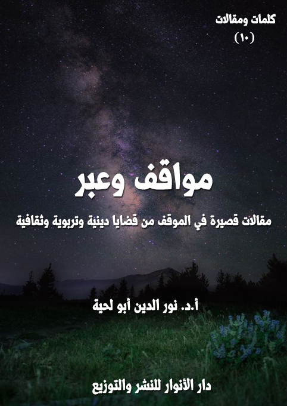

الكتاب: مواقف وعبر
الوصف: مقالات قصيرة في الموقف من قضايا دينية وتربوية وثقافية
السلسلة: كلمات ومقالات
المؤلف: أ. د. نور الدين أبو لحية
الناشر: دار الأنوار للنشر والتوزيع
الطبعة: الثانية، 1443 هـ
عدد الصفحات: 217
ISBN: 978-3-330-97412-8
لمطالعة الكتاب من تطبيق مؤلفاتي المجاني وهو أحسن وأيسر: هنا

يحتوي هذا الكتاب على ما يقارب خمسين مقالة قصيرة نشرت في مجلات أو مدونات مختلفة، وهي تدور جميعا حول الموقف من بعض القضايا الدينية والتربوية والثقافية، وهذه عناوينها:
1. من هو الداعية الناجح؟
2. المفهوم الشرعي للنجاح والفشل.
3. الإسلاميون.. وانهيار القيم.
4. الإسلاميون.. واحتلال الأحياء.
5. لماذا استهان الناس بالقتل؟
6. إلى ورثة أبي جهل.
7. مكاييل مزدوجة.
8. الإسلاميون وصناعة الأعداء.
9. الإسلاميون.. ومصائب السياسة.
10. العلماء.. والفتنة.
11. عسكرة الدين.
12. الإسلاميون.. والتناقضات العقلية.
13. استراحة المجرمين.
14. لأصحاب العقول.. أقول.
15. سجالات ومواقف.
16. لماذا لا تترضى على الصحابة؟
17. تهمة التشيع.
18. لماذا لا ترد على الشيعة مثلما ترد على السلفية؟
19. لماذا لا ترد على الحداثيين بدل الرد على السلفيين؟
20. هل هناك سلفي معتدل؟.
21. نبوءة نبوية لا تنطبق إلا على السلفية.
22. لماذا تطلق عليهم لقب السلفية؟
23. السنة والسلفية.
24. السلفية والتكفير.
25. السلفية.. والجنة.
26. الإسلام.. والثورة المضادة.
27. هل نحن معرضون عن النبوة؟
28. رسالة إلى الأمل الموعود.
29. تناقضات قلبية.
30. التاريخ يعيد نفسه.
31. ضرورة البحث في التاريخ والأشخاص.
32. توضيح حول ايمان ابي طالب.
33. تعجب واستغراب.
34. لمن شاء أن يركب سفينة النجاة.
35. أقلام للمزاد العلني.
36. حقوق الطبع والنشر محفوظة.
37. لا تظلموا من يظلمونكم.
38. العدالة.. وتجريم التكفير.
39. خذوا دينكم من الأتقى.. لا من الأعلم.
40. الأعلمية.. والرسالية.
41. احترموا صحيح البخاري.
42. هل أنت متدين أم مريض نفسيا؟
43. الفرق الإسلامية: إعادة تصنيف.
44. التحسين والتقبيح بين العقل والشرع.
45. ذكريات وعبر.
46. وصايا غالية.
مواقف وعبر (9)
يحتوي هذا الكتاب على ما يقارب خمسين مقالة قصيرة نشرت في مجلات أو مدونات مختلفة، وهي تدور جميعا حول الموقف من بعض القضايا الدينية والتربوية والثقافية، وهذه عناوينها:
1. من هو الداعية الناجح؟
2. المفهوم الشرعي للنجاح والفشل.
3. الإسلاميون.. وانهيار القيم.
4. الإسلاميون.. واحتلال الأحياء.
5. لماذا استهان الناس بالقتل؟
6. إلى ورثة أبي جهل.
7. مكاييل مزدوجة.
8. الإسلاميون وصناعة الأعداء.
9. الإسلاميون.. ومصائب السياسة.
10. العلماء.. والفتنة.
11. عسكرة الدين.
12. الإسلاميون.. والتناقضات العقلية.
13. استراحة المجرمين.
14. لأصحاب العقول.. أقول.
15. سجالات ومواقف.
مواقف وعبر (10)
16. لماذا لا تترضى على الصحابة؟
17. تهمة التشيع.
18. لماذا لا ترد على الشيعة مثلما ترد على السلفية؟
19. لماذا لا ترد على الحداثيين بدل الرد على السلفيين؟
20. هل هناك سلفي معتدل؟.
21. نبوءة نبوية لا تنطبق إلا على السلفية.
22. لماذا تطلق عليهم لقب السلفية؟
23. السنة والسلفية.
24. السلفية والتكفير.
25. السلفية.. والجنة.
26. الإسلام.. والثورة المضادة.
27. هل نحن معرضون عن النبوة؟
28. رسالة إلى الأمل الموعود.
29. تناقضات قلبية.
30. التاريخ يعيد نفسه.
31. ضرورة البحث في التاريخ والأشخاص.
32. توضيح حول ايمان ابي طالب.
33. تعجب واستغراب.
34. لمن شاء أن يركب سفينة النجاة.
35. أقلام للمزاد العلني.
مواقف وعبر (11)
36. حقوق الطبع والنشر محفوظة.
37. لا تظلموا من يظلمونكم.
38. العدالة.. وتجريم التكفير.
39. خذوا دينكم من الأتقى.. لا من الأعلم.
40. الأعلمية.. والرسالية.
41. احترموا صحيح البخاري.
42. هل أنت متدين أم مريض نفسيا؟
43. الفرق الإسلامية: إعادة تصنيف.
44. التحسين والتقبيح بين العقل والشرع.
45. ذكريات وعبر.
46. وصايا غالية.
مواقف وعبر (12)
كما شهدت الساحة السياسية والاقتصادية والاجتماعية انحرافا كبيرا في الاعتبارات المرتبطة بمقاييس النجاح والفشل، فقد شهدت كذلك الساحة الأخطر، وهي الساحة الدينية بمن يمثلها من العلماء والدعاة انحرافا لا يقل عنها في ذلك.. بل لعل كل الانحرافات في المقاييس ناشئة من هذا الانحراف.
فالداعية الناجح في عالم الزور الذي نعيشه ليس ذلك العالم المتواضع الذي أفنى عمره في البحث والدراسة والتصنيف إلى أن هداه الله إلى الحقائق التي يدعو إليها على بصيرة وبينة وبرهان.. وليس ذلك الخامل الذي يفر من الشهرة والسمعة فراره من الأسد.. وليس ذلك الذي لا يقول الكلمة إلا بعد أن يحسب لها ألف حساب مخافة أن يفتري على الله ما لا يعلم.. وليس ذلك الزاهد الذي تنزه عن أموال الناس وهداياهم مستنا بسنة الرسل عليهم الصلاة والسلام في ذلك.. وليس ذلك الذي لا يفرق في نصيحته بين غني وفقير.. فهو في الناس مثل الناس لا يتميز عنهم بشيء.
الداعية الناجح في عالم الزور الذي نعيشه هو ذلك الذي يستطيع أن يستقطب بدهائه وذكائه جماهير الناس، لا لأنه يخاطبهم بما تقتضيه الشريعة، وإنما لأنه يخاطبهم بما تقتضيه أهواؤهم ورغباتهم.. فهو ينفذ ما تطلبه أذواقهم لا ما تطلبه الحقيقة.
والأنجح منه من يستطيع أن يستقطب بعض رجال الأعمال الذي يغدقون عليه من صنوف النعم بقدر ما يغدق عليهم من صنوف الفتاوى.
والأنجح منهما من يستطيع أن يصل إلى وسائل الإعلام.. فتقوم بالدعاية المجانية له ليتحول بعدها إلى رحالة لا يستقر به قرار، ولا تتاح له الفرصة ليبحث أو يطالع أو يراجع
مواقف وعبر (13)
أنفاسه.
والأنجح من هؤلاء جميعا من استطاع أن يجد له كرسيا في اتحاد علماء المسلمين أو في هيئة كبار العلماء.. وحينها يصبح موقفه دينا، والنظر إليه عبادة، والدفاع عنه قربة، والتضحية في سبيله شهادة.. ولو قتل بسبب فتاواه مئات الآلاف من الناس، فلا حرج عليه، فهو المجتهد الذي لا يخطئ.. ولو أخطأ فلا حرج عليه، وكل من قتل أو تشرد بسببه فداء لعيونه.
مواقف وعبر (14)
نلاحظ الكثير من الإسلاميين في هذه الأيام خصوصا، يصفون أي مشروع من المشاريع سياسيا كان أو اقتصاديا أو ثقافيا أو إعلاميا أو غير ذلك، بكونه مشروعا ناجحا أو فاشلا.. وعند التأمل في المقاييس التي يضعونها للنجاح والفشل نجد ابتعادهم عن المقياس الإلهي الذي نص عليه الله في كلماته المقدسة التي أنزلها على أنبيائه جميعا.
وكمثال على ذلك ما يعتبرونه نجاحا في التنمية والاقتصاد، فهم يغفلون في تقييمهم للمشاريع المختلفة عن بعد الحلال والحرام والمقبول والمرفوض في الشريعة، وكأن الله تعالى حرم الربا والاحتكار والغش والغبن على الأفراد، وأحله للحكومات.. وكأن الله تعالى حرم إشاعة الفواحش وانتشارها في المجتمعات، وأباحها إذا ما تولى وزير مسلم وزارة السياحة، لأنه لن ينجح إلا إذا انفتح بالسياحة على كل الناس، وأرضى كل الرغبات.. وهكذا إذا تولى المسلم وزارة الثقافة، فإنه سيمنع الرقابة، وسيتيح للمخرجين والفنانين أن يمارسوا كل ما تشتهيه أهواؤهم.
ومن الغرائب التي سمعتها من قناة الجزيرة وأخواتها وهن يشدن بمرسي ونجاحاته العظيمة أن الحرية كانت مكفولة للجميع في عهده حتى أن بعض الفنانين ذكر ـ وهو يثني على المشروع الإخواني ـ أن الكثير من المشاهد الإباحية التي كان يقصها الرقيب في عهد حسني مبارك لم يقص أمثالها في عهد مرسي..
وهكذا تحول بيريز العدو إلى صديق عزيز لمرسي وللإخوان لسبب بسيط، وهو أن الإسلاميين صار المقياس عندهم هو ما يريدون لا ما يريد الله وما تريد كلماته المقدسة التي يتاجرون بها.
مواقف وعبر (15)
من الملاحظات الجديرة بالاهتمام، والتي يحاول الإسلاميون ـ بمختلف صنوف التلاعب بالألفاظ ـ الاحتيال عليها ذلك الانهيار العجيب الذي أصاب القيم التي كانوا يزعمون أنهم يؤمنون بها، ويدعون الناس إليها ويضحون في سبيل ذلك، ويستشهدون له بسنة الله في ابتلاء الصالحين من عباده..
كانوا يقولون للناس: إن المشروع الإسلامي منطلق من القيم والمبادئ والأخلاق، ولذلك فإن العالم الممتلئ بالفساد سيواجه هذا المشروع، وسيعلن عليه الحرب الناعمة والصلبة، وسيقاطعه اقتصاديا، وسيشوهه إعلاميا.. ولكن مع ذلك لا مناص لنا من السعي لتحقيقه، والصبر على ذلك حتى لو اضطررنا في ظل المقاطعات الاقتصادية إلى الصوم والجوع وكل أصناف البلاء..
كانوا يقولون هذا، وهو مسطر في مراجعهم الكبرى من كتب سيد قطب وغيره.. ولكنهم.. ولست أدري كيف ولا لم.. تغيروا تغيرا جذريا.. لقد أصبحت القيم عندهم هي النجاح في الاقتصاد، ومقاومة البطالة، والنهوض بالتنمية.. ولا يهم الطريق المؤدي إلى ذلك..
وهم يستعملون النموذج التركي مادة لإشهار هذا المشروع والدعوة إليه.. وما أسهل على أي حاكم ـ سواء كان ليبراليا أو علمانيا أو لا دينيا ـ أن يطبق هذا المشروع: فما عليه سوى أن يلبس زوجته الحجاب لتسير معه، وهي ترتديه.. أما المجتمع فيمكنه أن يلبس ما يشاء، ولا رقابة عليه في ذلك.
ولا عليه سوى أن يحفظ بعض الأحاديث، ويقلد بعض الأئمة في قولها في خطبه..
مواقف وعبر (16)
ولا عليه سوى أن يستقبل نفرا من الإسلاميين المطاردين ويضع في يدهم بعض القنوات الفضائية ليسبحوا بحمده، ويلعنوا أعداءه، ولو كانوا من إخوانهم وأهل بلادهم.. ولا عليه سوى أن يقطع العلاقات مع جيرانه، ويعلن العداوة عليهم، بل يمكنه في سبيل النهوض باقتصاده أن يسرق مصانعهم، وسواحهم ليحولها إلى بلده.
ولا حرج عليه بعد ذلك ـ في سبيل حماية أمنه القومي ـ أن يقيم علاقات استراتيجية مع الكيان الصهيوني، وأن يتحالف مع الناتو، ويضع قواعده العسكرية على بلاده. ولا عليه ـ في سبيل أن يستقطب السواح ـ أن يفتح جميع الملاهي الحلال منها والحرام، وأن يقيم شواطئ للشواذ والمنحرفين، وأن يسمح ببيع جميع أنواع الخمور والمحرمات.
بل لا حرج عليه أن يعطي تراخيص للقنوات الإباحية، ويعطي معها التراخيص لكل أنواع الرذائل.. بل يسمح ببناء استديوهات خاصة بذلك تحميها الدولة ومشروعها الإسلامي لترسل للعالم الإنتاج الإباحي الإسلامي في أجمل صوره الدالة على التسامح والانفتاح.
هل يمكن لمن يرى تركيا بالصورة الحالية أن يعتبرها نموذجا للمشروع الإسلامي القائم على الأخلاق والقيم والمبادئ؟ وهل انهارت القيم لدى الإسلاميين حتى صارت إلى هذا الدرك المنحط؟
لست أدري هل اخترقت عقول الإسلاميين؟.. أم أن هذه هي المبادئ التي كانوا يؤمنون بها، ولكنهم كانوا يطلونها بذلك الطلاء البراق ليستقطبوا السذج من أمثالي، فإذا ما ثاروا على هذه الانحرافات خونوهم واتهموهم بأنهم تغيروا.
ولست أدري من تغير.. هل ذلك الذي باع دينه للشيطان أم ذلك الحريص على القيم والمبادئ والأخلاق ولو ضحى في سبيلها بكل ما يملك، لأن الله لم يودعنا هذه
مواقف وعبر (17)
الأرض لنعمر الاقتصاد، وإنما أودعنا فيها لنعمر قلوبنا وأرواحنا بالقيم والمبادئ والأخلاق.
مواقف وعبر (18)
من الأمور العجيبة التي وقع فيها الإسلاميون من حيث لا يشعرون ذلك السقوط الحر الذي أصاب هممهم العالية، فبينما كانوا في بداية عهدهم ينادون بعودة الخلافة التي تشمل جميع البلاد الإسلامية، ويذكرون أنهم لا يؤمنون بكل ما حصل في الأرض الإسلامية من تقسيم، وأن جهودهم عالمية، وتنظيمهم عالمي، إذا بهم ينحدرون ـ أول الأمر ـ إلى الإيمان بالدولة القطرية، وأنه يكفي أن يقام مشروعهم في أي بلاد من البلاد الإسلامية.. ثم ينحدرون أكثر فيكتفون باحتلال المدن، وقد تحقق ذلك عندما احتلوا حماة.. ثم احتلوا بعدها مدنا أخرى إبان الفتنة السورية.
ثم ينحدرون أكثر، فيكتفون باحتلال الأحياء، ولست أدري ما جدوى احتلال الأحياء؟.. وهل يمكن أن يقام المشروع الإسلامي في حي منفصل عن مدينته وعن دولته وعن العالم؟ وهل يمكن أن يعيش الناس مطمئنين وهم محاصرون ضمن حي من الأحياء لا يبرحونه، ولا يختلطون بمن حولهم من أهل بلدهم أو غيرهم؟
ومن يظن أنني أدعي فلينظر في نشرات الأخبار بعقله إلى أولئك المساكين المحاصرين في بعض أحياء حلب بسبب تعنت أولئك الإسلاميين العاشقين للسلطة..
أو فلينظر عبر اليوتيوب إلى تلك الأيام التي احتل فيها الإخوان في مصر حي رابعة.. وتصوروا أن الدولة ستسلمها لهم بالمجان يحرضون من خلالها على الفتنة، ويدعون إلى الكراهية..
لقد كان أي عاقل مدركا أنه لا يوجد نظام في الدنيا ـ مهما كان ديمقراطيا ـ يسلم لأي جهة باحتلال أي شبر من أرضه حتى لو قتل جميع سكان الحي المحتل.. ولذلك كانت
مواقف وعبر (19)
النهاية الطبيعية لذلك الاحتلال الأخرق أن يواجه من طرف الشرطة أو الجيش أو غيرهم..
وهو شيء طبيعي تقوم به أي دولة، ولو سقط ضحايا، لأن الذي أسقطهم هو الذي استعملهم وقودا لإشعال نيران الفتن.
لست أدري إلى ما سيؤول إليه انحدار الإسلاميين، وهم يلهثون وراء السلطة.. لعله يأتي اليوم الذي يحتلون فيه بيوت الناس، ويكتفون بها لإقامة مشروعهم الظلامي.
مواقف وعبر (20)
من الظواهر المتفق عليها، والتي لا تحتاج إلى أدلة تثبتها وتبرهن عليها ظاهرة الاستهانة بالقتل.. فقد أصبح شيئا سهلا هينا، وصارت أخباره كسائر الأخبار لا تحدث في النفس ذلك الهلع والألم والحزن الذي كانت تحدثه إبان كان الإنسان على الفطرة التي خلقه الله عليها.
فما سر ذلك؟ وما الذي جعل البشر يقع في هذه الخطيئة العظيمة التي هي أعظم خطيئة على وجه الأرض، فالإنسان بنيان الله وملعون من هدمه؟
والسؤال الأخطر من ذلك هو عن سر وجود هذه الظاهرة بين المسلمين الذين ينص كتابهم وسنة نبيهم على عظم هذه الجريمة وخطرها، فالقرآن الكريم توعد القاتل المتعمد بالخلود في النار بالإضافة إلى غضب الله عليه، ولعنه، قال تعالى: ﴿وَمَنْ يَقْتُلْ مُؤْمِنًا مُتَعَمِّدًا فَجَزَاؤُهُ جَهَنَّمُ خَالِدًا فِيهَا وَغَضِبَ اللَّهُ عَلَيْهِ وَلَعَنَهُ وَأَعَدَّ لَهُ عَذَابًا عَظِيمًا﴾ [النساء: 93]
والنبي صلى الله عليه وآله وسلم اعتبر القتل من أعظم الجرائم، فقال: (والذي نفسي بيده لقتل مؤمن أعظم عند الله من زوال الدنيا) (1)
واعتبره من أول وأعظم ما يقضى به يوم القيامة، ليأخذ كل حقه، فقال: (أول ما يحاسب به العبد الصلاة، وأول ما يقضى بين الناس الدماء) (2)
بل ذكر ما هو أخطر من ذلك، فقال: (لا يزال المؤمن في فسحة من دينه ما لم يصب
__________
(1) النسائي 7/ 82.
(2) البخاري 9/ 3.
مواقف وعبر (21)
دما حراما) (1)
لكن كل هذه التوجيهات وغيرها كثير لم يردع النفوس عن استساغة هذه الجريمة، والتهوين من شأنها، واعتبار قتل الإنسان شيئا لا يختلف كثيرا عن قتل الذباب والبعوض والهوام.. فما سر ذلك؟
طبعا.. ليس في طاقتي أن أجيب عن هذا السؤال الخطير، لأني لست محللا نفسيا، ولا اجتماعيا، ولا خبيرا استراتيجيا، ولا علم لي بالطرق التي يستعملها الشيطان لجر الإنسان إلى صفه.
ولكني أستطيع أن أذكر شيئا حصل لي اليوم ربما يفيد الخبراء في التحليل والاستنتاج..
فقد خرجت من بيتي بعد أن قرفت نفسي من أخبار التلفزيون الممتلئة بأولئك الذين يكبرون مستبشرين لكل دم يزهق، ولكل بنيان يهدم، حتى حصل للبعض فوبيا بسبب التكبير.
في طريقي مررت على محل لبيع الجرائد، فأردت أن أشتري جريدة أتسلى بها، وأنسى بها ما بثته القنوات الفضائية، فقرأت بالبنط العريض في الصفحة الأولى من الجريدة: أم تقتل ولديها.. وولد يقتل أباه.. وأخ يحرق البيت على أخته وزوجها.. وهكذا.. فنفرت نفسي، وأعرضت عن الجريدة.. ورحت أبحث عن هواء نقي لم يتلوث برائحة الدماء.
فجأة سمعت صوتا فصيحا بليغا ينطلق من المسجد، فاقتربت منه، وسألت عن صاحب الصوت، فأخبرت أنه داعية كبير جاءنا من تلك البلاد الممتلئة بالقداسة، ففرحت،
__________
(1) البخاري 9/ 2.
مواقف وعبر (22)
وقلت لنفسي: ها قد أرسل الله لك من يريحك من روائح الدماء.
دخلت المسجد، وليتني ما دخلت.. فقد كانت روائح الدماء التي تنطلق من فم الخطيب أبشع من كل الروائح التي مررت بها ذلك اليوم.
لقد جاءنا هذا الخطيب من بلاد بعيدة لا لينشر فينا الورع والتقوى والإيمان والصلاح.. ولكن جاء ليهون في نفوسنا ما هو هين أصلا..
لقد جاءنا يقصص علينا القصص كعادة الكثير من الخطباء في هذه الأيام.. ولا حرج عليه في ذلك فللقصص تأثيرها التربوي الكبير.. ولكن هذا الخطيب المحترم لم تكفه كل قصص القرآن الكريم المتفق عليها، ولم تكفه الكثير من القصص التربوية التي كان النبي صلى الله عليه وآله وسلم يربي بها أمته..
لم يكفه كل هذا، فراح يختار من الأحاديث حديث الذي قتل مائة نفس، وهو وإن قيل بصحته سندا، فقد شكك في صحته متنا..
ولكن ليته اكتفى بقراءته.. بل راح ـ بما آتاه الله من فصاحة وبلاغة ـ يطنب في الوصف حتى حول من القاتل الذي تجرأ على إزهاق أرواح مائة نفس كاملة رجلا صالحا، بل وليا من أولياء الله.. وأنه لم ولن يحاسب على كل ما اقترفه من جرائم.. وأنه مباشرة بعد قتله للقتيل المائة، ثم عزمه على التوبة، وخروجه من بلده، وموته في الطريق سار مباشرة إلى الجنة..
وقد وكل الخطيب نفسه محاميا عن هذا القاتل، فاعتذر له بكل صنوف الاعتذارات، وبين أن المشكلة ليست فيه، ولكن في قريته التي لم تعرف كيف تتعامل معه، ولذلك لم ينصحه العالم بأن يكفر عن أخطائه في قريته، فيصحح ما أفسده، ويدفع الديات، ويرد الحقوق، ويتكفل باليتامى الذين كان سبب يتمهم، وإنما نصحه بأن يخرج منها قبل أن يبيد
مواقف وعبر (23)
أخضرها ويابسها.
وكان الخطيب منفعلا في كل ذلك.. وكأن له علاقة نسبية بذلك القاتل.. أو كأنه قد ذاق من لذة القتل ما ذاقه صاحبه، فراح يصف لنا جميل ما تذوقه، وراح يمني نفسه بملائكة الرحمة الذين سيقبضون روحه كما قبضوا روح الإسرائيلي.
لا أستطيع أن أنقل لكم كل ما قال في خطبته حتى لا تتأثروا بها، وحتى لا أزيد في التهوين من أمر الأرواح فوق ما يوجد لديكم.. ولكني فقط سأذكر بعض ما حصل بعد انتهاء خطبته.. فقد خرجت كما خرج سائر الناس، وقد لفت انتباهي رجلين يتحدثان، قال أحدهما لصاحبه وهو يحاوره: (أرأيت.. لقد كدت تقتل نفسك ندما لما فعلته من قتل خطأ.. وها هو العالم الجليل قد وضح لك أن الأمر أهون من أن يؤثر فيك).. قال له صاحبه: (صدقت.. فمع أن ذلك الإسرائيلي قتل مائة نفس.. وعمدا.. ومع ذلك تجاوز الله عنه.. ولم يحاسبه.. ولم يخاصمه من قتلهم.. فكيف بي أنا.. وأنا لم أقتل إلا شخصا واحد.. ولم أكن أقصد قتله.. بل هو المتسبب، فلولا أنه أغضبني ما فعلت به ما فعلت)
ثم قال بعدها بحقد وجرأة: (يستاهل)
قال ذلك، ثم مضى مستبشرا، لأنه وجد من يدافع عنه بالمجان، بل وجد من يعطيه صك الغفران، ومعه مفاتيح الجنان.
هذا بعض ما حصل لي اليوم أضعه بين يدي الخبراء، لعلهم يرون من خلاله بعض الأسباب التي جعلت دم الإنسان أحقر الدماء وأذلها وأهونها.
مواقف وعبر (24)
اعذروني إن أطلقت عليكم هذا اللقب الجديد، فقد رأيت أنه جدير بكم أيضا، مثلما كان لقب [ورثة إبليس]؛ فأنتم لم تكتفوا بوراثة الكبر والاستعلاء والاستبداد وإلغاء الآخر وادعاء الخيرية من إبليس فقط، وإنما رحتم لأحد تلاميذه النجباء، وهو (أبو جهل) ترثون منه صلفه واستعلاءه وجهله وتعلقه المطلق بآبائه وأجداده للدرجة التي راح يكذب فيها كل ما رآه من آيات للنبي صلى الله عليه وآله وسلم، تعلقا بهم، وخوفا من أن يُسلب منه سلفه الذين عظمهم من دون الله.
وكذلك أنتم.. ففي سبيل سلفكم الذين أعطيتموهم العصمة المطلقة، رحتم تصادرون المعرفة، وتلغون العقول، وتطالبون الفلاسفة بالتوقف عن التفكير، وتطالبون العلماء بالتوقف عن سبر أغوار الكون.. والشعراء بأن يتخلوا عن أحاسيسهم ومشاعرهم.. والفنانين بأن يقطعوا أوتار حبالهم الصوتية.. ليخلو الجو لكم وحدكم، ولسلفكم الذين زين لكم الشيطان أنهم معصومون، وأنهم الناطقون باسم الله في الأرض.
أنتم تفعلون ذلك، مع أنكم تعلمون أن الممالك التي حمتكم وصدرتكم للعالم، وشوهت الإسلام بسببكم، تلفظ أنفاسها الأخيرة، وروائحها النتنة شمها العالم أجمع، وهي تستعمل كل الوسائل لتتبرأ منكم، مثلما تبرأت من تلك الجماعات المسلحة التي ربتها على عينها، واستعملتها لكل الأغراض الخسيسة، ثم راحت تفتي بقتلها، وتتبرأ منها، كما تتبرأ منكم الآن.. ولذلك لا تتعلقوا بها، ولا بغيرها، فكل من تعلق بالقشة غرق.
أنا لا أطالبكم بالعودة إلى عقولكم، لأني لست متأكدا من وجودها عندكم، ولكني أطالبكم بأن تلجموا ألسنتكم، وتكفوا شركم، فالكل صار يعرفكم، وكيف لا يعرفونكم،
مواقف وعبر (25)
وأنتم من شوهتم الدين، ونشرتم الإرهاب، وحولتم الإسلام إلى دين منغلق متشدد لا يعرف سوى الذبح والقتل وقمع الحريات.
أنتم إلى الآن لا تزالون تتصورون أنه يمكن أن يعود معاوية أو يزيد أو مروان أو المتوكل أو كل الطواغيت الذين كنتم سدنة لهم.. ولكن زمن الطواغيت ومحاكم التفتيش قد رفع من الأرض، ولن يمكنكم أبدا أن تفعلوا ما فعله سلفكم من حرق الكتب ومصادرتها وتكميم الأفواه وقطع الألسنة.. فالعالم الآن قرية صغيرة، وإن أمكنكم أن تصادروا كتابا، أو تشمعوا مكتبة، فلن يمكنكم مصادرة آلاف النسخ الإلكترونية، ومئات المواقع المرتبطة بها..
لابد أن تعلموا أن زمن قمع الحريات قد انتهى، وأن العالم الآن منفتح بعضه على بعض، وكل يعرض بضاعته، ولا شك أن بضاعتكم هي أردأ بضاعة، لأنها وليدة أحقادكم التي ورثتموها من أبي جهل.. ولذلك لن يشتريها منكم إلا الحمقى والمغفلون.. فزمنكم قد انتهى، لأن الباطل لابد أن يزهق، والحق لابد أن يظهر..
فأدركوا أنفسكم، وعودوا إلى العقول التي ألغيتموها، لتبصروا جرائمكم في حق نبيكم، والقيم العظيمة التي جاء بها، وكيف حولتموها بأمراضكم النفسية إلى قيم ضلالة، لا قيم هداية؛ فصار الكل يفرون إلى أي شيء حتى إلى الإلحاد هربا من تلك الروائح المنتنة التي تنبعث منكم.
فطهروا أنفسكم، وعودوا إلى وعيكم.. واخرجوا من تلك السجون التي سجنتم فيها عقولكم، فأنتم أشبه الناس بذلك الدب الذي راح يذب الذباب عن صاحبه، فرمى صخرة عليه، فقتله بها.. وهكذا تفعلون أنتم مع الإسلام وقيم الإسلام.
وأخبركم بعد هذا أن زمن العنتريات قد انتهى.. والخوف الذي تنشرونه بين الناس
مواقف وعبر (26)
قد كُسر جداره، ولم يبق أحد يخافكم، أو يخاف ألسنتكم المملوءة بالبذاءة.. فأنتم مجرد هررة منتفخة، ورقم ضائع، وحسابكم قد أغلق، والشياطين التي كانت تمدكم تصيح متبرئة منكم.. فعودوا إلى وعيكم قبل أن يغمركم الطوفان، وتجرفكم السيول.
مواقف وعبر (27)
عندما نشرت صورة للعالم المصري الكبير أحمد زويل بعد وفاته، وهو عالم في العلوم الحديثة، وله إنجازات كبيرة فيها أهلته لنيل جائزة نوبل عن جدارة، وكان له ـ مع ذلك، وكما سمعت، ولست متأكدا ـ بعض الخدمات لبلده مصر من خلال تشجيعه للبحث العلمي، وخدمته للباحثين، ثار بعض الإخوة الأفاضل، وراحوا يشهرون به، وينتقدونه في موقفه من الكيان الصهيوني، وأنا معهم في هذا الموقف من كل مطبع مع إسرائيل..
ولكن إشادتي به كانت بسبب علمه لا بسبب مواقفه السياسية.. وعلاقته بإسرائيل في حال صحتها لا تعدو موقفا شخصيا، وقد يكون له مبرراته في ذلك، والتي قد تقبل وقد ترفض.
لكن المشكلة أن هؤلاء الذين أقاموا الدنيا لأجل علاقة هذا العالم الكبير مع إسرائيل هم أنفسهم يمجدون السلطان أردوغان، وعلاقته الاستراتيجيه بإسرائيل لا شك فيها.. وعلاقته بالناتو الذي يسمونه حلفا صليبيا لا شك فيها.. وهو فوق ذلك لا يمثل نفسه، بل يمثل دولة إسلامية كبيرة، وفوق ذلك ليس لديه أي مبرر يجعله يقيم تلك العلاقة..
ومع ذلك يمجدونه، ويترضون عنه، ويقيمون الحروب لأجله، ويعتبرونه ممثل الإسلام الأوحد. فعجبا لكم وللمكاييل العجيبة التي تزنون بها مواقفكم..
مواقف وعبر (28)
من القدرات العجيبة التي يتقنها الإسلاميون جيدا قدرتهم على صناعة الأعداء.. فما أسهل أن يحولوا من الصديق عدوا، ومن المقبل عليهم معرضا عنهم، ومن المثني عليهم هاجيا لهم.
وسبب ذلك هو تلك الشروط المجحفة التي يضعونها فيمن يصادقونه، فهم يطلبون منه أن يتحول إلى دمية يسكن بتسكينهم، ويتحرك بتحريكهم، ولا يتكلم إلا بما يملون عليه قوله.
ولست أحتاج في هذا لبراهين وأدلة.. فالواقع يدل على ذلك.. ففي مصر ـ مثلا ـ وبعد أن عزل رئيسهم الذي لا يزالون يسبحون بحمده.. عادوا كل شيء.. فالأزهر صار خائنا، وعلماؤه صاروا مرتزقة، والجيش صار عميلا، والإعلام صار أبواقا..
وهكذا لو حسبنا عدد الذين يعادونهم في مصر لوجدناهم عشرات الملايين.. فالطرق الصوفية والجيش والعامة والفلول والبلطجية والداخلية والعلمانيون والأحزاب كلهم خونة ضالون لأنهم لا يطالبون بعودة الرئيس المعزول مهديهم الذين ينتظرون فرجه كل حين.
أما في تركيا.. والتي صارت فردوسهم الذي يفخرون به.. فإن العاقل لو تأمل مواقفهم من الشعب التركي لوجدهم يقفون منه نفس موقفهم من الشعب المصري.. ففي تركيا أكراد وشيعة بعشرات الملايين، وهم يعادونهم طبعا.. وفيها علمانيون بعشرات الملايين.. وهم يعادونهم طبعا.. وفي تركيا طرق صوفية كثيرة، وهي بحسب أدبياتهم نوعا من الزندقة والكفر والضلال.. وفي تركيا جماعة النور التابعة لبديع الزمان النورسي، والتي
مواقف وعبر (29)
يمثلها الآن تلميذه فتح الله غولن.. وهي الآن تعتبر كيانا موازيا، وهم يحاربونها ويضللونها.. وفي تركيا جيش كسائر الدول، وهم في طبيعتهم يعادون الجيوش..
فإذا حسبنا كل هؤلاء.. فلن نجد في تركيا التي يفخرون بها ويعتبرونها نموذجا سوى ثلة قليلة من الناس، لو أطيح بها، فسينهار مشروعهم جميعا..
وعجبا لمشروع يحمل اسم الإسلام العظيم تتوقف حياته على أفراد من الناس إن سقطوا سقط، وإن نهضوا نهض.. إن مشروعهم أشبه ببيت العنكبوت منه بمشروع الله لعباده الذي شبهه الله بالشجرة الثابتة الراسخة في الأرض.. والتي تؤتي أكلها كل حين.
مواقف وعبر (30)
في ذلك اليوم قام أحد العلماء يتحدث بحماس مشوب بحزن، وبعظة ممزوجة بعلم، عن ضرورة اشتغال من رغبوا عن اسم (المسلمين) إلى اسم (الإسلاميين) بالتربية والتوجيه والإصلاح الاجتماعي والاهتمام بالمجتمع وترك السياسة لأربابها وعدم الخوض فيها أو الاقتراب منها، فمنافعها لا تقاوم أضرارها، ومصالحها لا ترجح على مفاسدها.
وكان الشباب في ذلك الحين متحمسا يكاد يلتهب من الحماسة، فالآمال يبرق بريقها كل حين، والأيدي توشك أن تحقق ما عجز عنه الأولون والآخرون، فلذلك طبع كلامه الجو باحتجاج صامت، ولولا أن هناك بعض رجال الدولة كان جالسا بين الجموع يستمع لقام الحضور إليه يعنقونه، أو يسبونه، أو يرمونه بنعالهم.
ومرت الأيام.. وذاق الإسلاميون مرارة الاختيار الذي اختاروه لأنفسهم، ولمجتمعاتهم.. نتساءل: هل كان ذلك العالم محقا فيما قال؟ ولو حصل ما نادى به ودعا إليه أكان يحدث ما حدث؟
ولو قابل الإسلاميون كلامه بمنطق واقعي، وبالحكمة التي تستقبل كل شيء وتستفيد منه لا تسوقها الحماسة، ولا يؤجج نارها الغضب، فتترك له السياسة وكراسيها وجاهها وفعاليتها، وتلتزم بالقواعد التي كانت بيدها تربي وتوجه وتصلح، هل سيحدث التشريد، وتنكس الأعلام، وتنتشر الفوضى، وتفرق الأمة الواحدة مزعا وأشتاتا.
لقد كانت الصحوة الإسلامية ـ كما كانت تسمى ذلك الوقت ـ في منتهى عنفوانها، وفي أعلى درجات تألقها، ولم يكن بينها وبين أي مؤسسة من المؤسسات العامة أي حائل، فالمساجد في أيديها تتحلق متى تشاء، وتدرس من العلوم ما تريد، بل تخطب الخطب
مواقف وعبر (31)
الحماسية المتدفقة وبمضخمات الصوت الخارجية دون أن يمنعها أحد أو يقف في طريقها، ومراكز الثقافة ودور الشباب كلها مؤسسات كانت دورا لنشاطها الثقافي والمسرحي والدعوي، وكان في إمكانها أن تستغلها كما تشاء وتؤثر بها فيمن تريد.
وبالإضافة إلى كل تلك المؤسسات كفتن شباب الصحوة وكهولها يترقون في كل المناصب ويحتكون بكل الفئات، ويلقون الاحترام من عوام الناس وخواصهم، ولكنهم لم يقنعوا بكل ذلك، ولم يرضوا ما هم عليه، فامتد بريق أعينهم إلى تلك الكراسي المذهبة، وأرادوا أن يلجوا عالم السياسة الخطير، ورددوا مقالتهم المشهورة: (سياستنا دين و، وديننا سياسة)، فماذا حدث؟
أول مصيبة من مصائب السياسة صبت عليهم مصيبة التفرق والتشتت والاختلاف، فأسسوا أحزابا وجمعيات مختلفة متناقضة، وبدأ السباب والشقاق بينهم ينشر في الصحف، وتتناقله وسائل الاعلام، ويثير الاستغراب والدهشة في نفوس العامة والخاصة، ويرفع عنهم مسوح الأولياء التي كان يتمسح بها الناس ويتركون بها.
ولكن الدهاء السياسي مكنهم من تجاوز هذه العقبة، لا بالعودة إلى الوحدة وضم الصفوف، انما بإقناع كل طرف لجمهوره أن الحق معه يتأول لذلك القرآن والسنة وكلام العلماء فانتقلوا من الحديث عن الصلاة والأمانة والعفاف إلى الحديث عن مهاترات السياسة وفضائح الأحزاب وبرامج الحكم.
وانتقل الشقاق من خاصة الصحوة إلى عامتهم وعامة الناس وانتقلت أحاديث الجماهير المصاحبة لهم من ترديد القرآن والحديث ومناقب الرسول إلى هدي زعمائهم وبرامجهم ومناقبهم.
وخرجوا جميعا من المساجد والمؤسسات التي كانت بأيديهم إلى الشوارع والأماكن
مواقف وعبر (32)
العامة كل يبرز عضلاته، ويعرض قوته، ويشهر التفاف الناس بل السماء حوله.
ثم حدث ما حدث من سوء التقدير، فتكلموا في المساجد العامة عن الأمور الخاصة، ومزجوا بين أشخاصهم وأحزابهم وتعاليم السماء، فاعتبر كلامهم حملات انتخابية ليس لهم أن ينفردوا بها دون سائر الأحزاب كما تنص عليه القوانين الديمقراطية.
فكان المسجد أول قلعة تترع من أيديهم لأنهم لم يقدروه حق قدره، ولم يعرفوا منزلته التأثيرية التي وصلوا بها إلى ما وصلوا، وسنة الله في خلقه تأبى أن تترك لجاحد نعمة، قال تعالى: ﴿أَلَمْ تَرَ إِلَى الَّذِينَ بَدَّلُوا نِعْمَتَ اللَّهِ كُفْرًا وَأَحَلُّوا قَوْمَهُمْ دَارَ الْبَوَارِ﴾ [إبراهيم: 28]، فكان جحودهم نعم الله هو الذي جعلهم يحيلون قومهم دار البوار.
والأمر الأدهى من ذلك أن اعتبر الكلام في الدين نفسه ممارسة سياسية وحملة انتخابية وتكثيرا لسواد جمعية أو حزب أو اتجاه، وعم ذلك إلى كل ملتزم غيور على دينه، فإذا أمر بالمعروف أو نهى عن المنكر، أو وجه نصيحة سئل عن انتمائه الحزبي، ولم يكد يسمع لما قال.
وانطلاقا من كل تلك المفارقات العجيبة ظهر التطرف بجميع مظاهره وأنواعه وأساليبه، ونشأت فرق كان التاريخ قد اغتالها منذ مئات السنين.
ظهر التطرف اللاديني يزهد في أحكام الله، ويرميها بالتخلف والشذوذ، ويعتبرها وثائق تاريخية كوثائق حمورابي والقانون الروماني، ولا يعجز أن يضرب المثل لذلك بمن يراهم في الساحات والشوارع يمثلون الإسلام أسوأ تمثيل.
ونشأ عن التطرف اللاديني تطرف ديني هو ثالثة الأثافي وداهية الدواهي، بدأ كلاما معسولا مملوء بالدعاوى وبالقدرات العجيبة وبالأحلام والأماني، فجر الناس جميعا، وأصبح كل شخص يحلم كما يشاء وبما يشاء، وقد قال لي بعض العامة من التجار في ذلك
مواقف وعبر (33)
الحين يسألني: (أحقا ستلغى الضرائب لأنها حرام، فليس في المال إلا الزكاة) فقلت: (لا أعلم، ولكن الذي أعلمه هو أن في المال حق سوى الزكاة قد تضطر الدولة لفرضه، ولو اقتسمت مع الأغنياء أموالهم) فأعرض عني، وأشاح بوجهه لأن الحماسة التي كانت تتدفق من كلامه لم تنبعث من إيمان راسخ بقدر ما انبعثت من طمع دفين.
ثم سرعان ما تحول الكلام البسيط إلى تركيبات معقدة وجمل عنيفة وعبارات تهديد، وصفق الناس جميعا وهللوا وكبروا، وهم لا يدركون المصير الذي ينتظرهم.
لقد فتحت جميع عيون الفتنة بتلك العبارات الشديدة وذلك السب البذيء، والفتنة نائمة ملعون من أيقظها.
اختلط بعدها الحابل بالنابل، وكثر الهرج والمرج، وامتدت الفتنة إلى جميع أنحاء البلاد، ولم يسلم النساء والأطفال، ولا الجدران والأشجار، وأخذ العقلاء يتملصون من كل مسؤولية، وأخذ من أنبه ضميره وحركه داعي الإيمان في قلبه لتلافي الأخطاء فلم يستطع لأن السيل صار طوفانا يحرف كل شيء ولا يقف أمامه شيء.
وحزن الجميع وبكوا، وكثر اليتامى والأرامل، وسنحت الفرصة لكل أعداء الإسلام لحرب جديدة على الإسلام لم يكونوا يحلمون بها، أوهم الذين خططوا لها، حرب يمثلها الذين كانوا بالأمس دعاة وأولياء وعلماء.
فأخذت صور الذين بكوا وندبوا وصور الحرائق والمدافن والمذابح ووضع عليها عنوان واحد دون أي تعليق، هذا العنوان هو: (الإسلام)
أصبح الإسلام هو عنوان الإرهاب، والإرهاب عنوان الإسلام، وارتد من كان يعبد الله على حرف، وهرب من كان يبحث عن الحقيقة، وتصبب عرق العلماء والغيورين على الدين وهم ينتقلون من الكلام عن محاسن الإسلام وتسامح التاريخ الإسلامي
مواقف وعبر (34)
وصفات الله إلى الدفاع عن الدين بحياء وخجل، وإلى التنديد بكل مذبحة والتأسف على كل جريمة كما يتأسف الآباء عن تصرفات أولادهم الحمقى.
لقد كانت المصيبة طامة والنائبة عامة احترق لها قلب كل مؤمن.
ولكن كان هناك المعتدلون الذين آلمهم أن يحدث ما حدث، ونسبوا الأخطاء لمرتكبها، وبرؤوا السياسة والممارسات السياسية من كل تعفن لكنهم مع ذلك لم يتوبوا من السياسة، فهل تنتظرهم مصائب كالتي حصلت، أوهم بحكمتهم وخبرتهم أعقل من أن يقعوا في الفخ الذي وقع فيع غيرهم.
لعل من الحماقة وعدم الخبرة أن نعتقد أن الأحداث ستعيد نفسها بنفس الصورة التي وقعت بها لأن الله تعالى بحكمته يبتلي بالسراء والضراء، ويمتحن عباده بالفقر والغنى والخمول والجاه.
و هؤلاء المعتدلون خاضوا هذا البحر الخضم باسم الإسلام وبشريتهم فهل يمكن أن نستكنه ما سيحصل لتجنبه ونبرئ الإسلام من أخطار جديدة يمكن أن يقع فيها؟
لم تتوصل الصحوة الإسلامية بتحقيق أحلامها في البدء، وأستفزت ووسم الإسلام بالإرهاب، فهل يمكن أن يوصف بأوصاف أخرى، ويستدرج الممثلون له لإثبات ذلك؟
ألا يمكن أن يمكن الإسلاميون من الوصول إلى السلطة وإلى أعلى الهرم، ثم يضيق عليهم في الرزق، يضرب على البلد الحصار لسبب أو لغير سبب، وتعم الفوضى، ويشتد الجوع، ثم يقال: هذا هو بلدهم كيف كان قبل الإسلام، وكيف صار بعده؟
أو يمكن أن يمكنوا من السلطة أيضا، ثم يستدرجوا في عالم يحكمه الدهاء والمصالح إلى مشاريع تهدد الاقتصاد والاجتماع والسياسة، وتهدد معها سمعة الدين نفسه وقدراته.
أو يمكن أن يداريهم في ذلك الحين أرباب المصالح الذين يتقلبون مع كل ريح،
مواقف وعبر (35)
ويلبسون لكل حالة لبوسها، فيسرقون كما كانوا يسرقون، ويضيع المواطن باسم الإسلام، وباسم حكم الإسلام، أو يمكن أن يستدرجوا إلى الفضائح المالية أو الأخلاقية أو الاجتماعية.. أليسوا بشرا، ثم يقال: هؤلاء هم المسلمون.. وهذا هو دينهم.
إن عد الممكنات في ذلك مستحيل، والنبيه الفطن هو الذي يحسب لكل أمر حسابه، ويستعد له قبل حصوله.. فهل عند الإسلاميين الطاقة الأخلاقية والخبرة السياسية والعلم الوفير الذي يمكنهم من حمل الأمانة، وتمثيل الإسلام..
لقد قال رسول الله صلى الله عليه وآله وسلم لأبي ذر الزاهد العفيف لما طلب العمل: يا أبا ذر إنك ضعيف، وإنها أمانة، وإنها يوم القيامة خزي وندامة إلا من أخذها بحقها، وأدى الذي عليه فيها.
إن أحزابا ضخمة تسقط وتتقلص شعبيتها لخطأ واحد يرتكبه زعيمها أو فرد واحد منها، فهل تتقلص شعبية الإسلام إن حكم باسمه، واقترفت مثل تلك الأخطاء؟
أليس من الأجدى أن نحكم باسمنا وضعفنا، فإن أصبنا الحق كان من ديننا، وإن وقعنا في الباطل كان من أنفسنا لأن الإسلام لا تغره الأسامي، ولا تنشره الدعاوي، وإنما تنصره الحقائق، ويثبته الحق والعدل؟
لقد ردد أبو الحسن الندوي طويلا على الشباب المتحمس خياره: (إما أن يسلم الحاكم، أو يحكم المسلم)، ثم يردد ما فعله المسلمون الذين كانوا تحت حكم التتر من ترقيق قلوبهم الغليظة، ثم إقناعهم بالإسلام وشريعته، فحكموا بالإسلام دون انتخابات ولا انقلابات ولا ضحايا.
ولكن هؤلاء أبوا إلا أن يحكموا هم، مع أن النظام السياسي الإسلامي القائم على المصالح الشرعية لا يقر أحدا في منصب إلا بقدرات وتخصصات تدعمها الخبرة الطويلة.
ألم يكن في إمكانهم أن يشكلوا قوة يسعى المرشحون إليها يتزلفونهم، ويطلبون
مواقف وعبر (36)
أصواتهم مقابل تحقيق أمانيهم ومطالبهم، فيفوزوا بأغراضهم دون تلطيخ لأسمائهم أو تلطيخ لاسم الإسلام المقدس؟
لعلهم يقولون: إن لوجودنا في الجهاز الحاكم تأثيرا كبيرا، فنحن الذين نحمي قانون الأسرة، نحمي التعريب، ونطالب بإصلاح نظام التعليم.
ولكن مثل هذه المطالب الصغيرة أمام ذرائع الفساد الكثيرة التي تطلبهم وتترصد لهم ليست بشيء، ومع ذلك كان في إمكانهم لو حافظوا على القاعدة، أو رجعوا إليها أن ينالوا أكثر مما يحملون لأن القاعدة هي التي ستطلب كل ذلك الإصلاح وغيره، ولن يقف في طريق الجماهير أحد.
أما وهم في تلك المواقع فإنهم لن يستطيعوا أن يفعلوا شيئا إن تسرب للجماهير من يضلها عن دينها أو يبعدها عن لغتها، بل قد يوقعون بأنفسهم القرارات التي لا تقنعهم ولا يرضى بها دينهم لأن القاعدة طلبت ذلك، والأغلبية استقر رأيها عليه.
ففي أيهما تكون المكاسب؟
لقد قالوا قديما، وصدقوا: اطلب الموت توهب الحياة، فلو تركوا المناصب لسعت إليهم كما سعى الخلفاء إلى الحسن البصري وسفيان الثوري وأبا حنيفة، وقد قال لعبد الرحمان بن سمرة: (يا عبد الرحمن، لا تسأل الإمارة، فإنك إن أعطيتها عن مسألة أكلت إليها، وإن أعطيتها عن غير مسألة اعنت عليها)
هل آن للإسلاميين أن يستعيذوا من السياسة وجميع مشتقاتها كما استعاذ البشير الإبراهيمي من ساس يسوس، وكما استعاذ بديع الزمان النورسي لما خبرها وعاناها بقوله: (أعوذ بالله من الشيطان والسياسة)، أو كما قال محمد عبده (إنني لأعجب لجعل نبهاء المسلمين وجرائدهم همهم في السياسة)
مواقف وعبر (37)
أو كما أخبر محمد الغزالي أنه اعتنقه حسن البنا في آخر حياته، وقال له: لو استقبلت من أمري ما استدبرت لعدت بالإخوان إلى زمان المأثورات.
هل تعود الصحوة الإسلامية إلى مواقعها ترأب الصدع، وتصلح ما فسد منها، وتمارس السياسة بالزهد فيها، والنصح لأهلها والدعاء لهم، وترقيق قلوبهم. فإنها بذلك تنال من المكاسب ما لم تحلم به، وتخدم الإسلام كما خدمه صالحو هذه الأمة.
مواقف وعبر (38)
الأصل في الدور الذي يقوم به العلماء عندما تعصف عواصف الفتن بمجتمعاتهم وبلادهم هو أن يقفوا موقف الحكماء الذين يشخصون أسباب الفتن، ليضعوا الحلول المناسبة لعلاجها.. وهي حلول ممتلئة بالحكمة والسلام.. تراعي الإنسان، وتراعي معه الأوطان..
لكن واقع الكثير من العلماء في ظل ما يسمونه كذبا وزورا [الربيع العربي] يقول غير ذلك تماما.
لقد أصبح هؤلاء العلماء مشعلين للفتنة، بدل أن يكونوا مطفئين لها.. ومحرضين للعامة بدل أن يكونوا موجهين لهم.. ومخربين للأوطان بدل أن يكونوا حريصين على سلامتها.
ولن تعوزنا الأمثلة الدالة على هذا، فهي أكثر من أن تحصى، ولكنا مع ذلك سنكتفي بمثالين يدميان قلب كل مؤمن، ويملآنه حزنا:
أما الأول فهو ليبيا.. لقد بدأت الأحداث فيها ـ كما نعلم جميعا ـ سلمية في منطقة من المناطق، ثم تحولت بسرعة إلى ثورة عسكرية يواجه فيها المسلم أخاه، ويدمر بلده.. كان في إمكان هؤلاء العلماء حينها أن يسرعوا إلى محل الفتنة وهي تشتعل ليطفئوها بما أعطاهم الله من أنوار الحكمة، فيطالبوا الرئيس بالإصلاحات، ويطالبوا الرعية بالسلام والحوار..
لكنهم لم يفعلوا.. بل تحولوا إلى ثائرين أكثر من الثوار أنفسهم.. وكانوا متسرعين ممتلئين بالغرور.. ولهذا لم يكلفوا أنفسهم إلا بالانضمام إلى معسكر الثوار، ثم الإفتاء على الملأ بهدر دم الزعيم.. وهم يعلمون بأن هذه الفتوى لن تزيد نار الزعيم إلا اشتعالا.. فما
مواقف وعبر (39)
الذي تنتظر من شخص تهدر دمه!؟
لم يكتفوا بهذا.. بل راحوا يفتون بجواز الاستعانة بالذين كان يصفونهم بالأمس القريب أعداء وغرباء.. راحوا يستجدونهم.. وينفون عنهم صفة [الصليبية] التي ظلوا طول أعمارهم يصرخون بها، ويدعون الله أن يجمد عروق أهلها..
ورأى هؤلاء العلماء بعد ذلك كيف كانت الدماء تسيل.. وكيف كانت الخيرات تنهب.. وكيف كان الشعب يقتل بعضه بعضا.. وكيف كانت الطائرات ترمي بالقنابل بمختلف أنواعها.. فلم يحرك فيهم كل ذلك ساكنا، فقد كان لهم من الحدة والشدة ما يحميهم من آثار الانفعالات العاطفية.
حصل النصر الموهوم المزعوم.. ونشأت عنه أحقاد كثيرة وصراع طويل.. ولم يتراجع هؤلاء العلماء، وهم يرون كيف تحولت بادية ليبية الطيبة إلى خراب ودمار.. بل راحوا يبحثون عن دور البطل في فيلم أكشن آخر.. واختاروا هذه المرة أرضا أخرى.. أرضا ممتلئة بالبركات هي سوريا.
هم يعلمون أن في سوريا ـ كما في سائر بلاد المسلمين ـ علماء فحولا لا يقلون عنهم باعا في العلم والاجتهاد.. ويعلمون أنهم أدرى ببلدهم وبمصالحهم.. ويعلمون أن في سوريا نهضة اقتصادية وعلمية راقية.. ويعلمون مواقف سورية العدائية لكل أعداء الأمة، بل وقوفها الممانع في وجه كل محاولات التطبيع.
لكن هؤلاء العلماء ــ نتيجة تسرعهم وحدتهم ــ لم ينفعهم ذلك.. بل راحوا ينعقون في خطبهم وبياناتهم محرضين على الفتنة.. معتبرين أولئك العلماء الكبار الذين تفخر بهم سورية أبواقا للسلاطين، ناسيين أنهم صاروا بوقا لأمريكا ولإسرائيل ولكل أعداء الأمة.
كان في إمكانهم، وقد أتيحت لهم الإمكانيات الكثيرة أن يذهبوا إلى سورية، كما
مواقف وعبر (40)
ذهبوا قبلها إلى أفغانستان من أجل تماثيل بوذا.. وكان يمكنهم بسهولة أن يلتقوا بالرئيس السوري.. ويسمعوا منه خطة الإصلاح.. ثم يصدروا بعدها بيانات الدعوة إلى الحوار والسلام والحكمة.. وتنتهي بعدها بسهولة الأزمة السورية.
لكن هؤلاء صرخوا بحدتهم وشدتهم المعهودة (لا حوار) متخلين عن كل تلك المبادئ التي كانوا يصيحون بها كل حين من أن الإسلام دين الحوار، وأن الله بعظمته وجلاله حاور إبليس..
لم يكتفوا بهذا.. بل راحوا يسعون لفيلم حربي جديد تقوده أمريكا في المنطقة.. عملوا على هذا أشهرا طوالا.. لكن هذا الحلم اصطدم بالفيتو الروسي والصيني.. فراحوا يفتون بمقاطعة البضائع الروسية والصينية، وهم يعلمون أن الناس إن لم يشتروا بضائع هاتين الدولتين فسيشترون بضائع أمريكا وأوروبا وإسرائيل.. وهم في كل مراحلهم أعداء الأمة الأوائل.
لم يكفهم هذا.. بل راحوا يصدرون فتاوى وبيانات بوجوب الجهاد في سورية، وبإعانة الجماعات الإرهابية المسلحة، لا بالمال وحده، بل بالسلاح أيضا.. وهم يعلمون أن نتيجة هذا خطيرة جدا قد تمتد لأجيال طويلة.. لكنهم لا يبالون بالنتائج، لأن عقلهم أضيق من أن يفكر في عواقب ما يصدرونه من الفتاوى والبيانات.
لسنا ندري ماذا سيفعلون بعد هذا.. لكنا نعلم أن عمر هؤلاء العلماء إن امتد فستمتد أعناقهم إلى بلاد جديدة ليجعلوا من بلاد العرب والمسلمين أنهارا من الأحقاد والضغائن والدماء.
مواقف وعبر (41)
من أخطر الظواهر التي تشوه الدين وتضع الحجب بين الناس والانفتاح عليه، أو الدخول فيه هو ما يمكن أن نطلق عليه (عسكرة الدين)، فالدين في الأصل يلج إلى العقول عن طريق الحجة والبرهان، ويلج إلى القلوب عن طريق المحبة والسلام، ويلج إلى الحياة جميعا عبر ما يضعه من مناهج تربط الجسد بالروح، والدنيا بالآخرة، والفرد بالمجتمع.. ليعم السلام بين هذه جميعا.
لكن عند النظر في الواقع الدعوي الإسلامي نجد الأمر على النقيض.. فالكثير من الدعاة لا يشعر بالراحة، وهو يمارس عمله الدعوي إلا إذا قص على جمهوره قصص الأبطال من أصحاب السيوف المهندة، وكيف استطاعوا أن يقطعوا رقاب أعدائهم.. ويسبوا نساءهم وأطفالهم.. ويغنموا المغانم الكثيرة من أموالهم.. وكيف استطاعوا ـ بعد ذلك وقبله ـ أن يذيقوهم كل ألوان الذل والهوان.
وقد سمعت بعضهم، وهو يتحدث بلهجة حماسية شديدة، ويقول: (لقد كان البحر المتوسط في يوم من الأيام بحيرة إسلامية.. وخلال الحكم العثماني كانت سفن المسلمين تمر أمام الموانيء الأوربية، فتتوقف الكنائس عن دق أجراسها خوفا من استفزاز المسلمين فيقوموا بفتح هذه المدينة!!)
وسمعت بعضهم.. وهو في أوروبا يتحدث عن أمجاد سليمان القانوني الحربية، وكان من ضمن ما قاله في خطبته: (والله يا إخوة أصابنى الكمد والحزن والغمّ والهمّ كلما سألت أحد الشباب عن موهاكس أو عن السلطان سليمان، ولا يكاد يعرف شيئا.. يروي المؤرخون الأوروبيون هذه المعركة بشيئ من الذهول، وعندما يصلون الى هذه النقطة
مواقف وعبر (42)
يصيبهم الدهشة والعجب.. يا إخوة يُروى ان مدافع المسلمين أُطلقت بسرعة ومهارة فائقة للغاية وكأن المسلمين استعانوا بالجن فى هذا الأمر، ولا عجب أن يكون هذا حال من استعان بالله واستمد قوته من الله.. كان إطلاق المدافع بصورة سريعة جدا وبدقة كبيرة مما أصاب الجيش المجري بحالة من الذهول والهلع والرعب، فولوا أدبارهم، والمسلمون وراءهم يركبون أذنابهم ويضعون سيفهم فيهم كما أرادوا.. وفرّ المجريون المعروفون ببسالتهم وضراورتهم أمام طلقات المسلمين وسيوفهم.. وفرّ ملكهم لويس الثاني.. بل إنه غرق أثناء فراره ومات.. وانتصر المسلمون انتصارا لم يُسمع بمثله فى أقطار الدنيا.. وكان نصراً مؤزرا.. ولله الحمد والمنة.. والعجيب يا إخوة أن مدة المعركة كانت ساعة ونصف فقط.. وكان قتلى المسلمين لم يتجاوز 150 شهيدا.. وعدد ما أسر المسلمين من الكفار 25 ألفاً.. والباقى 175 ألفاً ما بين قتيل وجريح!!)
كان هذا الخطاب في أوروبا.. وكان فيها ولا يزال من ينادون بالدخول إلى إسبانيا بالسيوف لاستعادتها.. ومنهم من ينادي بإحياء معركة لبواتييه وغيرها من المعارك..
وفي الداخل العربي اشتهر قبل فترة قصيرة شريط مسجل للحويني على اليوتيوب يذكر فيه أن أهم أسباب الحالة الاقتصادية السيئة للمسلمين هو أنهم لا يغزون ليسلبوا وينهبوا خيرات الشعوب.. ودعا فيه إلى العودة لنظام الرق والاستعباد، واتخاذ الجوارى والسبايا، باعتباره حلا للمشاكل الاقتصادية ودواء للفقر.. بل إنه ذكر أن من يهاجمون هذا الطرح يستحقون القتال، ليلاقوا نفس مصير من يتم أسره بعد الغزوات، قائلا: (والذي يرفض هذه الدعوة نقاتله، ونأخذه أسيرا، ونأخذ أمواله ونساءه.. وكل ذلك عبارة عن فلوس)
وإذا ذهبنا إلى شعار أكبر حركة إسلامية في العصر الحديث نجد سيفين كبيرين،
مواقف وعبر (43)
وتحتهما عبارة [وأعدوا]، وفوقهما مصحف.. وكأن المصحف لا تحميه إلا السيوف، والإعداد لا يكون إلا بالجهاد.
وكل هذه الممارسات بعيدة تماما عن الفهم الحقيقي للعمل الدعوي.. فالداعية إلى الله يستقي تصوراته من القرآن الكريم، لا من كتب التاريخ.. ويستمد هديه وقدوته من رسول الله صلى الله عليه وآله وسلم لا من غيره من الناس.
ومن العجب أن الكثير من الدعاة يردد بحماسة ما كتبه هارون الرشيد لنقفور امبراطور الدولة البيزنطية، وقوله له في رسالته: (من هارون أمير المؤمنين إلى نقفور كلب الروم، قد قرأت كتابك يا ابن الكافرة، والجواب ما تراه دون أن تسمعه، والسلام)
وينسون أن يرددوا رسالته صلى الله عليه وآله وسلم إلى ملك الروم، وقوله له: (بسم الله الرحمن الرحيم من محمد رسول الله إلى هرقل عظيم الروم: سلام على من اتبع الهدى، أما بعد فإني أدعوك بدعوة الإسلام، أسلم تسلم، وأسلم يؤتك الله أجرك مرتين وإن توليت فإن عليك إثم الأريسيين. ﴿قُلْ يَاأَهْلَ الْكِتَابِ تَعَالَوْا إِلَى كَلِمَةٍ سَوَاءٍ بَيْنَنَا وَبَيْنَكُمْ أَلَّا نَعْبُدَ إِلَّا اللَّهَ وَلَا نُشْرِكَ بِهِ شَيْئًا وَلَا يَتَّخِذَ بَعْضُنَا بَعْضًا أَرْبَابًا مِنْ دُونِ اللَّهِ فَإِنْ تَوَلَّوْا فَقُولُوا اشْهَدُوا بِأَنَّا مُسْلِمُونَ﴾ [آل عمران: 64]
وينسون قبلها قوله تعالى وهو يخاطب موسى وأخاه عندما أمرهما بالذهاب إلى فرعون: ﴿اذْهَبَا إِلَى فِرْعَوْنَ إِنَّهُ طَغَى فَقُولَا لَهُ قَوْلًا لَيِّنًا لَعَلَّهُ يَتَذَكَّرُ أَوْ يَخْشَى﴾ [طه: 43، 44]
مواقف وعبر (44)
الإسلاميون.. والتناقضات العقلية
لم أر في حياتي قوما أكثر تناقضا ممن يسمون أنفسهم إسلاميين سواء كانوا حركيين أو سلفيين.. ولست أدري هل أنتم معي في هذا، أم لا؟.. ولكن سأذكر لكم بعض المواقف التي يمكنكم التأكد منها من خلال أرشيفهم وتاريخهم لتحكموا بأنفسكم..
فمن تلك المواقف أنهم كانوا يدعون إلى الجهاد في أفغانستان.. واجتمعوا على ذلك سلفيهم وحركيهم.. وذهب الكثير منهم إلى أفغانستان حتى الفلسطينيين الذين نسوا يافا وحيفا والقدس، وصاروا ينادون بتحرير كابول وقندهار وهرات ومزار شريف.
وحكوا لنا الكثير من الحكايات عن جهاد الملائكة معهم، وعن العجائب التي حصلت للمجاهدين.. وصار المجاهدون في عيوننا كالملائكة..
وفجأة، وبعد أن سقط الاتحاد السوفيتي، وجاءت أمريكا لتحتل أفغانستان، صاروا يحذروننا من أولئك المجاهدين الذين زينوهم في أعيننا، فاعتبروهم خوارج وكلاب النار، وحذروا منهم، وألفوا المؤلفات الكثيرة في الرد عليهم.
ولسنا ندري.. هل مواجهة الاتحاد السوفيتي وروسيا جهاد.. ومواجهة أمريكا والناتو إلحاد؟
ومن تلك المواقف أن الإخوان المسلمين في مصر كانوا ينادون بمقاطعة إسرائيل، وطرد السفير الإسرائيلي.. لكنهم بمجرد توليهم الحكم وثقوا علاقتهم معها، وتحولت لديهم إلى صديق عزيز، لا يمكن التفريط فيه.
وكانوا يقولون قبل أن يصلوا إلى الحكم: نجوع ولا نقترض من صندوق النقد الدولي.. حتى لا نأكل الربا.. ولما وصلوا إلى الحكم جثوا على ركبهم أمام رئيسة ذلك
مواقف وعبر (45)
الصندوق لتقرضهم بالربا ما يسد سغبهم، ويرضي جمهورهم.
وكانوا ينادون ـ قبل توليهم الحكم ـ بمراقبة السينما والسياحة والثقافة.. ولما وصلوا إلى الحكم أتاحوا لكل شيء أن يتحرك بحرية.. المهم أن يدعهم على كراسي السلطة.
وهكذا نرى السلفيين الذين يتناقضون مع كل شيء حتى مع المنظومة الشمسية.. فالعالم كله يقول بأن الأرض تدور حول الشمس ما عدا عقولهم التي لا تزال تصر على أن الشمس تدور حول الأرض.
وهم يحرمون المظاهرات في بلادهم ويعتبرونها تقليدا غربيا في نفس الوقت الذي يدعون فيه إلى الجهاد المسلح في غيرها من البلاد.
وهم يدعون إلى الولاء والبراء مع عامة الناس البسطاء من مخالفيهم في نفس الوقت الذي يمدون فيه أيديهم لأمريكا وإسرائيل ولكل طغاة العالم..
هذه مجرد نماذج بسيطة عن تلك التناقضات التي لا تجتمع إلا في عقل سلفي أو عقل حركي.. أما العقل الذي يحترم نفسه، فإنه لا يمكن أن تجتمع فيه أمثال تلك التناقضات.. لأن أهم علامات الصدق أن يتخذ الإنسان موقفا واحدا، ومكاييل واحدة يتعامل بها مع الجميع، ومهما تكن الظروف.. فالمبادئ مقدمة على المصالح.
مواقف وعبر (46)
شاهدت في بعض القنوات الفضائية الجزائرية وغيرها نفرا من أولئك المجرمين الذين كانوا ولا زالوا يحملون رايات الفتن، ويستعملون الدين لسفك الدماء وخراب الأوطان وملأ النفوس بالأحقاد..
رأيتهم ـ بعد أن أدوا وظيفتهم التخريبية القذرة التي انتبدهم لها الشيطان ـ يجلسون بين الخضرة والماء يمزحون ويلعبون ويلهون ويضحكون بأصوات مرتفعة من غير حياء ولا خجل من أن يشاهدهم وهم في تلك الأوضاع كل الذي ملأوا حياتهم آلاما وعذابا.
لا يستحون أن تشاهدهم حرة يزيدية استعبدت.. أو فتى فقد أباه.. أو امرأة تحولت من ملكة في بيتها إلى متسولة في الشوارع.. أو رجل دمر بيته الذي أفنى عمره جميعا في بنائه.. أو صغار تركوا دراستهم وبراءة الطفولة التي خلقهم الله عليها ليتحولوا بيد تلاميذ أولئك المجرمين إلى إرهابيين يذبحون ويلعبون برؤوس من يذبحونهم في نفس الوقت الذي يدرس فيه أبناء أولئك المجرمين في أرقى الجامعات، وينالوا أعلى الشهادات.
وكيف يهتم المجرمون بآلام الناس، وقد نزعت الرحمة من قلوبهم.. فهم يعودون لقصورهم الفخمة.. بينما لا يجد من حرضوهم وحرضوا عليهم كوخا يؤويهم.. وهم يعودون لأولادهم في الوقت الذي أرسلوا فيه أولاد جمهورهم إلى طاحونة الموت التي لا ترحم.. وهم يعودون لأموالهم الكثيرة التي صارت تتدفق عليهم من كل جانب في الوقت الذي بددوا فيه ثروات الأمة، وحطموا فيه كل مقومات وجودها.
والعجب ليس في تلك الاستراحة الماجنة.. وإنما العجب في أولئك المغفلين الذين تعجبهم تلك المشاهد في نفس الوقت الذي يرون فيه صور الدمار والآلام والبكاء في سرت
مواقف وعبر (47)
وحلب وعدن وفي كل موضع امتدت إليه سموم هؤلاء المجرمين.. صدق رسول الله صلى الله عليه وآله وسلمحين قال: (إذا لم تستح فاصنع ما شئت) (1)
__________
(1) البخاري (3484)
مواقف وعبر (48)
هذه منشورات قصيرة أذكر فيها بعض التناقضات التي يقعوا فيها الكثير من أبناء الحركات الإسلامية، وخصوصا إبان الربيع العربي
مشكلة الإسلاميين الكبرى هي الاستعجال وعدم رعاية سنن الله في الكون والحياة والمجتمعات.. ولهذا يتصورون أن الوصول إلى إقامة حكم الله في الأرض يكون بممارسة ما تمارسه سائر المذاهب والأحزاب من ممارسات سواء كانت عسكرية انقلابية أو سلمية ديمقراطية.. مع أن الأمر مختلف تماما..
فالحقيقة التي يدل عليها القرآن الكريم، وتدل عليها سنن الله هي أن تمكين المؤمنين الصالحين من الحكم فضل إلهي لمن راعى السنن، وسار على منهج الأنبياء عليهم الصلاة والسلام بالدعوة والمحبة والسلام وإعطاء النموذج المثالي للمسلم في جميع المجالات.
لو أن الإسلاميين فقهوا هذا ووجهوا طاقات الأمة إلى هذا لمكنهم الله في أقصر مدة، ومن غير عناء.. لكنهم أبوا إلا أن يذيقوا الأمة جميع أنواع المرارات من أجل أن يصلوا.. ولن يصلوا.
تصوروا لو أن مسلحين جاءوا لمدارسكم وجامعاتكم ومستشفياتكم واحتلوها بحجة تحريرها من مدرائها ومسؤوليها.. فجاء الجيش بكل قوته لتحريرها.. أتقفون معه أم تقفون مع المسلحين؟.. وهل تتهمون الجيش والدولة بالإرهاب أم تتهمون المسلحين؟..
وإذا ما أصاب الدمار هذه المحال من يكون السبب؟ عودوا إلى عقولكم، وكفى
مواقف وعبر (49)
متاجرة بالإسلام وبالعواطف الباردة التي لا تفرق بين الضحية والجلاد.
اسألوا التاريخ واسألوا جميع الفطر التي لم تنتكس عن أي دولة في العالم يحتل المسلحون ـ مهما كانت انتماءاتهم الدينية وتوجهاتهم الفكرية ـ مدينة من مدنها أو حيا من أحيائها.. ماذا تفعل..
هل تبقى تتفرج على المسلحين وهم يتحدون سيادة الدولة على مرأى من العالم ومسمع.. أم تراها ترسل بما أطاقت من قوة للقضاء على المسلحين مهما كلف ذلك من ضحايا.. لأن المصائب التي تنزل على الدولة بخرق السيادة أخطر من كل المصائب..
فرنسا التي تعتبرونها دولة ديمقراطية وتحترم حقوق الإنسان عندما أراد الإرهابيون أن يحتلوا مسرحا أو ملعبا لها.. ألم تواجههم؟.. ثم ألم يسقط ضحايا؟.. ثم ألم يسارع أولئك الذين خربوا ديننا ودنيانا إلى إدانة الإرهاب في فرنسا؟.. فما بالهم لا يدينونه في بلادنا؟
لو أن هؤلاء المسلحين الذين تمطرهم الطائرات بالقنابل المختلفة كانوا في بيوتهم مسالمين، ونهضوا لخدمة الأمة وإحيائها بالعلم والتحضر والأخلاق والتفوق.. أكان للطائرات أن تضربهم؟
لو أن هؤلاء المسلحين كانت لهم مروءة، لسلموا أسلحتهم، واستعدوا لكل شيء يحكم به عليهم حرصا على النساء والأطفال والمدنيين والمسالمين؟
ثم أخبروني ما اسم الدولة التي نجح فيها ما تسمونه الربيع العربي حتى تطبقوه على سورية الجريحة؟.. هل نجح في ليبيا التي دمرت؟.. أم نجح في تونس التي تعتبرونها قد خرجت من أيديكم؟.. أم في مصر وأنتم تلعنونها وتلعنون جيشها صباح مساء؟
كفوا شركم عن الناس أيها الإسلاميون.. فقد شوهتمونا وشوهتم ديننا وشوهتم
مواقف وعبر (50)
نبينا.. ليتكم تتركون كلمة [الله أكبر] بقداستها، فقد صار الصبيان يفزعون عند سماعها.
افتوني يا من تقفون مع العنف والإرهاب في سورية عن هذه القصة الواقعية:
تونسي ومغربي ذهبا إلى سورية، نتيجة ذلك التحريض الكبير الذي سمعاه من الإسلاميين.. ذهبا طمعا في الحور والقصور.. وهناك.. وفي بلدة من البلدات السورية الجريحة.. قاما بالكثير من الأعمال الإرهابية، ومن بينها إلقاء عبوات ناسفة على مقهى للمدنيين قتل بسببها الكثير، وأصيب من لم يقتل بإعاقة.. وشردت أسر القتلى.
ولم ينبس أحد من العلماء، لا من السلفيين ولا من الحركيين ببنت شفة تنديدا بما حصل لأولئك الشهداء المساكين، ولا بأسرهم.. بل كبروا لذلك واعتبروه نصرا مؤزرا.. لأن القتلى شبيحة.. ولأنهم موالون للنظام السوري.
وقدر الله.. وعاد التونسي والمغربي إلى أوروبا حيث كان يقيمانا، وهناك ـ ونتيجة إلفهم للعنف ـ قاما بعملية في ملهى ليلي يرتاده غير مسلمين.. وهنا تحركت كل الألسن تندد بذلك.. وتسمى أولئك الذين كانوا مجاهدين أيام قتلهم للسوريين ـ إرهابيين..
وهنا ظهرت سماحة مشايخ الإسلام.. وذهب مسؤولون كبار للمشاركة في تشييع جنازة أولئك القتلى.. وأصدر شيخ مشايخ الإسلام بيانا يندد فيه بالعملية الإجرامية التي لا تمت للإسلام بصلة.
بربكم أنبئوني أي منطق يحكم العالم.. وبأي طريقة يفكر هؤلاء الدجالون الذين يسمون أنفسهم إسلاميين.. بل أوصياء على الإسلام؟
مواقف وعبر (51)
هذه سجالات كتبتها تعليقا أو ردا على بعض المواقف في شبكات التواصل الاجتماعي، والقصد منها الدعوة إلى التعامل المؤدب والشرعي مع هذه الوسائل.
قبل قليل كتب بعضهم تعليقا على منشوري الموسوم بـ[مناجاة امرأة مظلومة] كلاما مسيئا مثبطا معبرا فيه عن عدم إعجابه به.. وأنا لم ألمه على ذلك؛ فله الحق في أن يعجب أو لا يعجب، ولكني اعتبرت ذلك سوء أدب، وأن مثل هذا لا يصلح أن يكون صديقا لي، وكيف يكون صديقا، وهو قد خالف كل أعراف اللياقة والذوق الحضاري؟
وسأشرح وجهة نظري لا لأدافع بها عن موقفي، وإنما لتكون عبرة لغيري، وقد يستفيد منها:
أولا ـ أني لم أطالب هذا الشخص ولا غيره بأن يبدي إعجابه أو لا يبدي.. ورسول الله صلى الله عليه وآله وسلم كان إذا أعجبه الشيء أكله، وإذا لم يعجبه تركه، من غير أن يشوهه أو يسيء إلى من أعجب به.
ثانيا ـ أن الأدب الرفيع لرسول الله صلى الله عليه وآله وسلم كان يجعله يضحك للنكتة حتى لو كانت غير مضحكة مراعاة لقلوب أصحابه وجلسائه وهو من الآداب التي اتفق عليها كل من تحدثوا في آداب المجالس.
ثالثا ـ أنه لا يمكن للبشر جميعا أن يتفقوا حول أذواقهم الأدبية.. وأنا شخصيا لا يعجبني بعض الأنماط الأدبية وخاصة تلك التي تميل إلى الغموض، ومع ذلك أحترم من يميل إلى هذا النوع من الأدب.. فلكل شخص ذوقه الخاص.
مواقف وعبر (52)
رابعا ـ أن الغرض الأكبر من منشوراتي الأدبية المحضة كالقصائد ونحوها موجهة لمن يثق في من المتابعين، سواء كانوا من طلبتي أو غيرهم، والذين أدعوهم كل حين إلى الكتابة وأشجعهم عليها.. ولذلك أضع لهم بعض كتاباتي وأطلب منهم التدرب على تقليدها.. ولهذا أميل إلى البساطة واليسر حتى يمكن تنفيذ ذلك للجميع.. ولهذا فإن سيء الأدب الذي يذكر وجهة نظره لا يختلف عن ذلك التلميذ الذي يسيء إلى أستاذه ويحرم طلبته من الاستفادة منه.
خامسا ـ أن المحترمين وأصحاب الأخلاق العالية عندما يطرحون إشكالاتهم يطرحونها بأدب ولباقة ولا يفعلون مثل ذلك الوقح الذي قال لرسول الله صلى الله عليه وآله وسلم: اعدل يا محمد؛ فإنك لم تعدل.. ولهذا فأنا لا أضيق بأي إشكال يطرح، وإنما بطريقة الطرح التي تتنافى مع الأدب.
سادسا ـ أني لا أريد أن أعطي الفرصة للمشاغبين وسيئي الأدب أن يمارسوا هواياتهم معي.. إن شاءوا أن يمارسوها فالفضاء رحب.. وفيه من كل أصناف الناس.
سابعا ـ أن هذا الفضاء لم يعد افتراضيا.. بل صار هو الفضاء الحقيقي.. وأنا شخصيا لقلة مخالطاتي وعلاقاتي تكاد تكون محدودة معه.. ولذلك لا أريد لمن لا تكون بيني وبينه مشاكلة أن يبقى في فضائي الذي هو بيتي.. فأنا لم أفرض عليه أن يكون معي.. وإن شاء أن يكون معي؛ فعليه أن يكون مسالما متحضرا.. حتى لا يكون قدوة سيئة لغيره.
أتقدم بالشكر الجزيل لكل الذين علقوا على منشوراتي السابقة سواء وافقوني أو خالفوني، وقد رأيت من خلال اطلاعي السريع على تعليقاتهم المحترمة أنهم ربما لم يفهموني جيدا، أو ربما لم تكن عباراتي من الوضوح بحيث تفهم فهما صحيحا، وبناء عليه، فهذه
مواقف وعبر (53)
توضيحات مختصرة حولها:
أولا ـ بخصوص الترضي عن الصحابة، لم أذكر في منشوري أبدا حرمة ذلك ولا كراهته، بل إني أراه نوعا من أنواع الأدب معهم ومع غيرهم من المؤمنين، بشرط عدم تحوله إلى شعار طائفي، لأنه في ذلك الحين يتحول إلى أداة للشقاق، لا مجرد دعاء.
وبناء على هذا، وبناء على اهتمامي بالوحدة الإسلامية، وأن يطالع كتبي السني والشيعي والإباضي وغيرهم، فقد حذفت كل ما يمكنوا أن يصطدموا به من هذا وأمثاله، فأنا لا أقول في أي كتاب من كتبي [رضي الله عنه] ولا [عليه السلام]، لأني إن قلت أي واحد من ذينك الشعارين، صنفت ضمن جهة من الجهات، وذلك ما يمنع الطرف الآخر من الاستماع إلي أو الحوار معي.
ولي في هذا سنة من سنن رسول الله صلى الله عليه وآله وسلم حين طلب منه المشركون أن يزيل كلمة [رسول الله] من وثيقة صلح الحديبية، فأزالها باعتبار أن المطلوب في ذلك الحين تحقيق الصلح، لا تخريبه بأي سبب من الأسباب.
ثانيا ـ ذكر البعض أني أروي عن أبي هريرة، وفي نفس الوقت أشكك فيه، وهذا صحيح، ولو رجعوا لكتابي، وقرأوه جيدا، لعرفوا أني لا أشكك في كل حديثه، وإنما أشكك فيما يصطدم مع عقائد الدين وقيمه، وهو ما فعله الكثير من المتنورين أمثال الشيخ محمد عبده ومحمد رشيد رضا ومحمد الغزالي وأبو رية وغيرهم كثير، بل فعله قبلهم الكثير من الصحابة والتابعين كعائشة وأبي ذر وسعد بن أبي وقاض وعلي بن أبي طالب وغيرهم، وفعله الحنفية في تقديمهم القياس على حديثه، كما أشرت إلى ذلك بأدلته في الكتاب.
ثالثا ـ بخصوص تهمة التشيع: ذكرت موقفي من هذه المسائل بتفصيل في كتابي [ولا تفرقوا]، و[الطائفيون والحكماء السبعة]، فمن شاء أن يعرف ذلك، فليقرأ الكتابين،
مواقف وعبر (54)
وسيرى مواقفي من كبرى مسائل الخلاف بين السنة والشيعة.. ولمن لا يرغب في القراءة أقول له ما ذكرت مرات كثيرة من أنني لا أؤمن بإسلام المذاهب، بل أؤمن بالإسلام الواحد الذي يشمل الأمة جميعا، وأما المذاهب فهي قراءات متعددة للإسلام، فيها جميعا ما يقبل، وفيها ما يرفض، وأنا أحترمها جميعا، وأحاول الاستفادة من حسناتها، وتجنب ما استطعت من سيئاتها.
رابعا ـ بخصوص علاقاتي مع بعض الجهات: ذكرت سابقا أنني إنسان بسيط جدا، لم أسافر في حياتي إلا قليلا، وعلاقاتي محدودة جدا، وليس من بينها من ذكروا من جهات وأشخاص، وأنا لا أكذبهم فيما زعموا، ولكن ربما اختلطت عليهم الأسماء، أو توهموا، فالله يخلق من الشبه أربعين كما يقولون.
للكرام الذين اتصلوا بي وطلبوا مني ان اكف عن النقد والرد على الجماعات السلفية أو الحركات الاسلامية، وان اكتفي بطرح ما أراه من أفكار من غير تعرض لهؤلاء أو أولئك، أقول لهم:
أولا ـ الشريعة أمرتنا بالأمر بالمعروف والنهي عن المنكر.. والرد على من نراهم قد صوروا الشريعة تصويرا منحرفا واجب شرعي يدخل تحت مسمى النهي عن المنكر.. والله تعالى ذكر في القرآن الكريم أنه لعن بني إسرائيل بسبب عدم نهيهم عن المنكر فيما بينهم: ﴿لُعِنَ الَّذِينَ كَفَرُوا مِنْ بَنِي إِسْرَائِيلَ عَلَى لِسَانِ دَاوُودَ وَعِيسَى ابْنِ مَرْيَمَ ذَلِكَ بِمَا عَصَوْا وَكَانُوا يَعْتَدُونَ كَانُوا لَا يَتَنَاهَوْنَ عَنْ مُنْكَرٍ فَعَلُوهُ لَبِئْسَ مَا كَانُوا يَفْعَلُونَ﴾ [المائدة: 78، 79]
ثانيا ـ أن هؤلاء الذين طلبوا مني ألا أنكر عليهم، وخاصة التيار السلفي، هم أهل
مواقف وعبر (55)
هذا الأمر، فكتب الردود عندهم لا تعد ولا تحصى.. فقد كتبوا في الرد على الصوفية والأشاعرة والشيعة والاباضية والحركات الإسلامية.. وكل من تحدث باسم الإسلام.. ولم يكتفوا بما تصوروه عن المنكر، بل أضافوا إليه الأحكام القضائية من التكفير والتبديع والتضليل، بل والتقتيل والتذبيح وغير ذلك.. ولذلك لا حرج أن نعاملهم بنفس الأسلوب الذي يعاملون به غيرهم مع تنزيه أنفسنا عن أن نكفر أو نضلل.. لأن ذلك كله لله.. ودورنا هو تبيين المنكر مع ترك أمر صاحبه إلى الله.. وأتحدى أن يجد شخص في أي كتاب من كتبي أو مقال من مقالاتي تكفيرا لأحد من أهل القبلة مهما كان مذهبه ورأيه وتطرفه.
ثالثا ـ أني إن وصفت شخصا ما في مقالاتي أو رواياتي بكونه صاحب لحية أو قميص لا يعني ذلك أني أنكر عليه لحيته أو قميصه.. بل أنكر عليه تشويهه لهما، وأسوتي في ذلك رسول الله صلى الله عليه وآله وسلم عندما ذكر الخوارج حيث قال: (يحقر أحدكم صلاته مع صلاتهم وصيامه مع صيامهم وقراءته مع قراءتهم يقرؤون القرآن لا يجاوز حناجرهم، يمرقون من الإسلام كما يمرق السهم من الرمية) (1).. فالحديث يصفهم بالصلاة والقرآن ونحو ذلك.
رابعا ـ أن كتاباتي ليست محصورة في هذا الجانب.. فلي بحمد الله أكثر من عشرين كتابا مطبوعا.. كلها تتعلق بالقيم الإسلامية من جوانب مختلفة من غير تعرض لهؤلاء.. وإنما نشرت الردود والانتقادات على صفحتي من باب النصيحة.. لأن الأمور الأخرى قد تكون معلومة للكثير ولا حاجة للتذكير بها.
خامسا ـ أني منعت التعليق المذهبي والطائفي وغير العلمي.. أما المناقشة العلمية
__________
(1) ابن ماجه (169).
مواقف وعبر (56)
الهادئة فأنا أفرح بها، فكلنا خطاء وخير الخطائين التوابون.. فإن ذكرت مثلا أن التيار السلفي يتبنى ان الشمس تدور حول الأرض، وجاء من أثبت لي أنهم يقولون خلاف ذلك.. فإن ذلك يسرني كثيرا.. فلا يجوز لي شرعا أن اتهم أحدا من الناس بما لم يقله.. أما إذا قال لي شخص: لا تذكر هذا الكلام.. فهو يخطئ هنا.. لأني إن لم أنتقده أنا فسيتلقفه العلمانيون والحداثيون وغيرهم على أن ذلك هو موقف الإسلام.
سادسا ـ قال لي بعضهم: هل انت وصي على الإسلام حتى تتكلم في هؤلاء.. وأقول له ولمن يردد هذا الكلام: وهل هؤلاء أوصياء على الإسلام حين يكفرون كل الناس ما عدا من انتمى اليهم.. فمن كان بيته من زجاج لا يجوز له أن يرمي الناس بالحجارة.
بالإضافة للعبوديات الكثيرة التي فرضتها علينا هذه الحضارة، وجعلتنا نستسيغها، ونقبل عليها، ونعطيها من الشرعية ما يجعلها محركا للكثير من مواقفنا وسلوكاتنا عبودية اللايكات، أو الإعجابات.. أو عبودية الظهور والشهرة.. أو عبودية الجماهيرية والقبول..
وهي عبودية متفرعة من ذلك العجب الذي جعل إبليس يأبى السجود لآدم، لأنه نال من إعجابات الملائكة، بل سجودهم له ما لم ينله هو عينه.. ولذلك كان يريد لذلك السجود أن يتوجه له، ولتلك الشهرة أن ينالها هو.
وهو منذ ذلك الحين إلى عصرنا، يمد كل صاحب شهوة ظهور بما يجعله عبدا خاضعا لمن يحب الظهور بين أيديهم، فهو يجعل أهواءهم مصدرا للحقيقة التي يفتي بها، لا الحقيقة نفسها.. ولذلك هو يعجن إلهه ودينه انطلاقا من أهواء الجمهور الذي يريده أن يسير خلفه، بينما هو في الحقيقة الذي يسير خلفهم.
فهو الذي ينحني لتصفيقاتهم، ويذوب لإعجاباتهم، ويستعمل كل وسائل الإلغاء
مواقف وعبر (57)
لذاته ليرضي أذواقهم، ويبقي على سمعته في قلوبهم.. وهو لذلك عبدهم قبل أن يكونوا عبيده.. وهم استعبدوه قبل أن يستبعدهم.
وذلك كله نوع من أنواع الرق والاستعباد.. والتحرر الحقيقي هو أن نكون عبيدا لله وحده.. وللحقيقة التي نقتنع بها وحدها.. ولا يهمنا بعد ذلك هل رضي عنا الجمهور أم لم يرض.. وهل غردنا داخل السرب أم خارجه.. لأن الله هو الذي سيحاسبنا على ما كسبت أيدينا، وحصدنا بألسنتنا، وليس السرب ولا القطيع ولا الجمهور.
وأذكر أنني قلت مرة لبعض من راح يعاتبني على بعض مواقفي، وذكر لي من الأدلة حينها على الخطيئة التي ارتكبتها: من علامة كونك على باطل أن آراءك لم تلق القبول ولا الإقبال.. فقلت له: لك الحق في ذلك لو أنني كنت أريد قبولا أو إقبالا.. وأنا لا أريد كليهما.. ولو كنت أريدهما لما لبست هذا اللباس، ولما سرت على هذا الطريق.. لو كنت أريدهما لصرت ممثلا يرضي الأذواق.. أو مطربا يغني على حسب ما يطلبه المستمعون.. أو سياسيا يشحذ الأصوات.. لكني لست هؤلاء جميعا.. ولذلك لا حاجة لي لقبول أو إقبال.. فحسبي أن أكون راضيا عن مواقفي ومقتنعا بها.. وكل ما فوق التراب تراب.
اتصل بعض الكرام الطيبين، وأخبرني أن هناك من يسيء إلي على صفحات التواصل الاجتماعي، وأنهم يسيؤون إلي حتى في صفحتي، وجوابا له أقول:
لقد ورد في الحديث ما يبين سنة التعامل مع أمثال تلك السلوكات، وأنا أحاول بهذه السنة العظيمة، لعل الله يشرفني بأن يجعلني ممن يحيون السنن، ويميتون البدع.
وهذه السنة ما ورد في الحديث أن رجلا شتم بعض الصحابة والنبي صلى الله عليه وآله وسلم جالس، فجعل النبي صلى الله عليه وآله وسلم يعجب، ويتبسم، فلما أكثر رد عليه بعض قوله؛ فغضب النبي صلى الله عليه وآله وسلم، وقام
مواقف وعبر (58)
فلحقه الصحابي، فقال: يا رسول الله، كان يشتمني وأنت جالس، فلما رددت عليه بعض قوله غضبت وقمت، قال: إنه كان معك ملك يرد عنك، فلما رددت عليه بعض قوله وقع الشيطان؛ فلم أكن لأقعد مع الشيطان. ثم قال: (ثلاث كلهن حق: ما من عبد ظلم بمظلمة، فيغضي عنها لله عز وجل إلا أعز الله بها نصره، وما فتح رجل باب عطية يريد بها صلة إلا زاده الله بها كثرة، وما فتح رجل باب مسألة يريد بها كثرة إلا زاده الله عز وجل بها قلة) (1)
استأذنني بعض الكرام الطيبين على الخاص في أن ينقل بعض منشوراتي ومقالاتي ويضعها على حسابه في الفايس بوك من دون أن يشير إلى اسمي، وأخبرني أنه لو وضع اسمي على المنشور، فإن ذلك سيحول بين أصدقائه وقراءته لموقفهم المتشدد مني، وقد أذنت له في ذلك، كما آذن لغيره في ذلك.. فكل من شاء أن ينقل أي منشور أو مقال لصفحته من غير أن يشير إلي، فله ذلك.
وقد وضعت كتبي للتحميل على الموقع بصيغة وورد ليسهل النسخ منها لكل راغب، وأنا لا يهمني أن يذكر اسمي أو لا يذكر.. بل من شاء أن يطبع كتبي بأسماء مستعارة فله ذلك.. فهدفي هو أن أكون سببا في نصح المسلمين ودعوتهم، أما اسمي فلا قيمة له في هذا المجال، ولا في غيره من المجالات.. ولهذا رفضت أن يحتكر أي ناشر لأي كتاب من كتبي، فحقوق الطبع والنشر والتوزيع لكل كتبي محفوظة لكل مسلم.. بل لكل راغب سواء كان مسلما أو غير مسلم.
الفرق بين الأسلوب الأدبي والعلمي
__________
(1) أحمد (2/ 436، رقم 9622)
مواقف وعبر (59)
ينتقد بعض القراء أحيانا كثيرة منشوراتي الأدبية التي تنتقد الواقع الديني الإسلامي، وبعضهم يصورني بصورة المبالغ أو الكاذب، أو صاحب الخيال الواسع، ونحو ذلك.. وأنا لا أحب الخوض معهم في كل التفاصيل، لكني أنبههم فقط إلى أن الكتابة أنواع كثيرة جدا، ولكنها قد تصنف إلى صنفين كبيرين:
الأول: موضوعي علمي دقيق يعتمد وصف الواقع بدقة مطلقة.. وهذا ما يسمى البحث العلمي أو الأكاديمي..
الثاني: أدبي يعتمد التصوير والتمثيل والتقريب والإشارة والرمز ونحو ذلك.. وهذا الأسلوب يحاول تصوير الحقائق بما يقربها للأذهان إما ليرغب فيها أو ينفر منها.
وكلا الأسلوبين اعتمده القرآن الكريم والسنة المطهرة.. حيث نجد أوصافا علمية دقيقة للحقائق، في نفس الوقت الذي نجد فيه شرحا وتقريبا وتصويرا بالأمثلة والقصص ونحوها..
وجريا على هذا المنهج المقدس، فقد حاولنا في سلاسل كتبنا المختلفة أن نعتمد كلا المنهجين.. فللكتابة العلمية أهلها الذين لا يفهمون الحقائق إلا منها.. وللكتابة الأدبية أهلها الذين يحبونها، ويفهمون المعاني الرمزية والتصويرية الواردة فيها.
ولذلك فإن ضاق بأحدهم أسلوب من الأساليب، فإنه لا يصح نقده، لأن لكل منهج أهله الذين يحبونه ويفهمون عنه.. وأنا أحاول مراعاة الجميع، لأننا مكلفون شرعا أن نخاطب الناس على قدر عقولهم.
وبناء على هذا كان في سلسلة كتبي [الدين والدجل] مؤلفات علمية مفصلة توضح الواقع الديني السلفي من جذوره وتنتقده نقدا علميا موثقا ومفصلا.. ومنها كتب أدبية تحاول أن تصور ذلك الواقع وتقربه للأذهان، وتنفر منه من وقع فيه أو من لم يقع باعتباره
مواقف وعبر (60)
دجلا يجب التحذير منه، ومنكرا يجب النهي عنه.
وأنا أنبه كل حين، وفي مقدمة كل كتاب إلى أن هذه القصص ليست واقعية، ولا تقصد أشخاصا بأعيانهم، وإنما تقصد معالجة هذه الظواهر بتصويرها، وتقريبها، والتنفير منها.
من عجائب الزور الذي نعيشه في هذا الزمان المملوء بالفتن ذلك التطاول العجيب الذي يبديه أنصاف المثقفين وأعشارهم على قضايا كبرى تتعلق بالملل والنحل وحقائق الوجود من غير أن يجهدوا نفسهم لا ببحث ولا بمطالعة.. فيكفيهم فقط أن يستلقوا على قفاهم ويشغلوا اليوتيوب من هواتفهم الذكية، ليجدوا فيه ما يشاءون وتشتهيه نفوسهم.. فإن شاءوا أن يعظموا جهة ما أو يشوهوها وجدوا ما يشفي غليلهم، ويروي طباعهم.
ومن الأمثلة التي تحضرني في ذلك أني ـ وفي مجلس من المجالس، وبين جمع من المحترمين ـ كنت أتحدث كعادتي على ضرورة الوحدة الإسلامية والتقارب بين المذاهب الإسلامية، لكني فوجئت بمقاطعة شديدة من دكتور شريعة كبير، صاح في وجهي قائلا: كيف نمد أيدينا بالتقارب مع أولئك الروافض الأنجاس الذين يعتقدون بتحريف القرآن؟ قلت بهدوء: تلك مجرد تهم.. وكل الحقائق ترد عليها.. ويمكنك أن تذهب إلى مواقعهم وتقرأ كتبهم وتفاسيرهم وتسمع للقرآن الذين يضعونه على قنواتهم.
قال لي بغلظة: أنا لا أحتاج إلى كل ذلك.. لقد رأيت أحد معمميهم الكبار، وهو يتحدث عن القرآن كلاما خطيرا، لقد ذكر أنه رديء لغوياً.. وأن أقل كتاب أطفال أكثر بلاغة منه.. وأنه يتعمد الغموض، وعدم التحديد مثله مثل كتب العرافين.
أردت أن أقول له بأن ذلك المعمم المسمى بالقبانجي ليس سوى ملحد لا علاقة له
مواقف وعبر (61)
بالدين ولا بالشيعة ولا بأي طائفة من طوائف المسلمين، وأن مثله في السنة كثير، ولذلك لا يصح أن نحكم على أي جهة استنادا إليه وإلى أمثاله، لكن شيخا آخر، وهو إمام خطيب في مسجد من المساجد الكبرى، أعجبه الحديث، فتدخل قائلا: صدقت.. لقد سمعته يسخر من الجنة والنار، ويذكر أن الجنة مكان يشبه حظيرة الأغنام.. وأن الجنة والنار خلاف للعقل، وليس بهما معلم من معالم الإنسانية.. وقد عرفت من خلاله أن الشيعة لا يؤمنون بجنة ولا بنار.
تدخل ثالث، فقال: صدقتما.. لقد رأيت على اليوتيوب معمما يرقص في حفل.
قال رابع: وأنا رأيت على اليوتيوب..
أردت أن أتحدث، فلم يسمح لي.. لقد استأثر فقهاء اليوتيوب بكل الحديث.. وصار اليوتيوب هو النافذة التي يطل بها طلبة العلم وأساتذتهم وأئمتهم على العالم، ليحكموا من خلاله بما شاءوا، وشاء لهم ربهم الجديد [اليوتيوب] الذين يجثون بين يديه كل حين خاشعين مخبتين.
قال لي بعضهم هذا بلسانه، وقاله أكثرهم بلسان حاله، وقال لي معه: كيف تلقى الله، وقد لطخت تلك الأوراق الكثيرة بنقد أعظم شيخ في الإسلام، بل شيخ الإسلام نفسه؟
وجوابا لهؤلاء أذكر ثلاثة أجوبة بحسب أنواع المعترضين، وبحسب عقولهم، ومنهجهم في التفكير.. الأول: جدلي، والثاني: خطابي، والثالث: عقلاني.
أما الجواب الجدلي، فهو أنهم هم أنفسهم.. لا خواصهم فقط، بل عوامهم أيضا، يتعرضون لكبار العلماء من كل المدارس، لا بالنقد والتجريح فقط، بل بالتبديع والتكفير والسباب والشتائم ونحوها.. وإن كانوا صادقين مع أنفسهم، فليذكروا موقفهم من الغزالي
مواقف وعبر (62)
أو الفخر الرازي أو الزمخشري أو الطوسي أو ابن سينا أو ابن رشد أو غيرهم كثير.. ممن لا يساوي ابن تيمية قلامة ظفر من عقولهم الكبيرة.. أفيجوز لهم أن ينتقدوا ويجرحوا ويكفروا، ولا يجوز لنا أن ننتقد بأدب ومن دون تجريح ولا تكفير؟
أما الجواب الخطابي، فأدعوهم فيه إلى مراجعة [مجموع فتاوى ابن تيمية] ليحسبوا عدد الرؤوس التي دعا إلى تقطيعها، وعدد الفتاوى التي لو طبقت في الواقع لأحرقت الأخضر واليابس.. وإن صعب عليهم ذلك لكثرة عدد صفحاته، فليتواضعوا، وليقرؤوا كتابي في نقد ابن تيمية، ليروا بعض تلك المشاهد التي تجعل من ابن تيمية أخطر سفاح عرفه الإسلام.. ومن كان عاجزا عن القراءة، فيكفيه أن يتابع مغامرات أبي بكر البغدادي تلميذ ابن تيمية النجيب، الذي لا يصدر حكما إلا من خلال مجموع الفتاوى وغيره.
فمن كان هذا حاله، هل يجوز للمؤمن الحريص على دينه، وقيمه وقرآنه أن يسكت عنه، أو يسالمه، كيف ومن مقتضيات الولاء والبراء أن نسالم من سالم الدين، ونحارب من حاربه؟
أما الجواب العقلاني، فأدعوهم فيه إلى مراجعة ما يدعون إليه كل حين من عدم تقديس الأشخاص، والعودة إلى المصادر المقدسة، وعدم تغييبها أو تقديم أحد عليها.. وأدعوهم كذلك إلى محاكمة ابن تيمية إلى تلك المصادر المقدسة.. وسيرون حينها أنهم ليسوا سوى عبيد في معبد عظيم كاهنه الأكبر ابن تيمية، وهم لا يشكلون فيه إلا سدنة صغارا لذلك المعبد المشحون بكل أنواع الدجل.
هل ما أذكره من قصص واقعي، أم مجرد خيال؟
يسألني الكثير من الطيبين الذين يطالعون قصصي ورواياتي عن مدى واقعية ما يقرؤون، وهل أنا حقيقة ذلك الشخص الذي يحاور كل أولئك الناس، ويسافر كل تلك
مواقف وعبر (63)
الأسفار، ويعاين كل تلك الأحداث؟
وجوابا على هذا أذكر بأنني إنسان بسيط جدا، لم يسافر إلا إلى أماكن محدودة، ولفترات قصيرة جدا، وأنني في حياتي جميعا لم ألتق إلا بطلبتي أو بعدد قليل من الأساتذة الذين جمعتني بهم بعض الملتقيات أو المؤتمرات المحدودة هي الأخرى.. لأن معظم وقتي في بيتي، وفي القرية الصغيرة التي أقيم فيها..
وأما ما أذكره من أحداث فهو عبارة عن تمثيل رمزي للواقع الذي نعيشه، وقد انتهجت هذا الأسلوب لتبسيط الأفكار، وعرضها بطريقة يمكن استيعابها وفهمها والتفاعل معها.
وأحب أن أذكر لهم أيضا بأنني في شبابي الباكر كنت أود القيام بما يحلم به عادة طلبة العلم من الرحلة والسفر ونحوها، وذهبت لبعض مشايخي الصوفية أستشيرهم، فقال لي أحدهم: أنت محتاج إلى الرحلة العمودية.. لا إلى الرحلة الأفقية.. وأشار إلى السماء..
ثم عقب يقول: لن تجد في الرحلة الأفقية إلا ما تجده في كل مكان، فلا تتعب قدميك.
ومنذ ذلك الحين، وأنا زاهد في الأسفار الأفقية، ويحن قلبي إلى السفر العمودي، إلا سفرا أفقيا واحدا أحن إليه كل حين، وهو الرحلة إلى تلك البقاع المقدسة التي تهوى لها القلوب، وتحن لها الأفئدة.
أريد أن أوضح للمحترمين الذين عاتبوني على الحديث عن السياسة، في نفس الوقت الذي يتحدثون فيها هم، ويبالغون في الحديث.. ولست أدري من سمح لهم وحرمني، ومن أعطاهم الحق ومنعني؟.. ومع ذلك فقد أكون مخطئا في حديثي في مثل هذه الأمور.. لكني فقط أريدهم أن يجيبوني عن هذه الإشكالات التي تجعلني أتحدث عن هذا الأمر الذي لا
مواقف وعبر (64)
أحسنه:
1 ـ هل الدفاع عن وحدة البلاد الإسلامية واستقرارها وفشو الأمن فيها سياسة؟
2 ـ وهل الوقوف مع من يحمي البلد ومؤسساته من شرطة وجيش ومخابرات وغيرها في وجه كل من يهدد السلم الاجتماعي سياسة؟
3 ـ وهل الدعوة إلى الصلح والسلم بين الراعي والرعية والتعاون لخدمة البلد وتجاوز المشكلات المختلفة سياسة؟
إجابتي الخاصة عن هذه التساؤلات هي التي دعتني إلى التعامل مع كل القضايا بانسجام وتنسيق، وليس بمكاييل مزدوجة.. حتى لو أن هناك من يأتي ويهدد السلم الداخلي لتركيا أو قطر أو السعودية أو غيرها من البلاد التي كانت سببا في الخراب الذي يحصل في الأمة، فسأقف ضده بالضرورة انطلاقا من واجبي الشرعي والأخلاقي، لا انطلاقا من الحديث في السياسة..
وقد كنت أبغض القذافي واستبداده وظلمه، ولكن عندما بدأت العصابات المسلحة التي سموها زورا وبهتانا ثوارا كنت ضدها، وضد الناتو الذي استعانوا به بعد ذلك.. لأنه كان يمكنهم وبحلول سلمية منطقية وببعض الصبر والأناة أن يعالجوا كل الأمور..
ولو فعلوها لكان واقع ليبيا مختلفا تماما عن واقعها الحالي. هذه مبادئي التي تنطلق من الدين ومن اللاعنف ومن الحرص على الأمن.. لأنه لا يمكن أن نحقق أي مكاسب حضارية، ونحن يحارب بعضنا بعضا من أجل مناصب لا تسمن ولا تغني من جوع.
مواقف وعبر (65)
سألني بعضهم عن سبب عدم قولي تلك العبارة التي درج على استعمالها أكثر المسلمين عند ذكر أي صحابي، وهي عبارة [رضي الله عنه]، ولست أدري هل كانت نيته طيبة، يريد من خلالها علما ومعرفة، أم كانت غير ذلك.. وبما أن لسنا مطالبين بشق القلوب حتى نعرف النيات، فسأجيبه هنا وفقا للمنهج الذي يفكر به، ويعتمده، لأننا مطالبون بأن نخاطب بالناس على قدر عقولهم.
فأقول: إن لدي سببان وجيهان، جعلاني أترك الترضي عن الصحابة، وأكتفي فقط بذكر الصلاة على رسول الله صلى الله عليه وآله وسلم وعلى الأنبياء عليهم الصلاة والسلام، أما من عداهم، فأكتفي بذكر أسمائهم، دون أن أشفعها بأي عبارة.
أما السبب الأول، وهو أهمهما وأوجههما عندي، فهو حرصي على الوحدة الإسلامية، وعلى مخاطبة المسلمين جميعا مهما اختلفت مذاهبهم، وقد رأيت أن أكبر الحجب التي تحول بين انفتاح المذاهب بعضها على بعض هي تلك العبارات التي لا تسمن ولا تغني من جوع، لأن الداعي للصحابة أو لغيرهم يمكنه أن يدعو لهم متى شاء، بل يمكن أن يقوم الليل لأجل الدعاء لهم، أما كتابة ذلك، وتحول الكتابة إلى لغة طائفة مقيتة، فإنه لا خير فيه ولا جدوى منه.
ولهذا فإني كما أترك الترضي عن الصحابة أترك السلام على أهل البيت مع ورود النصوص في ذلك، لأني إن شفعت أسماءهم بالسلام كان ذلك حجابا لمن لا يرى ذلك من المسلمين.
مواقف وعبر (66)
لأني رأيت الكثير من المسلمين يحكمون على الشخص من خلال الشخصيات التي يترضى عليها، ولهذا نرى الكثير حريصين حرصا شديدا على الترضي على معاوية كلما ذكر اسمه، وهو ترض ليس لوجه الله، وإنما لوجه الطائفة والمذهب.
وأنا ـ كما ذكرت مرارا ـ لا أحب لي نسبة غير نسبة الإسلام، ولذلك أترك كل شعار طائفي أو مذهبي يجعلني محصورا في دائرة ضيقة، أو مسجونا في سجنها.
هو أنني لم أجد من خلال البحث أي دليل من الكتاب ولا السنة ولا فعل السابقين من الصحابة على وجوب الترضي، ولا على استحبابه، فالنصوص التي كان يتحدث فيها بعضهم عن بعض موجودة بيننا، وليس فيها شيء من ذلك.
وكان الأولى بمن يدعون إلى التزام السنة، وأقوال السلف وأفعالهم أن يتقيدوا بأفعالهم في هذا، وهم الذين حرموا المسلمين من كثير من أعمال الخير، حتى لو وردت بها النصوص بسبب عدم ممارسة السلف لها.
فهم يحرمون المسلمين من القراءة الجماعية، مع ورود الحديث بذلك، وصحته، ووضوحه، وحجتهم ما ذكر مالك من أنه لم ير السلف يفعلونه، وقد سئلت هيئة كبار العلماء هذا السؤال من بعض المغاربة: (من عادتنا نحن المغاربة أن نقرأ القرآن جماعة صباحاً ومساء بعد صلاة الصبح والمغرب، فهل يعد هذا بدعة؟)، فأجابوا قولا واحدا: (التزام قراءة القرآن جماعة بصوت واحد بعد كل من صلاة الصبح والمغرب أو غيرهما بدعة، وكذا التزام الدعاء جماعة بعد الصلاة، أما إذا قرأ كل واحد لنفسه أو تدارسوا القرآن جميعاً كلما
مواقف وعبر (67)
فرغ واحد قرأ الآخر واستمعوا له فهذا من أفضل القرب) (1)
وهم يبدعون من يجهر بالنية في الصلاة، بل يفتون بقتله، لأنه تجرأ وخالف السلف في عدم الجهر، كما قال ابن تيمية: (الجهر بلفظ النية ليس مشروعا عند أحد من علماء المسلمين، ولا فعله رسول الله صلى الله عليه وآله وسلمولا فعله أحد من خلفائه وأصحابه وسلف الأمة وأئمتها، ومن ادعى أن ذلك دين الله، وأنه واجب، فإنه يجب تعريفه الشريعة، واستتابته من هذا القول، فإن أصر على ذلك قتل) (2)
وقال الشيخ ابن باز: (التلفظ بالنية بدعة، والجهر بذلك أشد في الإثم، وإنما السنة النية بالقلب.. ولم يثبت عن النبي صلى الله عليه وآله وسلم ولا عن أحد من أصحابه ولا عن الأئمة المتبوعين التلفظ بالنية، فعلم بذلك أنه غير مشروع بل من البدع المحدثة) (3)
وهم يبدعون من يقول لأخيه بعد الصلاة (تقبل الله)، لأن السلف لم يفعلوا ذلك، وقد ورد سؤال لبعض مشايخهم المعاصرين الكبار يقول: (بعض الإخوة يقولون تقبل الله بعد الانتهاء من الصلاة، وأنا أعلم أنها بدعة، ولكن أريد التفصيل: لماذا هي بدعة؟ ومن من العلماء قال هي بدعة؟ لأن كثيرا من الجهال عندما تقول له بدعة يتضايق ويقول: إنه دعاء بأن يتقبل الله صلاتك)
فأجاب بقوله: (قال الحافظ ابن كثير: (أهل السنة والجماعة يقولون في كل فعل وقول لم يثبت عن الصحابة: هو بدعة؛ لأنه لو كان خيرا لسبقونا إليه، لأنهم لم يتركوا خصلة من
__________
(1) فتاوى اللجنة الدائمة ـ المجموعة الأولى (2/ 481)
(2) مجموع الفتاوى: ج 22 / ص 235 ـ 236.
(3) فتاوى إسلامية ج 1 ص 315.
مواقف وعبر (68)
خصال الخير إلا وقد بادروا إليها) (1).. وقال الشيخ الفوزان: (البدع التي أحدثت في مجال العبادات في هذا الزمان كثيرة؛ لأن الأصل في العبادات التوقيف فلا يشرع شيء منها إلا بدليل، وما لم يدل عليه دليل فهو بدعة؛ لقوله صلى الله عليه وآله وسلم: (من عمل عملًا ليس عليه أمرنا فهو رد) (2)، والعبادات التي تمارس الآن ولا دليل عليها كثيرة جدًّا) (3).. وسئل الشيخ ابن عثيمين: (ما رأى فضيلتكم في المصافحة وقول تقبل الله بعد الفراغ من الصلاة مباشرة؟ فأجاب بقوله: (لا أصل للمصافحة، ولا لقول تقبل الله بعد الفراغ من الصلاة، ولم يرد عن النبي صلى الله عليه وآله وسلم، ولا عن أصحابه) (4)
وبناء على هذا نقول: لم يثبت لا عن رسول الله صلى الله عليه وآله وسلم، ولا عن صحابته السابقين أو اللاحقين.. ولا على من تبعهم من التابعين كل تلك البروتوكولات التي شرعها السلفية لأنفسهم، وراحوا يمتحنون بها الناس، ليميزوا السني من غير السني، أو ليفرقوا بها بين المسلمين.
وبما أنني لست موثوقا عندهم من هذه الناحية، فسأذكر قول علامتهم الكبير المفتي الشيخ صالح بن عبد العزيز آل الشيخ في شرحه للعقيدة الواسطية، فقد قال فيها: (.. وتبع هذا الذكر أن كثيرا من أهل السنة خالفوا أيضا تلك الطوائف في أشياء: يعني أظهروا هذه العقيدة في الصحابة وبينوها وكانت لأهل السنة شعارا وأدخلوها في أشياء من العبادات وفي كلامهم كما فعلوا في إدخال الترضّي عن الصحابة، والترضي عن أمهات المؤمنين
__________
(1) تفسير ابن كثير (7/ 278 ـ 279)
(2) رواه البخاري (2697) ومسلم (1718)
(3) البدعة (أنواعها وأحكامها) من مجموعة مؤلفات الفوزان (14/ 15)
(4) مجموع فتاوى ورسائل ابن عثيمين (13/ 171)
مواقف وعبر (69)
والترضي عن جميع الآل في خطبة الجمعة وفي غيرها من الخطب، فإن إدخال الترضي عن الصحابة وعن زوجات النبي صلى الله عليه وآله وسلم لم يكن بالأمر الأول، لم يكن في عهده عليه الصلاة والسلام ولا في عهد أبي بكر وعمر ولا في عهد عثمان، ثم بعد ذلك الأئمة من التابعين فمن بعدهم أدخلوا هذا الترضي وأدخلوا هذا الشعار لأنه صار شعارا لأهل السنة في مقابلة غيرهم من الروافض والخوارج والنواصب ومن شابه أولئك)
ثم بين أصلا آخر من الأصول التي ابتدعوها ليخالفوا بها الفرق الأخرى، فقال: (كذلك في مسألة الصلاة على النبي صلى الله عليه وآله وسلم، الأصل فيها أن الصلاة عليه، عليه الصلاة والسلام وعلى آله كما جاء ذلك مبينا في حديث أبي حميد وغيره في الصحيحين وغيرهما فإن النبي صلى الله عليه وآله وسلم علمهم أن تكون الصلاة عليه وعلى آله، فأدخل أهل السنة إذا ذكروا الصلاة عليه، عليه الصلاة والسلام، وأرادوا أن يذكروا الآل، أدخلوا معهم الصحابة، فقالوا [صلى الله عليه وعلى آله وصحبه]، ولم يقتصروا على الآل، وهذا عند أكثر أهل السنة لأجل ألا يشابهوا الرافضة والشيعة في توليهم للآل دون الصحب) (1)
وهكذا يتلاعب السلفية بالبدع كما يشاءون، فيحكمون على ما أمر رسول الله صلى الله عليه وآله وسلم بفعله صريحا من القراءة الجماعية ونحوها بالبدعة، لعدم فعل السلف لها، ويحكمون على هذه الصيغ التي لا تذكر لوجه الله، وإنما تذكر لصدع وحدة الأمة، بكونها سنة، بل يمتحنون الناس بها، حتى صار الترضي هو شعار الدخول في الإسلام، لا الشهادتين.
وقد حاول بعضهم أن يجد لذلك نصا شرعيا، فراح لتلك الآيات يتأولها لأجل ذلك، كقوله تعالى: ﴿وَالسَّابِقُونَ الْأَوَّلُونَ مِنَ الْمُهَاجِرِينَ وَالْأَنْصَارِ وَالَّذِينَ اتَّبَعُوهُمْ
__________
(1) شرح العقيدة الواسطية، 2/ 153.
مواقف وعبر (70)
بِإِحْسَانٍ رَضِيَ اللَّهُ عَنْهُمْ وَرَضُوا عَنْهُ وَأَعَدَّ لَهُمْ جَنَّاتٍ تَجْرِي تَحْتَهَا الْأَنْهَارُ خَالِدِينَ فِيهَا أَبَدًا ذَلِكَ الْفَوْزُ الْعَظِيمُ﴾ [التوبة: 100]
وقد غفل عن أن نفس المعنى ورد لسائر المؤمنين، ولذلك لا معنى للتفريق بينهم، فقد قال تعالى: ﴿إِنَّ الَّذِينَ آمَنُوا وَعَمِلُوا الصَّالِحَاتِ أُولَئِكَ هُمْ خَيْرُ الْبَرِيَّةِ جَزَاؤُهُمْ عِنْدَ رَبِّهِمْ جَنَّاتُ عَدْنٍ تَجْرِي مِنْ تَحْتِهَا الْأَنْهَارُ خَالِدِينَ فِيهَا أَبَدًا رَضِيَ اللَّهُ عَنْهُمْ وَرَضُوا عَنْهُ ذَلِكَ لِمَنْ خَشِيَ رَبَّهُ﴾ [البينة: 7، 8]
بالإضافة إلى أن القرآن الكريم ذكر في الترضي على الصحابة السابقين الأولين من المهاجرين والأنصار بينما هم لا يتركون أحدا، بل هم أحرص على الترضي على الطلقاء منهم على غيرهم.
بالإضافة إلى ذلك كله، فإنهم يبدعون من يقول بعد قراءة القرآن الكريم [صدق الله العظيم]، مع أن الله تعالى يقول: ﴿قُلْ صَدَقَ اللَّهُ﴾ [آل عمران: 95]
وقد أفتت اللجنة الدائمة للفتوى في السعودية على سؤال حول الموضوع بقولها: (قول (صدق الله العظيم) بعد الانتهاء من قراءة القرآن بدعة؛ لأنه لم يفعله النبي صلى الله عليه وآله وسلم، ولا الخلفاء الراشدون، ولا سائر الصحابة رضي الله عنهم، ولا أئمة السلف رحمهم الله، مع كثرة قراءتهم للقرآن، وعنايتهم ومعرفتهم بشأنه، فكان قول ذلك والتزامه عقب القراءة بدعة محدثة، وقد ثبت عن النبي صلى الله عليه وآله وسلم أنه قال: (من أحدث في أمرنا هذا ما ليس منه فهو رد) رواه البخاري ومسلم، وقال: (من عمل عملا ليس عليه أمرنا فهو رد) رواه مسلم) (1)
هذه بعض أسباب تركي للترضي والترحم والسلام.. وأرجو من الذين يمتحنون
__________
(1) فتاوى اللجنة الدائمة، فتوى رقم (3303)
مواقف وعبر (71)
الناس في هذا أن يذكروا لي: هل كان رسول الله صلى الله عليه وآله وسلم يمتحن أحدا من الناس بمثل هذا؟ وهل كان صحابته يفعلونه؟
وإذا كانوا لا يفعلون ذلك، فلم تخالفونهم مع زعمكم أنكم من أتباعهم المخلصين الصادقين من دون الناس أجمعين.
مواقف وعبر (72)
يتصور البعض من الإخوان الأفاضل على الفايس بوك أو غيره أنهم يبالغون في الإساءة لي حين يرمونني بالتشيع والرفض وغيرها من الألقاب، وكأنهم يتعمدون ذلك لأتألم وأحزن.. وأنا أخبرهم، بل أبشرهم بأنهم لا يسيئون لي بتاتا بذلك، وأنا لا أحزن له ولا أتألم، لكني أشفق عليهم فقط أن يكونوا كاذبين في تلك الدعاوى العريضة التي ينسبونها لي من غير بينة ولا دليل.
وسبب عدم حزني لذلك أمور:
أولها: اعتقادي أن الشيعة طائفة محترمة من المسلمين، وأنا أجلهم إجلالا عظيما، وأحترمهم كما أحترم كل المسلمين لا فرق عندي بين طائفة وطائفة، لأن الله هو الديان الذي يحاسب الجميع، وما أدراني لعل الذين يكفرون الشيعة الآن ويسبونهم سيصيحون يوم القيامة، وفي نار جهنم عندما لا يجدونهم فيها بقولهم: ﴿مَا لَنَا لَا نَرَى رِجَالًا كُنَّا نَعُدُّهُمْ مِنَ الْأَشْرَارِ أَتَّخَذْنَاهُمْ سِخْرِيًّا أَمْ زَاغَتْ عَنْهُمُ الْأَبْصَارُ﴾ [ص: 62، 63]
ثانيا: أن كبار علماء هذه الأمة اتهموا بالتشيع، بل بالرفض، فلم يحزنوا، ولم يتألموا، بل صاحوا مع الشافعي بعزة وفخر:
يا آل بيت رسول الله حبّكمُ... فرضٌ من الله في القرآن أنزله
يكفيكم من عظيم الذكر أنّكمُ... من لم يصلِّ عليكم لا صلاة له
وقال:
قالوا ترفضت قلت كلا... ما الرفض ديني ولا اعتقادي
لكن توليت دون شك... خير إمام وخير هادي
إن كان حب الوصي رفضا... فانني أرفض العباد
وقال:
ولما رأيت الناس قد ذهبت بهم... مذاهبهم في أبحر الغي والجهل
ركبت على اسم الله في سفن النجا... وهم آل بيت المصطفى خاتم الرسل
وأمسكت حبل الله وهو ولاؤهم... كما قد أمرنا بالتمسك بالحبل
اذا افترقت في الدين سبعون فرقة... ونيفا كما قد صح في محكم النقل
ولم يك ناج منهم غير فرقة... فقل لي بها يا ذا الرجاحة والعقل
أفي فرق الهلاك آل محمد... أم الفرقة اللاتي نجت منهم قل لي
فإن قلت في الناجين فالقول واحد... وإن قلت في الهلاك حفت عن العدل
اذا كان مولى القوم منهم فانني... رضيت بهم ما زال في طلهم طلي
فخل عليا لي إماما ونسله... وانت من الباقين في سائر الحل
وقال:
اذا في مجلس ذكروا عليا... وسبطيه وفاطمة الزكيه
فاجرى بعضهم ذكرى سواهم... فأيقن انه لسلقلقيه
اذا ذكروا عليا أو بنيه... تشاغل بالروايات الدنيه
وقال تجاوزوا يا قوم عنه... فهذا من حديث الرافضيه
برئت الى المهيمن من اناس... يرون الرفض حب الفاطميه
على آل الرسول صلاة ربي... ولعنته لتلك الجاهليه
ولم يكن الشافعي وحده من رمي بالتشيع والرفض بل غيره كثير.. وهم يشملون كبار المحدثين والفقهاء والمؤرخين وغيرهم مثل النسائي والطبري وابن عبد البر والطوفي
مواقف وعبر (73)
وغيرهم كثير..
بل قد رأيت أن هذه التهمة لا تنصرف في عصرنا إلا للأذكياء المعتدلين من المتحررين والمتنورين كالشيخ حسن بن فرحان المالكي وغيره كثير.. أما لقب السنة فهو لقب استأثر به عدنان عرعور والمدخلي وغيرهما من التكفيريين ولا يصح أن نزاحمهما فيه.
ثالثا: أن التشيع الذي أعرفه والذي استفدته من خلال خطب أمير المؤمين علي بن أبي طالب في نهج البلاغة مرتبة سامية من مراتب الدين، لا أدعيها، وإن كنت أحلم أن أصل إليها.. ومن أراد أن يعرف حقيقتها، فليطالع خطبة المتقين في نهج البلاغة، والتي بدأها بقوله: (إنّ المتقين في الدنيا هم أهل الفضائل، منطقهم الصواب، وملبسهم الاقتصاد، ومشيهم التواضع، خضعوا لله بالطاعة، غاضين أبصارهم عمّا حرّم الله عزّ وجل، واقفين أسماعهم على العلم، نزلت منهم أنفسهم في البلاء، كالذي نزلت في الرخاء، رضى بالقضاء، لولا الآجال التي كتب الله لهم لم تستقر أرواحهم في أجسادهم طرفة عين، شوقاً إلى الثواب، وخوفاً من العقاب، عظم الخالق في أنفسهم، فصغر ما دونه في أعينهم، فهم والجنّة كمن قد رآها فهم منعّمون، وهم والنار كمن قد رآها، وهم فيها معذّبون، قلوبهم محزونة، وشرورهم مأمونة، وأجسادهم نحيفة، وحاجاتهم خفيفة، وأنفسهم عفيفة، ومعونتهم للإسلام عظيمة) وختمها بقوله: (أولئك شيعتنا وأحبتنا ومنا ومعنا) (1)
وروي أن رجلا قال للإمام الحسن: إني من شيعتكم فقال الإمام: (يا عبد الله إن كنت لنا في أوامرنا وزواجرنا مطيعا فقد صدقت، وإن كنت بخلاف ذلك فلا تزد في ذنوبك بدعواك مرتبة شريفة لست من أهلها لا تقل لنا: أنا من شيعتكم، ولكن قل: أنا من مواليكم
__________
(1) بحار الأنوار (68/ 195).
مواقف وعبر (74)
ومحبيكم ومعادي أعدائكم، وأنت في خير وإلى خير) (1)
وقال رجل للإمام الحسين: يا ابن رسول الله أنا من شيعتكم، قال: (اتق الله ولا تدعين شيئا يقول الله لك كذبت وفجرت في دعواك، إن شيعتنا من سلمت قلوبهم من كل غش وغل ودغل، ولكن قل أنا من مواليكم ومحبيكم) (2)
وقال رجل للإمام السجاد: يا ابن رسول الله أنا من شيعتكم الخلص فقال له: يا عبد الله فاذا أنت كابراهيم الخليل عليه السلام الذي قال الله فيه: ﴿وَإِنَّ مِنْ شِيعَتِهِ لَإِبْرَاهِيمَ إِذْ جَاءَ رَبَّهُ بِقَلْبٍ سَلِيمٍ﴾ [الصافات: 83، 84]، فان كان قلبك كقلبه فأنت من شيعتنا، وإن لم يكن قلبك كقلبه وهو طاهر من الغش والغل، فأنت من محبينا وإلا فانك إن عرفت أنك بقولك كاذب فيه، إنه لمبتلى بفالج لا يفارقك إلى الموت أو جذام ليكون كفارة لكذبك هذا) (3)
وقال الإمام الباقر لرجل فخرعلى آخر، وقال: أتفاخرني وأنا من شيعة آل محمد الطيبين؟..: (ما فخرت عليه ورب الكعبة وغبن منك على الكذب يا عبد الله، أما لك معك تنفقه على نفسك أحب إليك أم تنفقه على إخوانك المؤمنين؟) قال: بل أنفقه على نفسي، قال: (فلست من شيعتنا، فاننا نحن ما ننفق على المنتحلين من إخواننا أحب إلينا ولكن قل: أنا من محبيكم ومن الراجين النجاة بمحبتكم) (4)
وقال: (إنما شيعة الإمام علي الشاحبون الناحلون الذابلون، ذابلة شفاههم، خميصة بطونهم، متغيرة ألوانهم مصفرة وجوههم، إذا جنهم الليل اتخذوا الأرض فراشا، واستقبلوا
__________
(1) تفسير الامام ص 123 ـ 125.
(2) تفسير الامام ص 123 ـ 125.
(3) تفسير الامام ص 123 ـ 125.
(4) تفسير الامام ص 123 ـ 125.
مواقف وعبر (75)
الأرض بجباههم، كثير سجودهم كثيرة دموعهم، كثير دعاؤهم، كثير بكاؤهم، يفرح الناس وهم محزنون) (1)
وقال الإمام الصادق: (ليس من شيعتنا من قال بلسانه وخالفنا في أعمالنا وآثارنا ولكن شيعتنا من وافقنا بلسانه وقلبه، واتبع آثارنا وعمل بأعمالنا، أولئك شيعتنا) (2)
وقال: (إن أصحابي اولوا النهى والتقى، فمن لمن يكن من أهل النهى والتقى فليس من أصحابي) (3)
وقال: (إن ممن ينتحل هذا الامر لمن هو شر من اليهود والنصارى والمجوس والذين أشركوا) (4)
وعن أبي الصباح الكناني قال: قلت للإمام الصادق: إنا نعير بالكوفة فيقال لنا جعفرية، فغضب ثم قال: (إن أصحاب جعفر منكم لقليل، إنما أصحاب جعفر من اشتد ورعه وعمل لخالقه) (5)
وقيل للإمام الكاظم: مررنا برجل في السوق وهو ينادي: أنا من شيعة محمد وآل محمد الخلص، وهو ينادي على ثياب يبيعها: من يزيد؟ فقال الإمام: (ما جهل ولا ضاع امرؤ عرف قدر نفسه، أتدرون ما مثل هذا؟.. هذا شخص قال أنا مثل سلمان وأبي ذر والمقداد وعمار وهو مع ذلك يباخس في بيعه ويدلس عيوب المبيع على مشتريه ويشتري
__________
(1) الخصال ج 2 ص 58.
(2) بحار الأنوار (68/ 164).
(3) رجال الكشى ص 219.
(4) رجال الكشى ص 252.
(5) رجال الكشى ص 220.
مواقف وعبر (76)
الشئ بثمن فيزايد الغريب يطلبه فيوجب له ثم إذا غاب المشتري قال لا اريده إلا بكذا بدون ما كان طلبه منه، أيكون هذا كسلمان وأبي ذر والمقداد وعمار؟ حاش لله أن يكون هذا كهم، ولكن ما يمنعه من أن يقول إني من محبي محمد وآل محمد ومن يوالي أولياءهم ويعادي أعداءهم) (1)
وقبل ذلك كله روى ابن عساكر وغيره عن جابر بن عبد الله قال كنا عند النبي صلى الله عليه وآله وسلم فأقبل عليّ فقال النبيصلى الله عليه وآله وسلم: (والذي نفسي بيده ان هذا وشيعته لهم الفائزون يوم القيامة، ونزلت: ﴿إِنَّ الَّذِينَ آمَنُوا وَعَمِلُوا الصَّالِحَاتِ أُولَئِكَ هُمْ خَيْرُ الْبَرِيَّةِ﴾ [البينة: 7] فكان أصحاب النبي صلى الله عليه وآله وسلمإذا أقبل عليّ قالوا: جاء خير البرية (2).
__________
(1) تفسير الامام ص 123 ـ 125.
(2) الدر المنثور ج 6 ص 379.
مواقف وعبر (77)
لماذا لا ترد على الشيعة مثلما ترد على السلفية؟
سؤال وجيه سألني عنه الكثيرون، فقد رأوا أن كل كتبي في سلسلة [الدين والدجل]، ترتبط بالدجل السلفي، ولا تتحدث عن غيره، والجواب على ذلك بسيط جدا، ويمكن لأي أحد شاء ـ بعد أن يتخلص من ركام الأكاذيب والتلفيات السلفية حول الشيعة ـ أن يكتشفه..
وحتى أختصر له الطريق، فسأذكر هنا سبعة فوارق بين الشيعة والسلفية، ومن خلالها يتبين سر اهتمامي بالرد على السلفية أكثر من اهتمامي بالرد على الشيعة:
الفارق الأول: أن الشيعة لا يثبتون العصمة إلا لاثني عشر إماما فقط، وكلهم من المتفق على صلاحهم وتقواهم بين السنة والشيعة.. أما السلفية، فعندهم عشرات الآلاف من المعصومين، الذين لا يجوز الطعن فيهم أو نقدهم أو تبيان أخطائهم، ابتداء من الصحابة الذين يعدون عنهم بعشرات الآلاف.. ثم التابعين.. وهكذا إلى آخر إمام من أئمتهم المعاصرين.. بل إن بعضهم اعتبر الطعن في الإمام أحمد زندقة.. وآخر اعتبر ابن تيمية فاصلا بين السنيين والمبتدعة.. بل حكم بجهنم على من طعن فيه، كما ذكرنا ذلك بتفصيل في كتابنا [كلكم كفرة]
الفارق الثاني: أن الشيعة مع قولهم بعصمة أئمتهم الاثني عشر إلا أنهم منفتحون جدا مع كل انتقاد لأي رواية من الروايات التي ترد عنهم.. فهم لا يقولون بعصمة الرواية.. ولا بعصمة كتبهم.. ولا بأن لهم كتبا صحيحة محضة لا يصح الطعن فيما ورد فيها.. وإنما يجيزون لأي مجتهد أن يعارض أي رواية بالعقل والمنطق، أو يعارضها بما ورد في القرآن الكريم.. فالقرآن عندهم هو الثقل الأكبر الذي يحاكم إليه كل شيء.
مواقف وعبر (78)
بينما نجد السلفية يقدسون كل ما ورد في الأحاديث بغض النظر عن رواتها، وعن مصادمتها للعقل أو القرآن الكريم أو الفطرة الإنسانية السوية.. وهم لا يكتفون بذلك، بل يضمون إليه تقديس آثار الصحابة والتابعين وتابعيهم إلى آخر سلفي في الدنيا.. فكل من طعن في شيء من تلك الكتب زنديق ضال جهمي.. أو ما شاءوا له من الألقاب.
الفارق الثالث: أن الشيعة لا يوجد عندهم مشايخ للإسلام.. أو من يعطونهم من التقديس ما لا يستحقون.. بل إنهم يوجبون الاجتهاد في كل العصور.. ويوجبون على أتباعهم أن يتبعوا مجتهدا حيا لا مجتهدا ميتا.. فالمجتهد الحي أدرى بالواقع من الميت.. بينما السلفية يلزمون أتباعهم وفي أدق القضايا باتباع ما قال سلفهم الذين ماتوا في القرون الأولى.
الفارق الرابع: أن الشيعة يميزون بين الدين والتاريخ.. فالتاريخ عندهم سلوك بشري لا علاقة لأصحابه بالدين.. ولا يحمل الدين جريرة التطبيق التاريخي الخاطئ له.. بينما ينوء ظهر السلفية بكل جرائم التاريخ التي يحاولون بشتى المبررات أن يجدوا لها مسلكا، فيحطموا الدين وقيمه العليا بسبب دفاعهم عنها.. مثلما يحطم المحامي القدير نفسه عندما ينبري للدفاع عن المجرمين.
الفارق الخامس: أن الشيعة يحترمون كل مجتهديهم والطاعنين في تراثهم.. وكمثال على ذلك السيد كمال الحيدري الذي يستدل به السلفية على الطعن في التراث الشيعي، ولكنهم لا يتساءلون كيف يلقى ذلك الاحترام وتلك الحرية الكبيرة وهو في مهد التشيع ودولته الكبرى.. بينما السلفية يضيقون بكل مخالف، وقد رأينا ماذا فعلوا مع الشيخ محمد الغزالي بسبب كتاب واحد كتبه، ونقده لأحاديث محدودة، وشخصيات معدودة.
الفارق السادس: أن حركة التصحيح الديني لم تتوقف عند الشيعة على مدار
مواقف وعبر (79)
التاريخ، والسلفية أنفسهم يعرفون أن مؤسس التنوير في العصر الحديث هو الشيخ جمال الدين الأسد آبادي الأفغاني، وهو شيخ من مشايخ الشيعة، ومثله الأستاذ شريعتي الذي تتلمذ على أفكاره الكثير من أبناء الحركة الإسلامية.. بينما السلفية لا يزالون يتمسكون بكل شيء، ويعتبرون التصحيح والإصلاح بدعة وضلالة.
الفارق السابع: أن الشيعة وعلى مدار التاريخ اهتموا بكل العلوم العقلية، ولهذا كان كبار علماء الحضارة الإسلامية في الرياضيات والفلك والكيمياء وغيرها منهم.. حتى أن جابر بن حيان كان تلميذا لإمامهم جعفر الصادق.. أما السلفيون فقد وقفوا بقوة وعلى مدار التاريخ في مواجهة تلك العلوم العقلية وتكفير أصحابها.. ولذلك لا يزالون إلى الآن يؤمنون بنظريات كعب الأحبار ووهب بن منبه وغيرها في الفلك والبيولوجيا والجغرافيا مما شرحناه مفصلا في كتابنا [التراث السلفي تحت المجهر]
مواقف وعبر (80)
لماذا لا ترد على الحداثيين بدل الرد على السلفيين؟
سألني الكثير من الأصدقاء الحريصين علي، وعلى مصيري في الآخرة، أمثال هذا السؤال، وسألني بعضهم سؤالا قريبا منه، فقال: لماذا لا ترد على حملات التبشير والتغريب بدل ردك على هؤلاء الملتزمين المتدينين (1)؟
وجوابا على هذه الأسئلة أقول بعبارة مختصرة: لو أن السلفيين تركوا تشويههم للدين وتحريفهم له.. ولم يتدخلوا في حريات الناس.. ولم يحكموا عليهم بالكفر والضلال والفسوق والبدعة.. ولم يملأوا الدنيا بتلك الدماء الكثيرة التي سببتها فتاواهم وأحقادهم التي نشروها على العالم أجمع.
ولو أنهم تخلوا عن تلك الخرافات والأساطير التي لا يزالون يتعلقون بها في عصر فتح الله عليه من العلوم والمعارف ما لم يفتحه على سائر العصور.
ولو أنهم توجهوا للحقائق بدل الرجال.. وأعملوا التحقيق بدل الحشو.. وراحوا للنصوص المقدسة يستنبطون منها سنن الله في الكون والمجتمعات.
ولو أنهم تخلوا عن تلك التفسيرات المشوهة للقرآن الكريم والسنة المطهرة.. وتخلوا مثلها عن كل رواية تصطدم مع العقل والفطرة والقرآن..
ولو أنهم لم يقدسوا ذلك التاريخ المملوء بالاستبداد والاستعباد والاستعمار وكل أنواع الرذائل، وتعاملوا مع الدين كقيم، لا كتاريخ.
ولو أنهم طهروا عقيدتهم من التجسيم والتشبيه والخرافة..
ولو أنهم رددوا مع العالم أجمع بأن الأرض تدور حول الشمس، وأنها كوكب في
__________
(1) كتبت هذا المقال قبل كتابة كتبي في الرد على الحداثيين والملاحدة وغيرهم.
مواقف وعبر (81)
المجموعة الشمسية.. وأن هناك مجرة.. وأن ناسا وغيرها من وكالات الفضاء وكالات علمية محترمة، وفيها أساتذة محترمون لا كفار مدنسون.
ولو أنهم تركوا غمس الذباب في الطعام، وكفوا عن شرب بول البعير، وتركوا الحديث مع الجن والعفاريت.
ولو أنهم تخلوا عن تلك الأحقاد التي بثوها في الأمة جميعا، والتي رموها جميعا بالتجهم والتعطيل والشرك وكل أنواع الرذائل.
لو أنهم فعلوا ذلك كله، لأسلم كل المبشرين والمغربين والحداثيين وكل أولئك الذين استثمروا الغباء السلفي ليخربوا الدين من جذوره.
ولذلك فإن ردنا على السلفيين هو قطع لأرزاق كل أولئك الذين يستثمرون فيهم ليظهروا الدين بصورته الشيطانية المشوهة.
إن ما نفعله هو تجفيف لمنابع الفكر الجامد، والحقد الذي يملأ القلوب..
وعندما تطهر أرض الإسلام من أمثال هذا الفكر وأتباعه، سوف يعرف الناس دين الله الحقيقي، دين السلام والمحبة والجمال والعلم والحضارة الراقية..
وحينها يتحقق في الواقع قوله تعالى: ﴿هُوَ الَّذِي أَرْسَلَ رَسُولَهُ بِالْهُدَى وَدِينِ الْحَقِّ لِيُظْهِرَهُ عَلَى الدِّينِ كُلِّهِ وَلَوْ كَرِهَ الْمُشْرِكُونَ﴾ [التوبة: 33]
فما كان لعاقل في الدنيا أن يقتنع بدين ممتلئ بالأحقاد والكراهية والعنف والتخلف.. ومن شك في شيء مما قلته فليقرأ التعليقات.
مواقف وعبر (82)
هذا سؤال وجيه، ونحتاج إلى التخلي عن كل تقية أو مجاملة أو دبلوماسية في الإجابة عنه، ذلك أن أكثر من يقع في شباك الغلو السلفي، يبدأ بالوقوع في شباك المعتدل منه.. فالاعتدال السلفي قنطرة ومطية للغلو السلفي..
بل إني أرى ـ وبشواهد كثيرة ـ أن المعتدل السلفي أخطر بكثير من المتطرف السلفي، لأن السلفية مرض معد.. وهو ظاهر واضح في المتطرف، بحيث يمكن إقامة الحجر عليه، ويمكن لعموم الناس أن يفروا منه، لكنه غير ظاهر في المعتدل، ولذلك يصاب كل من يقترب منه بتلك العدوى دون أن يشعر.
وكل هذا الذي قلته ـ طبعا ـ دعوى قد لا يصدقها إلا من يثق في.. أما من لا يثق، فأنصحه بأن يتابع المسيرة الدعوية لهؤلاء المعتدلين، ومواقفهم من قضايا الأمة، وتحريضهم على الدماء، وعلى الطائفية، وسترى من غلوهم في ذلك ما يسبق المتطرفين أنفسهم.
فلم نسمع من ربيع المدخلي مع تطرفه الشديد أي تحريض علني على سوريا أو ليبيا أو العراق، أو دعوة للجهاد فيها.. بينما سمعنا من الحويني وحسان والعريفي والقرني والعوضي وغيرهم كل أنواع التحريض.. بل إن من هؤلاء من ارتدى البزة العسكرية، وراح يشارك الإرهابيين في تخريبهم لبلادهم.
وليس الأمر قاصرا على ذلك.. بل إن الإرهاب الفكري الذي يمارسه هؤلاء في أذهان عامة البسطاء أخطر بكثير، ومما أذكره أن الشيخ عائض القرني، سئل بعد خطبة من خطبه عن [إحياء علوم الدين] لأبي حامد الغزالي، فقال بنبرة مستكبرة: (في كتب السنة ما يغني عنه)، مع أنه كتب كتابا سماه [على ساحل ابن تيمية]، يجعل فيه من ابن تيمية إماما من
مواقف وعبر (83)
الأئمة المعصومين.
وهكذا نجد هؤلاء الذي يسميهم الناس معتدلين ينشرون كل أنواع التجسيم والوثنية وإساءة الأدب مع الأنبياء ومع رسول الله صلى الله عليه وآله وسلم دون أن يشعر الناس بذلك.
ولعلنا نذكر جميعا حديث العريفي عن قبول رسول الله صلى الله عليه وآله وسلم لهدية الخمر.. ونذكر حديث حسان عن سقي السيدة خديجة لعمها الخمر حتى يوافق على خطبة رسول الله صلى الله عليه وآله وسلم.. وغيرها كثير.
وختاما نقول: يستحيل لمن كانت جذوره تحمل صبغيات السلفية بكبرها وعتوها وتجسيمها وتفريقها للأمة أن ينبت ثمار التواضع والطيبة والاعتدال والحرص على الأمة ووحدتها، والحرص على تنزيه الله وتعظيمه.
ومن شك في ذلك، فليسأل أي سلفي معتدل يثق فيه عن الصوفية أو الأشاعرة أو أي فرقة من فرق المسلمين.. وليكن ذلك في مجلس خاص، حتى لا يمارس المعتدل ما تعود عليه من تقية.. وسيرى النتيجة بعينيه.
مواقف وعبر (84)
نبوءة نبوية لا تنطبق إلا على السلفية
ورد في الحديث عن حذيفة بن اليمان قال: قال رسول الله صلى الله عليه وآله وسلم: (إن مما أتخوف عليكم رجل قرأ القرآن، حتى إذا رؤيت بهجته عليه، وكان رداؤه الإسلام اعتراه إلى ما شاء الله انسلخ منه ونبذه وراء ظهره وسعى على جاره بالسيف، ورماه بالشرك)، قال حذيفة: قلت: يا نبي الله أيهما أولى بالشرك المرمي أو الرامي؟، قال: (بل الرامي) (1)
عند تطبيق هذا الحديث على الواقع التاريخي، وعلى جميع الفرق الإسلامية نجده لا ينطبق إلا على السلفية، وخصوصا الفرع الوهابي منها، فهي وحدها من بين الفرق جميعا من اتهم الأمة ـ أفرادا أو جماعات ـ بالشرك، وسلت سيفها عليها بسبب ذلك.
فأكبر تهمة يوجهها الأشاعرة والماتريدية وغيرهم من فرق المتكلمين لمخالفيهم تدور حول تنزيه الله عن الجسمية ونحوها، ولم تسل سيفها على المخالفين بسبب ذلك أبدا والتاريخ يشهد على ذلك.
وهكذا فإن أكبر تهمة يوجهها الشيعة للمخالفين لهم هي النصب.. ولم تسل سيفها عليهم بسبب ذلك أبدا.. والتاريخ يشهد على ذلك.
وهكذا الإباضية أو غيرها من الفرق.. لم نر في كتبهم ولا في تاريخهم تهما للمخالفين بالشرك.. بل كل تهمهم لها علاقة بقضايا عقدية أو تاريخية.. لكن لا علاقة لها بالشرك.
وبما أن النبوءة صادقة لا محالة.. فإن المحل الوحيد الذي تتنزل عليه هي السلفية.. فهي التي وحدها اتهمت ولا تزال تتهم المخالفين لها بسبب قضايا فقهية فرعية بالشرك..
__________
(1) رواه بن حبان في صحيحه: 1/ 282. ورواه البخاري في التاريخ الكبير (2907)، والبزار (2793)، قال ابن كثير: إسناد جيد، وحسنه الألباني في الصحيحة (3201)
مواقف وعبر (85)
وقد سلت سيفها عليها منذ الشيخ محمد بن عبد الوهاب إلى يومنا هذا.. والتاريخ يشهد على ذلك.
مواقف وعبر (86)
عاتبني بعض الكرام الطيبين على تسميتي للسلفية في كتبي ومنشوراتي بهذا الاسم، وجوابا له أقول:
أولا ـ هذا الاسم من وضعهم، وهم يعتمدونه للتعبير عن أنفسهم، وهو قديم في تاريخهم، حتى أصبح علما عليهم، وأصبحوا معروفين به.. ولذلك لا يصح أن نستبدله بغيره.. فالأسماء ملك لأصحابها حسنة كانت أو سيئة.. ولا يصح كذلك أن نحرفه كما يفعل البعض بحسن نية، لأن ذلك قد يدخل في التنابز بالألقاب الذي نهينا عنه.
ثانيا ـ أن هذا الاسم أقرب الأسماء لتصوير الواقع الفكري السلفي.. فهم ـ في جدالهم مع مخالفيهم ـ لا يستعملون أنواع الحجج التي يستعملها سلفهم، حتى أنهم يرمون بالبيديهيات العقلية، وبالنصوص النقلية عرض الجدار، من أجل كلمة قالها إمام من أئمتهم، أو رجل من رجالهم.. حتى أنهم لإخلاصهم الشديد لسلفهم أبوا أن يقبلوا منتجات العلوم الحديثة، لأن سلفهم لم يقل بها.. فهم لا يزالون يقلدونهم في تلك النظرية البدوية البدائية عن حقائق الكون.
ثالثا ـ أن هذا الاسم يدل على الشتات الفكري الذي يقع فيه السلفية شعروا أو لم يشعروا.. ذلك أن كل طائفة من الأمة حددت سلفها بدقة بناء على قناعات عقلية أو نقلية.. بخلاف السلفية..
فالصوفية مثلا نجد لكل طريقة من الطرق اسم شيخ من المشايخ رضيته واعتمدته وسارت على منهاجه، فصاروا بين قادرية وشاذلية ونقشبندية وغيرهم.. والأشاعرة ارتضوا الأشعري.. والماتريدية ارتضوا الماتريدي.. والمالكية ارتضوا مالكا، واختاروه من
مواقف وعبر (87)
جملة السلف الذين عاصرهم.. وهكذا الشافعية والحنفية والحنابلة.. بل هكذا الشيعة الذين شايعوا اثني عشر إماما، واعتبروهم أئمة الهدى، وساروا على منهجهم.. وهكذا الإباضية الذين ارتضوا عبد الله بن إباض التميمي..
إلا السلفية.. فقد اختلط عليهم الأمر.. لأن هذا اللقب مرتبط برجال وزمن، والرجال كثيرون، والأزمنة لا تحمل في ذاتها مدحا ولا ذما.. ولذلك نرى شتات النفسية السلفية، والشتات الاجتماعي لها.. ومن عاشرهم، وعرف كيف يصارع بعضهم بعضا أدرك سر ذلك.
مواقف وعبر (88)
من خلال البحث والتحقيق رأيت فرقا كبيرا بين الثقافة السنية الاصيلة التي يمثلها الصوفية والاشاعرة والماتريدية وكثير من المحدثين والفقهاء والمتكلمين، وبين الثقافة التي تطرح الآن على أنها الثقافة السنية، مع أنها ثقافة سلفية كان أول من حاربها وواجهها بكل صنوف المواجهة كبار علماء أهل السنة.
وكيف لا يكون الأمر كذلك، والإعلام الديني الذي يستقي منه الخطباء والمدرسون، بل حتى الأساتذة والباحثون هو إعلام سلفي حشوي ممتلئ بالتعصب.
ولو طبقنا المقاييس التي على أساسها تبدع الطوائف المختلفة، وتشن جميع الحروب عليها، لكان أول من يكفر ويضلل هم كبار علماء أهل السنة أنفسهم كالسيوطي والكتاني والغماري وغيرهم.. فطروحات هؤلاء جميعا تصور الآن على أنها طروحات شيعية رافضية مع كونها طروحات سنية أصيلة.
ومن أحسن النماذج عليها الموقف من التوسل والاستغاثة وبناء الأضرحة.. وإيمان أبي طالب.. وإيمان أبوي رسول الله صلى الله عليه وآله وسلم.. وغيرها كثير.
بل إن المسافة بين الثقافة السنية الأصيلة مع المذاهب الأخرى كالشيعة والزيدية والإباضية أقرب بكثير من المسافة التي بينها وبين المدرسة السلفية.. ولذلك نرى المدرسة السلفية تكفر إما تصريحا أو تلميحا كل المدارس التي تخالفها بما فيها المدارس السنية الأصيلة.
مواقف وعبر (89)
عندما نشرت طلبي لتنظيم ملتقى حول ظاهرة التكفير، وذكرت رأس الحربة فيها، وهي التيارات السلفية بمختلف أنواعها الناعمة والشرسة.. ذكر بعض الأفاضل المحترمين أنني أتجنى عليهم، وأنهم طيبون مسالمون.. لا تكفيريون ولا تضليليون.. وقد أعجبني قوله هذا كثيرا، وأنا أتراجع عما ذكرته عنهم.. لكن بثلاثة شروط أرجو أن يتسع صدره، وصدر إخواننا السلفيين المسالمين لها:
أولها: أن يخرج هؤلاء المسالمون من السلفيين للناس، ويعلنوا أن الشرك الجلي لا يشمل التوسل والاستغاثة وزيارة الأضرحة وغيرها، وأن هذه أمور فرعية لا علاقة لها بأصول الدين، ولا يكفر المؤمن على أساسها.. لأن القول بهذا تكفير لكل العوام الذين سماهم صقور السلفية قبورية، وحكموا عليهم بالشرك الجلي لذلك.
ثانيها: أن يخرجوا للناس، ويتبرؤوا من مقالة أسلافهم في تكفير الصوفية بطرقها المختلفة، بتهمة الحلول والاتحاد ووحدة الوجود بالإضافة لتهمة القبورية وغيرها.. لأن تكفير الصوفية يعني تكفير أكثر من نصف المسلمين.. وبعبارة الأرقام: هو تكفير لمئات الملايين من المسلمين.
ثالثها: أن يخرجوا للناس، ويتبرؤوا من مقولة أن الإباضية خوارج، وأنهم كلاب أهل النار.. وأن يصرحوا بأن الأشاعرة والماتريدية والمعتزلة ليسوا معطلة للصفات.. لأن التعطيل عندهم تجهم وكفر.. ومن يقول بتكفير هؤلاء يكفر ثلاثة أرباع المسلمين، ويكفر أكثر علمائهم.
لا بأس سأكتفي بهذه الشروط.. ولن أطالبهم بالكف عن تكفير الشيعة.. لأني أعلم
مواقف وعبر (90)
أن ذلك من أمحل المحال، وهو ليس بأيديهم، بل هو بأيدي ساستهم وأمرائهم وملوكهم والقائمين عليهم، والذين لا وجود لهم من دونهم.
مواقف وعبر (91)
من العجائب التي نراها كثيرا في الواقع الدعوي تلك الثقة العجيبة في ضمان الجنة لمن يحبون.. وضمان النار لمن يكرهون، وكأن الله سبحانه وتعالى قد أعطاهم مفاتيح الجنان والنيران يدخلون فيهما من شاءوا، وشاءت لهم أهواؤهم. وقد كنت أحسب هذا خاصا بصغار الدعاة، فإذا بي أراه في كبارهم، بل فيمن يدعون أنهم مشايخ الإسلام والأوصياء عليه. ومن ذلك قول ابن تيمية: (وكذلك من أجمعت الأمة على الثناء عليه، فإننا نشهد له بالجنة، فمثلاً: الأئمة: أحمد، والشافعي، وأبو حنيفة، ومالك، وسفيان الثوري، وسفيان بن عيينه، وغيرهم من الأئمة رحمهم الله، أجمعت الأمة على الثناء عليهم، فنشهد لهم بأنهم من أهل الجنة) (1)
ولست ادري من أين له هذه الثقة العجيبة التي تبعه في الشيخ ابن عثيمين الذي راح هو الآخر يشهد لابن تيمية بالجنة، ويشهد لأعدائه بالنار، فقال: (وشيخ الإسلام ابن تيمية رحمه الله أجمع الناس على الثناء عليه إلا من شذ، والشاذ شذ في النار، يشهد له بالجنة على هذا الرأي) (2)
وعندما نعود إلى النصوص المقدسة التي هي الحكم بيننا نجد الأمر مختلفا تماما.. فالله تعالى يقول مخاطبا رسوله صلى الله عليه وآله وسلم: ﴿قُلْ مَا كُنْتُ بِدْعًا مِنَ الرُّسُلِ وَمَا أَدْرِي مَا يُفْعَلُ بِي وَلَا بِكُمْ إِنْ أَتَّبِعُ إِلَّا مَا يُوحَى إِلَيَّ وَمَا أَنَا إِلَّا نَذِيرٌ مُبِينٌ﴾ [الأحقاف: 9]، فالآية الكريمة تنص على أن رسول الله صلى الله عليه وآله وسلم كان لا يعلم مصيره.
__________
(1) مجموع الفتاوى (18/ 314).
(2) شرح رياض الصالحين 4/ 570 ـ 573.
مواقف وعبر (92)
بل ورد في الحديث الشريف ما يدل على هذا، فعن أم العلاء ـ وكانت بايعت رسول الله صلى الله عليه وآله وسلم قالت: (طار لهم في السكنى حين اقترعت الأنصار على سكنى المهاجرين عثمان بن مظعون، فاشتكى عثمان فمرضناه حتى إذا توفي أدرجناه في أثوابه، فدخل علينا رسول الله صلى الله عليه وآله وسلم، فقلت: (رحمة الله عليك أبا السائب شهادتي عليك، لقد أكرمك الله تعالى، فقال رسول الله صلى الله عليه وآله وسلم: (وما يدريك أن الله تعالى أكرمه؟)، فقلت: (لا أدري بأبي أنت وأمي)، فقال رسول الله صلى الله عليه وآله وسلم: (أما هو فقد جاءه اليقين من ربه وأني لأرجو له الخير، والله ما أدري وأنا رسول الله ما يفعل بي)، قالت، فقلت: (والله لا أزكي أحدا بعده أبدا)، وأحزنني ذلك، فنمت فرأيت لعثمان، عينا تجري، فجئت إلى رسول الله صلى الله عليه وآله وسلم، فأخبرته بذلك، فقال رسول الله صلى الله عليه وآله وسلم: (ذاك عمله) (1)
وأخبر صلى الله عليه وآله وسلم أنه لا يعلم أقواما من المرتدين من أصحابه يوم القيامة، فقال: (ليذادن أقوام من أمتي حوضي أعرفهم ويعرفوني ويؤخذ بهم جهة النار، فأقول: أصحابي أصحابي. فيقال: ليسوا أصحابك إنك لا تدري ما أحدثوا بعدك. فأقول: سحقا سحقا) (2)
وهكذا جميع الأنبياء عليهم السلام فقد كانوا أعظم البشر خوفا من الله وفرقا من عذابه وفرارا إليه، ولو أطلعوا على الغيب لما خافوا كل ذلك الخوف.
وفي حديث الشفاعة الطويل يخبر رسول الله صلى الله عليه وآله وسلم عن مخاوف الأنبياء عليهم السلام، ولو علموا الغيب المكنون لكان خوفهم مجرد تكلف لا خوفا حقيقيا.
ولهذا نص العلماء على أنه لا يقطع لمعين بالجنة، إلا الذي نص الشارع على تعينهم.. وفي مقابل هذا ذكر القرآن الكريم من تألى على الله، فزعم أنه يمكن أن ينال بجهده ما لم
__________
(1) ابن سعد 3/ 398، والبخاري (3929)
(2) مسلم (249)، وأبو يعلى (6502)، وابن خزيمة (6)، وأبو عوانة 1/ 138، والبيهقي 4/ 78.
مواقف وعبر (93)
يقدره الله له، فقال: ﴿لَأُوتَيَنَّ مَالًا وَوَلَدًا﴾ [مريم: 77] بقوله تعالى: ﴿أَطَّلَعَ الْغَيْبَ أَمِ اتَّخَذَ عِنْدَ الرَّحْمَنِ عَهْدًا﴾ [مريم: 78]، أي أعلم ماله في الآخرة، حتى تألى وحلف على ذلك، أم له عند الله عهد سيؤتيه ذلك؟
مواقف وعبر (94)
يتوهم الكثير أن الإسلام الذي وصل إلينا هو نفسه الذي جاء به رسول الله صلى الله عليه وآله وسلم، وأن القيم هي القيم، والمعاني النبيلة وغير النبيلة هي نفسها، وأن كل ذلك التاريخ الطويل بما امتلأ به من الحكام عادلهم ومستبدهم لم يؤثر في جوهر الإسلام ولا عرضه.. وهذا وهم كبير وخطير لأنه ينجر عنه تحميل الحقيقة المقدسة كل لوثات الدنس البشري.
وهذا الوهم ترفضه ابتداء كل سنن الله في خلق القائمة على الابتلاء والتمحيص كما دلت على ذلك النصوص المقدسة، وكما دل عليه الواقع التاريخي للأديان.. والإسلام ليس بمنأى عنها، ولا عن سنن الله فيها.
أما النصوص المقدسة، فهي تصرح تصريحا لا جدال فيه، ولا مناقشة معه، بأن الفترة التي تلي النبوة مباشرة تتعرض لاهتزازات خطيرة، ليبدأ التمحيص بخلفاء الأنبياء المباشرين.
بل إن النصوص المقدسة تبين أن هذا الاهتزاز، والثورة المضادة، قد لا تكون بعد النبي مباشرة فقط، وإنما في حياته، وبسبب غياب بسيط من النبي عن قومه، ومن الأمثلة الواضحة المكررة في القرآن للدلالة على ذلك قصة موسى عليه السلام مع قومه، وكيف أنه، وبمجرد غياب لفترة قصيرة، عادوا إلى طبعهم، وأضلهم السامري، مع أن هارون أخا موسى عليهما السلام كان معهما، ولكن لم يعطياه أي حرمة، ولا استمعا لتوجيهاته وتقريعاته.. لأن الشيطان كان قد حضر جيدا أرباب الثورة المضادة، وهيأهم كل التهيئة لأداء دورهم في الانقلاب على دين الله، وتحويله إلى دين البشر أو دين الشيطان.
قال تعالى يذكر ذلك، ويبين سنته فيه: ﴿وَمَا أَعْجَلَكَ عَنْ قَوْمِكَ يَامُوسَى قَالَ هُمْ
مواقف وعبر (95)
أُولَاءِ عَلَى أَثَرِي وَعَجِلْتُ إِلَيْكَ رَبِّ لِتَرْضَى قَالَ فَإِنَّا قَدْ فَتَنَّا قَوْمَكَ مِنْ بَعْدِكَ وَأَضَلَّهُمُ السَّامِرِيُّ فَرَجَعَ مُوسَى إِلَى قَوْمِهِ غَضْبَانَ أَسِفًا قَالَ يَاقَوْمِ أَلَمْ يَعِدْكُمْ رَبُّكُمْ وَعْدًا حَسَنًا أَفَطَالَ عَلَيْكُمُ الْعَهْدُ أَمْ أَرَدْتُمْ أَنْ يَحِلَّ عَلَيْكُمْ غَضَبٌ مِنْ رَبِّكُمْ فَأَخْلَفْتُمْ مَوْعِدِي قَالُوا مَا أَخْلَفْنَا مَوْعِدَكَ بِمَلْكِنَا وَلَكِنَّا حُمِّلْنَا أَوْزَارًا مِنْ زِينَةِ الْقَوْمِ فَقَذَفْنَاهَا فَكَذَلِكَ أَلْقَى السَّامِرِيُّ فَأَخْرَجَ لَهُمْ عِجْلًا جَسَدًا لَهُ خُوَارٌ فَقَالُوا هَذَا إِلَهُكُمْ وَإِلَهُ مُوسَى فَنَسِيَ أَفَلَا يَرَوْنَ أَلَّا يَرْجِعُ إِلَيْهِمْ قَوْلًا وَلَا يَمْلِكُ لَهُمْ ضَرًّا وَلَا نَفْعًا وَلَقَدْ قَالَ لَهُمْ هَارُونُ مِنْ قَبْلُ يَاقَوْمِ إِنَّمَا فُتِنْتُمْ بِهِ وَإِنَّ رَبَّكُمُ الرَّحْمَنُ فَاتَّبِعُونِي وَأَطِيعُوا أَمْرِي قَالُوا لَنْ نَبْرَحَ عَلَيْهِ عَاكِفِينَ حَتَّى يَرْجِعَ إِلَيْنَا مُوسَى﴾ [طه: 83 ـ 91]
وهكذا أخبر القرآن الكريم عن هذه السنة من سنن الله تعالى في قوم المسيح عيسى عليه السلام، قال تعالى ـ بعد ذكره لقصة ميلاد المسيح ـ: ﴿فَاخْتَلَفَ الْأَحْزَابُ مِنْ بَيْنِهِمْ فَوَيْلٌ لِلَّذِينَ كَفَرُوا مِنْ مَشْهَدِ يَوْمٍ عَظِيمٍ﴾ [مريم: 37]
وهكذا أخبر الله تعالى عن سنته مع جميع الرسل والأنبياء، فقال: ﴿تِلْكَ الرُّسُلُ فَضَّلْنَا بَعْضَهُمْ عَلَى بَعْضٍ مِنْهُمْ مَنْ كَلَّمَ اللَّهُ وَرَفَعَ بَعْضَهُمْ دَرَجَاتٍ وَآتَيْنَا عِيسَى ابْنَ مَرْيَمَ الْبَيِّنَاتِ وَأَيَّدْنَاهُ بِرُوحِ الْقُدُسِ وَلَوْ شَاءَ اللَّهُ مَا اقْتَتَلَ الَّذِينَ مِنْ بَعْدِهِمْ مِنْ بَعْدِ مَا جَاءَتْهُمُ الْبَيِّنَاتُ وَلَكِنِ اخْتَلَفُوا فَمِنْهُمْ مَنْ آمَنَ وَمِنْهُمْ مَنْ كَفَرَ وَلَوْ شَاءَ اللَّهُ مَا اقْتَتَلُوا وَلَكِنَّ اللَّهَ يَفْعَلُ مَا يُرِيدُ﴾ [البقرة: 253]
وقد بين الله تعالى سبب ذلك، وذكر أنه الحسد والأمراض النفسية، وأن أتباع الأنبياء يتعرضون لنفس البلاء الذي تعرض له إبليس، فقال تعالى: ﴿كَانَ النَّاسُ أُمَّةً وَاحِدَةً فَبَعَثَ اللَّهُ النَّبِيِّينَ مُبَشِّرِينَ وَمُنْذِرِينَ وَأَنْزَلَ مَعَهُمُ الْكِتَابَ بِالْحَقِّ لِيَحْكُمَ بَيْنَ النَّاسِ فِيمَا اخْتَلَفُوا فِيهِ وَمَا اخْتَلَفَ فِيهِ إِلَّا الَّذِينَ أُوتُوهُ مِنْ بَعْدِ مَا جَاءَتْهُمُ الْبَيِّنَاتُ بَغْيًا بَيْنَهُمْ فَهَدَى اللَّهُ الَّذِينَ آمَنُوا
مواقف وعبر (96)
لِمَا اخْتَلَفُوا فِيهِ مِنَ الْحَقِّ بِإِذْنِهِ وَاللَّهُ يَهْدِي مَنْ يَشَاءُ إِلَى صِرَاطٍ مُسْتَقِيمٍ﴾ [البقرة: 213]
ومن العجيب أن يأتي بعد هذه الآية الكريمة قوله تعالى: ﴿أَمْ حَسِبْتُمْ أَنْ تَدْخُلُوا الْجَنَّةَ وَلَمَّا يَأْتِكُمْ مَثَلُ الَّذِينَ خَلَوْا مِنْ قَبْلِكُمْ مَسَّتْهُمُ الْبَأْسَاءُ وَالضَّرَّاءُ وَزُلْزِلُوا حَتَّى يَقُولَ الرَّسُولُ وَالَّذِينَ آمَنُوا مَعَهُ مَتَى نَصْرُ اللَّهِ أَلَا إِنَّ نَصْرَ اللَّهِ قَرِيبٌ﴾ [البقرة: 214]
وكأنه يشير إلى أن ما حصل لتلك الأمم من الاختبارات الإلهية سيحصل لهذه الأمة، وأن سنته في الجميع واحدة، وأنه ليس هناك أمة لا تخضع لقوانين العدل الإلهي في الاختبار والامتحان.
بل إن القرآن الكريم يكاد يصرح بذلك الانقلاب، وتلك الثورة المضادة في هذه الأمة حين قال: ﴿وَمَا مُحَمَّدٌ إِلَّا رَسُولٌ قَدْ خَلَتْ مِنْ قَبْلِهِ الرُّسُلُ أَفَإِنْ مَاتَ أَوْ قُتِلَ انْقَلَبْتُمْ عَلَى أَعْقَابِكُمْ وَمَنْ يَنْقَلِبْ عَلَى عَقِبَيْهِ فَلَنْ يَضُرَّ اللَّهَ شَيْئًا وَسَيَجْزِي اللَّهُ الشَّاكِرِينَ﴾ [آل عمران: 144]
هذه بعض النماذج من النصوص القرآنية الدالة على سنة الله تعالى في الأديان، وأصحابها، والأحزاب التي تتخرج منها بسبب البغي والاختلاف والفتنة.
أما الواقع التاريخي للأديان، فهو يشهد بذلك، فبولس ومن معه قاموا بتلك الثورة المضادة في المسيحية، فحولوها إلى ما هي عليه الآن.. واليهودية كذلك، تحولت من الإسلام الموسوي الإبراهيمي إلى ديانة بشرية المشرب، بل شيطانية التوجه في الكثير من اتجاهاتها وجماعاتها.. فبعد موت السامري نشأ مئات السامريين الذين حرفوا التوراة، وحرفوا معها القيم المقدسة التي جاء بها موسى عليه السلام.
وما حصل في تينك الديانتين حصل في الإسلام، كما حذر من ذلك رسول الله صلى الله عليه وآله وسلم، فقد بدأت الثورة المضادة تتشكل مباشرة بعد وفاة رسول الله صلى الله عليه وآله وسلم حينما صار للطلقاء بعض
مواقف وعبر (97)
السلطة والولايات والمهام.. وحينها بدأو يجمعون صفوفهم، ويرصونها، ويجمعون معهم كل من يشمون فيه روائح الطمع وحب الدنيا والأمراض النفسية.
وما هي إلا فترة وجيزة حتى تمكنت تلك الخلايا النائمة من أن تشكل حلفها للقضاء على الإسلام الإلهي، واستبداله بالإسلام البشري..
ثم ما هي إلا فترة وجيزة حتى تم النصر لأولئك الطلقاء على أولئك المؤمنين البسطاء، ليتم لهم بعدها صياغة إسلام يتناسب مع قيمهم البشرية وميولهم الشيطانية.
حيث تحول الدين الإلهي وسيلة للاستعباد والاستعمار والتعذيب والبطش.. وعادت الإقطاعية ومعها كل أخلاقها التي جاء الإسلام لحربها، وحرب الكنوز التي تجمعها..
والمشكلة الكبرى ليس في ذلك.. وإنما في تأويل المقدس لينسجم مع المدنس.. حيث أصبح للقرآن الكريم الذي هو رسالة الله إلى عباده معاني أخرى غير المعاني التي نطق بها ظاهر لفظه.. وهكذا دس في السنة المطهرة والسيرة المشرفة، وتحول الجميع إلى سدنة للثورة المضادة.
هذا واقع لا ينبغي أن نتجاهله حتى لا نقع في الفخ.. فسنة الله في الابتلاء تستدعي التمحيص، لا التقليد والتبعية.. ولذلك فإن المؤمن الحقيقي الصادق هو الذي يبحث عن الحقيقة، ويبحث عن ذلك المقدس الذي جاء به رسول الله صلى الله عليه وآله وسلم قبل أن يتدنس بدنس الأهواء والثورة المضادة.
والاختبار المرتبط به، وهو لا يختلف كثيرا عن الاختبار والابتلاء الذي وقع فيه المؤمنون مع المشركين هو وقوع الصدام بين الباحثين عن الإسلام الحقيقي، وبين المخدرين بمخدرات الثورة المضادة.
مواقف وعبر (98)
وقد أخبر الله تعالى عن ذلك، فقال: ﴿أَمْ حَسِبْتُمْ أَنْ تُتْرَكُوا وَلَمَّا يَعْلَمِ اللَّهُ الَّذِينَ جَاهَدُوا مِنْكُمْ وَلَمْ يَتَّخِذُوا مِنْ دُونِ اللَّهِ وَلَا رَسُولِهِ وَلَا الْمُؤْمِنِينَ وَلِيجَةً وَاللَّهُ خَبِيرٌ بِمَا تَعْمَلُونَ﴾ [التوبة: 16]
فالآية الكريمة تخبر عن ابتلاء الله للنفوس ليميز طالب الحق الصادق الذي لا تأخذه في الله لومة لائم، وذلك الدعي الكاذب الإمعة الذي يتخذ من دون الله أندادا يعبدهم من دون الله، مثلما فعل اليهود حينما اتبعوا السامري وتركوا موسى وهارون، ومثلما فعل النصارى حين تركوا المسيح وحواريي المسيح، وراحوا إلى بولس.
مواقف وعبر (99)
هناك جانبان في حياة رسول الله صلى الله عليه وآله وسلم وفي وظائفه الدعوية، أحدهما يمكن التعبير عنه بالرسالة، وهو تلك التعاليم العقدية والسلوكية التي بلغها رسول الله صلى الله عليه وآله وسلم عن ربه، والتي اتفقت الأمة على قبولها، والأخذ بها.. وإن اختلفت في درجة ذلك.
والجانب الثاني، هو ما يمكن التعبير عنه بالنبوة.. أو هو معنى من معاني النبوة.. وهو كونه صلى الله عليه وآله وسلم مخبرا عن مستقبل هذه الأمة، وما ستمتحن به من أنواع الامتحان، وكيف تخرج منها سالمة، وهذا للأسف لقي إعراضا كبيرا من لدن الكثير من الناس.. وخصوصا الباحثين منهم، مع أن رسول الله صلى الله عليه وآله وسلم أدى ذلك على أحسن وجه وأكمله، ومع أن الكثير من ذلك قد بلغنا بوضوح ودقة لا يمكن الشك فيها.. ولكن مع ذلك كله نرى الأمة في هذا الجانب تعرض عن رسول الله صلى الله عليه وآله وسلم، فتذكر من العلل غير ما ذكره، بل تتهرب مما ذكره، وتحتال عليه بصنوف الحيل.
ومن أمثلة ذلك قوله صلى الله عليه وآله وسلم في الحديث الذي رواه سعيد بن عمرو بن العاص قال: كنت مع مروان وأبي هريرة في مسجد النبي صلى الله عليه وآله وسلم، فسمعت أبا هريرة يقول: سمعت الصادق المصدوق يقول: (هلاك أمتي على يدي أغيلمة من قريش، فقال مروان: غلمة، قال أبو هريرة: (إن شئت أن أسميهم بني فلان وبني فلان) (1)
فمع صحة الحديث، ومع كونه إخبارا من رسول الله صلى الله عليه وآله وسلم عن دور أولئك الأغيلمة من قريش، والذين ورد في تفسيرهم في روايات أخرى بكونهم من بني أمية الذين يشملون معاوية ومن بعده.. ولكن مع ذلك لا نرى اهتماما بالبحث عن هؤلاء الأغيلمة، ولا عن
__________
(1) أحمد (2/ 324) والبخاري (4/ 242).
مواقف وعبر (100)
أسرار إهلاكهم للأمة، ولا إفسادهم لها، في نفس الوقت الذي نجري فيه وراء روايات كاذبة عن شخص يهودي اسمه عبد الله بن سبأ لنستبدل به أولئك الأغيلمة الذين رفعنا من شأنهم، وحولهم سلفنا إلى أئمة وهداة.. وحول ملكهم المستبد إلى خلافة راشدة تمثل الإسلام.
وهكذا نتعامل مع إخباره صلى الله عليه وآله وسلم عن مواطن الفتن والزلازل، والذي حدده بدقة في قوله: (اللهم بارك لنا في شامنا، اللهم بارك لنا في يمننا)، فقالوا: وفي نجدنا يا رسول الله، قال رسول الله صلى الله عليه وآله وسلم: (اللهم بارك لنا في شامنا، اللهم بارك لنا في يمننا)، فقال الناس: وفي نجدنا يا رسول الله؟ فقال رسول الله صلى الله عليه وآله وسلم: (الزلازل والفتن هناك: وهناك يطلع قرن الشيطان) (1)
فمع صحة الحديث، ووضوحه، وانطباقه تماما على المنطقة التي ظهرت فيها الوهابية، وآل سعود.. ومع الدلائل التاريخية والواقعية الكثيرة التي تبرهن على ذلك، إلا أن الحيل الشرعية التي تعلمناها جعلتنا ننصرف عن ذلك كله.. فنسمي بلاد الفتن ومركزها [بلاد التوحيد]، ونسمي الملوك الذين دنسوا الحرمين بخدام الحرمين..
وهكذا نتعامل مع قوله صلى الله عليه وآله وسلم: (إن بعدي من أمتي ـ أو سيكون بعدي من أمتي ـ قومٌ يقرؤون القرآن، لا يجاوز حلاقيمهم، يخرجون من الدِّين كما يخرج السهم من الرميِّة، ثم لا يعودون فيه، هم شرُّ الخلق والخليقة) (2)، وكان ابن عمر ـ أحد رواة الحديث ـ يصفهم، فيقول: (إنهم انطلقوا إلى آيات الله نزلت في الكفار، فجعلوها على المؤمنين)، وهذا لا ينطبق إلا على فئة محدودة معلومة، هي وحدها من ترمي المسلمين بالشرك، وهي وحدها من
__________
(1) البخاري (7094)، والترمذي (3953)، وابن حبان (7301)، والبغوي (4006).
(2) ابن أبي شيبة 15/ 306، والدارمي (2434)، ومسلم (1067)، وابن ماجه (170)
مواقف وعبر (101)
تشبههم بالمشركين، بل تفضل المشركين عليهم، ومع ذلك نظل ندافع عنها، بل نعتبرها تمثل السنة، وكأن نبوءة رسول الله صلى الله عليه وآله وسلم حولها كانت كنبوءات سجاح ومسيلمة تفسر بعكسها.
وهكذا نظل نتلاعب بكل نبوءاته صلى الله عليه وآله وسلم.. التي لم تترك شيئا.. حتى ما يحصل الآن في بلاد الشام واليمن وغيرها كله مذكور وبتفاصيله في كتب الدلائل وغيرها.. وكان الأولى به أن يدرس ويحقق فيه، لأن رسول الله صلى الله عليه وآله وسلم الحريص على هذه الأمة ما كان ليترك شيئا يؤذيها إلا ذكره وحذر منه..
لكن أولئك الذين يقتدون ببني إسرائيل في الكتمان لا يزالون يحيون تلك السنة، ويتهربون من كل النبوءات التي تلاحقهم.. فإن جاء باحث أو محقق وأخرج لهم تلك النبوءات ودعاهم إلى تفعيلها رموه بالرفض وما تشتهيه نفوسهم من ألقاب.. مع أن الكتب التي وردت فيها تلك الأحاديث هي كتبهم.. والعلماء الذين صححوها هم علماؤهم الذين ملأوا الدنيا ضجيجا بالدعوة إليهم.
مواقف وعبر (102)
سيدي أيها الأمل الموعود الذي تتشوق لمرآه كل القلوب الممتلئة بألوان الحزن والألم، لترى من خلاله تجليات الرحمة الإلهية التي تشرق بأنوارها على كل شيء.
لقد طال شوقنا إليك، واحترقت قلوبنا، وهي تتلهف لذلك اليوم الذي تطل فيه بطلعتك البهية على البشرية، فتعيد لها الأمل الذي سرقته الشياطين، وترسم في أفواهها الابتسامة التي سجنتها الأحزان والآلام.
سيدي.. نحن الآن في قمة الجور والضعف والذلة والانحطاط.. ونحن نترقب بشغف ذلك اليوم الذي تنتصر فيه للمستضعفين، ليخرجوا من السجون التي سجنوا فيها أنفسهم، وسجنهم فيهم أعداؤهم.. أعداء الإنسان.
نحن نترقب بلهف ذلك اليوم الذي تتصل فيه الأرض بالسماء.. وتتحلى فيه الكائنات بالحلة القدسية التي جاء الأنبياء والأولياء جميعا للدعوة إليها.
نحن نترقب ذلك اليوم الذي توضع فيه موازين العدالة، وتكسر فيه جميع المكاييل والموازين التي وضعتها أهواء البشرية، لتحجب أنوار الخلافة الإنسانية، وتحولها إلى خلافة شيطانية.
نحن نترقب بزيارتك لنا سيدي أن نصير ذلك الإنسان الذي أسجد الله له ملائكته، وكرمه بتعلم أسماء كل شيء، فنتحقق بالحقائق القدسية الصافية من منبعها النوراني المقدس.
كم تهفو قلوبنا سيدي لسماع صوتك، أو رؤية طلعتك، أو ترقب حركتك وأنت تسير في كل زمان ومكان لتمحو الغشاوة التي نسجها الشياطين في عالم الإنسان، لتحجبه
مواقف وعبر (103)
عن عالم الرحمن.
سيدي.. الفقراء والمساكين والمظلومون والمتألمون والمحبطون.. كلهم ينتظرونك، وينتظرون لمستك المباركة لتحل عليهم بحلولها كل بركات الأنبياء والأولياء والقديسين.
فتقبلنا سيدي في جملة أوليائك وأنصارك وأحبابك وجندك، وتقبل دماءنا رخيصة في سبيل الرسالة العظيمة التي كلفت بها لإخراج البشرية من كل جور ودجل وظلمة إلى كل عدل وتحقق ونور.
مواقف وعبر (104)
من أكبر الأوهام خطرا تلك التي تتعلق بالقلب، محل العواطف والمواجيد.. فهو لا يتحمل اجتماع النقائض، لأنه مرآة الروح، والمرآة لا تستطيع أن تتوجه لجهتين متعاكستين في نفس الوقت.
ولذلك نرى في الواقع أن من أحب شخصا أبغض كل أعدائه، وأبغض كل من يؤذيه، ولو بكلمة، ثم نرى ذلك البغض يتحول إلى حقد، ثم قد يتحول إلى عنف حسي أو معنوي.. وقد لا يتحول.
ولعل أقوى الأدلة على ذلك هو ذلك الموقف الشديد الذي اتخذه الكثير من الذين لا يسعني إلا أن أحترمهم، وإن كنت أختلف معهم، بسبب موقفي من معاوية أو غيره ممن يتولوهون محبة وعشقا لهم.. ولذلك أنا أقدر وضعهم، فحب الشيء يعمي ويصم، والعشق يستبد بصاحبه، حتى لا يبقى له مجال للتفكير أو البحث أو التعقل.
وأنا مثلهم أيضا عاشق ولهان، ولكني وجهت قلبي إلى قبلة غير التي وجهوا لها قلوبهم.. لقد اجتهدت كثيرا في أن أبحث لقلبي عن قبلة طاهرة حتى يتقدس بذلك التوجه.. وبعد البحث الطويل لم أر سوى تلك العترة الطاهرة التي أوصانا بها رسول الله صلى الله عليه وآله وسلم.. بل أوصانا بها قبله الله تعالى عندما قال: ﴿قُلْ لَا أَسْأَلُكُمْ عَلَيْهِ أَجْرًا إِلَّا الْمَوَدَّةَ فِي الْقُرْبَى﴾ [الشورى: 23]
وقد جرني ذلك إلى البحث عن القيم التي تحملها، فوجدتها نفس القيم التي تنادي بها فطرتي السليمة، ونفس القيم التي نادى بها القرآن الكريم، ونادى بها رسول الله صلى الله عليه وآله وسلم.. لأنهم بذرته التي سقاها وتعهدها.. فازداد تعلقي بهم، وخرج حبي لهم من طور العاطفة
مواقف وعبر (105)
المجردة إلى طور التعقل والاستبصار.
وقد كان أول من سرى إليهم أثر حبي لهم أولئك الصحابة الصادقين من المهاجرين والأنصار الذين عاشوا الإسلام بقيمه النبيلة الطاهرة، وضحوا في سبيله بكل شيء، وفدوا رسول الله صلى الله عليه وآله وسلم بأموالهم وأنفسهم، وقد ازداد حبي لهم عندما رأيتهم يقفون بقوة مع إمام العترة الطاهرة الإمام علي في صفين وفي غيرها من المواقف ليذودوا عن حمى الإسلام الأصيل من أن تمتد إليه يد التحريف والتأويل والتعطيل.
وبما أن الحب ينتج بغضا للجهة المعاكسة للمحبوب، فقد كان من الطبيعي أن أبغض كل الذين سولت لهم أنفسهم أن يشهروا أسلحتهم الحاقدة على ذلك الإمام العظيم، إمام المتقين، وحبيب الله ورسوله.
وقد كان على رأس قائمة الذين أبغضتهم في الله ـ نتيجة حبي لولي الله ـ معاوية ذلك الطليق الذي لم يستحيي من نفسه ولا من تاريخه ولا من تاريخ أسرته حتى راح ينازع الكبار الذين لا يرقى مثله لمثلهم.
وقد كان من الطبيعي.. بل من بديهيات المحبة الصادقة أن أنتصر لمن أحب، وأن أحارب من أبغض.. ولذلك كنت ـ ومن غير شعور مني ـ أشدو في كل مجلس بقصائد عشقي للطاهرين، وأتلو قصائد الهجاء في المحاربين لهم..
وأنا أطمئن كل أصدقائي الذين يخشون على مصيري يوم القيامة، لأقول لهم ـ وأنا واثق في فضل الله ـ لا تخافوا.. فالمرء مع من أحب.. وأنا بحمد الله واثق في أن من أحبهم وتنعمت بالتأذي بسببهم، لن يتركوني هملا.. وسيشفعون لي عند ربي.
وإذا سئلت في عرصات القيامة عن معاوية.. فجوابي بسيط جدا، وهو أسهل علي من شرب الماء.. لأني سأقول: يا رب.. لقد أمرنا نبيك بحب الإمام علي، وبغض أعدائه..
مواقف وعبر (106)
وأن نكون سلما لمن سالم، وحربا لمن حارب.. وكان موقفي من معاوية من مقتضيات ذلك.. لأن قلبي الذي خلقته لا يتحمل أن يجتمع فيه ولي الله وعدوه.
وأنا أطمئن كذلك أحباب معاوية، أنه يمكنهم أيضا أن يجدوه يوم القيامة، ويطلبوا شفاعته، وأن يستظلوا بظله الذي لا أعرفه جيدا.. ولكني موقن تماما أن له ظل، فلكل إمام من أئمة الحق أو الباطل ظل يستظل به أتباعه..
قد يقولون لي: نحن نحب الإمام علي أيضا، ولذلك نحن جمعنا بين الحسنيين.. فقد ربحنا عليا، ولم نخسر معاوية ولا الطلقاء.
وأقول لهم: هذا كذب.. بل خداع.. لا العقل يتعقله.. ولا القلب يقبله.. وإن شئتم أن تختبروا أنفسهم، فانظروا إلى مواقفكم الواضحة التي يدل عليها كل شيء..
فأنتم تسارعون إلى كل حديث ورد في معاوية مهما كان ضعيفا تصححونه، وتؤولونه، لينسجم مع أهواء قلوبكم.. وتسارعون إلى كل حديث عن الإمام علي تضعفونه، وتكذبونه، وتحرفونه عن مساره..
وهكذا تسرعون إلى كل من يتملق معاوية، ويكذب لأجله، تحتضنونه، وتعانقونه، وتنصرونه.. وتذهبون لكل من يناصر الإمام علي والثلة الطاهرة معه تناصبونه العداء، وتحذرون منه.
بل إن حب معاوية طغا على قلوبكم حتى صرتم تعرضون على أحاديث رسول الله صلى الله عليه وآله وسلم نفسها، تلك التي تحذر منه.. بل تعرضون عن كبار الصحابة الذين امتلأت بتحذيراتهم من الفئة الباغية الدواوين.
ألا يكفي هذا وحده لتعرفوا القبلة التي تتوجه لها قلوبكم؟
مواقف وعبر (107)
من أراد ان يشاهد ما حصل في الصدر الأول من تاريخ المسلمين حين تمكن أصحاب الملك العضوض من الحكم، وإلغائهم لغيرهم، فليتابع سياسة أردوغان [معاوية العصر] مع معارضيه من الإسلاميين، لا من الكماليين العلمانيين.. ولا من غيرهم.
فقد يقبل بحسب المنطق البراغماتي أن يعتقل بعض الجيش، أو أن يسرحوا، أو يسجنوا، أو يعدموا.. لكن العجب أن يطال هذا المنهج المتشدد الأكاديميين والتربويين والقضاة والأئمة وغيرهم.. بل أن يطال المدارس التي أغلق المئات منها، كما سرح آلاف بل عشرات الآلاف من التربويين والأكاديميين.. والأرقام لا تزال ترتفع.
إن أردوغان يريد من كل المثقفين في تركيا أن يسبحوا بحمده، ويقدسوه، وينشروا فضائله.. مثلما فعل سلفه تماما حين شوهوا كل من يذكر حقيقتهم، أو ينشر الأحاديث في فضائل أعدائهم.
والعجب ليس في أردوغان، بل في مباركة من يزعمون أنهم إسلاميون لهذه السلوكات الاستبدادية وتمجيدهم لها، ودفاعهم عنها.. ولو أن عشر عشيرها قام بها غيره لأقاموا الدنيا ولم يقعدوها.. إن الهدف الآن ليس تدمير سوريا والعراق فقط.. وليس الهدف تفتيت المسلمين ورميهم بالارهاب فقط.. بل الهدف هو تحول الإسلام نفسه إلى دين استبداد وظلم لينحجب العالم أجمع عن الرسالة التي جعلها الله رحمة للعالمين.. وليصبح معاوية وأحفاده هم الممثلون الشرعيون للإسلام.. لا بلال ولا أبا ذر ولا عمار.. ولا غيرهم من المطرودين من صحابة رسول الله صلى الله عليه وآله وسلم.
مواقف وعبر (108)
ضرورة البحث في التاريخ والأشخاص
يتصور بعض أدعياء الورع البارد أننا عندما نتحدث عن بعض الشخصيات نتحدث عن التاريخ، أو نثير الانتباه لقضايا فرعية لا علاقة لها بالدين أو بما نعيشه.. والأمر ليس كما يتصورون..
هم فقط ينظرون للأمر من ناحية عاطفية مجردة أما البحث الحقيقي فيدعونا الى التخلي عن كل ما نتوهمه من مقدسات حتى نصل الى الدين الإلهي الصافي السليم الذي لم يدنس.
وسأضرب لكم مثالا مقربا.. هل يمكن للمسيحي الذي يريد أن يعرف حقيقة دين التوحيد الذي جاء به المسيح دون أن يعرف التحريفات التي أحدثها بولس الرسول؟
إن كل من وصل الى الحقيقة من المسيحيين وأسلم بدأ بالتخلص أولا من بولس الرسول، والرسائل والأفكار التي حرف بها المسيحية؟
وهكذا عندما نطالع ما أحدثه الطلقاء في الدين من تجسيم وتشبيه وعنف وإسرائيليات وخرافات وشعوذة وإلغاء للآخر وسوء تعامل مع الغير وطائفية كلها لا يمكن التخلص منها ونحن نتشبث ببولس هذه الأمة وسامرييها.. وهم كثيرون.
المقدس هو الله وكتابه.. ورسول الله وهديه السليم الذي لم يدنسه الطلقاء والمحرفون.. ومن عدا ذلك كله يمكن أن يبحث فيه.. بل لا يجوز السكوت عنه، والذي يسكت شريك في الجريمة.
أما الذين يتباكون عليهم من الصحابة وغيرهم، فقد ورد في الحديث الصحيح المتواتر عن رسول الله صلى الله عليه وآله وسلم: (إني فرطكم على الحوض من مر علي شرب، ومن شرب لم يظمأ
مواقف وعبر (109)
أبدا، ليردن علي أقوامٌ أعرفهم ويعرفوني، ثم يحال بيني وبينهم، فأقول: إنهم مني، فيقال: إنك لا تدري ما أحدثوا بعدك، فأقول: سحقا، سحقا، لمن غير بعدي) (1)
وعن أنس بن مالك أن النبي صلى الله عليه وآله وسلمقال: (ليردن علي الحوض رجال ممن صاحبني، حتى إذا رأيتهم ورفعوا إلي اختلجوا دوني، فلأقولن: أي رب أصيحابي أصيحابي، فليقالن لي: إنك لا تدري ما أحدثوا بعدك) (2)
طبعا ستجدون من يؤول هذه النصوص ويتلاعب بها.. ويفسرها بحسب هواه.. هذا شيء طبيعي، لأن الأهواء كما تحكمت في كل شيء تتحكم في السنة التي نزعم أننا ننتمي إليها أو نحتكرها، بينما نحن نتلاعب بها، فنكذب أو نؤول ما لا يتناسب مع أمزجتنا.. بل نملي على رسول الله صلى الله عليه وآله وسلم ما يقول وما يفعل.
__________
(1) رواه البخاري (6212) ومسلم (2290).
(2) رواه البخاري (6211) ومسلم (2304).
مواقف وعبر (110)
إجابة لبعض الإخوان الأفاضل حول سر اهتمامي ونشري للأدلة على إيمان أبي طالب، أذكر له الأسباب التالية، وأظن أنها أسباب وجيهة على الأقل من وجهة نظري:
السبب الأول: وقد يكون ذاتيا بالنسبة لي، وبالنسبة للكثيرين، وهو أني كنت أحزن كثيرا على كون أبي طالب مات مشركا، وأنه يعذب في النار، وأن رأسه يغلي من حرها، كما يردد الخطباء ذلك كل حين، في نفس الوقت الذي يترضون فيه على كل من آذى رسول الله صلى الله عليه وآله وسلم وآذى معه أبا طالب، لأن كل إيذاء مس رسول الله صلى الله عليه وآله وسلم مس مثله أبا طالب.
السبب الثاني: أن النصوص الكثيرة تدل على حب الرسول صلى الله عليه وآله وسلم الشديد لعمه، بل اعتباره عام وفاته عام حزن.. فقد رباه من صغره، وحرص عليه حرصا شديدا إلى آخر لحظة من حياته.. ولذلك دفاعنا عنه هو دفاع عن مراضي رسول الله صلى الله عليه وآله وسلم، وعمن يحبه صلى الله عليه وآله وسلم.
السبب الثالث: هو ما نراه في واقعنا من الخطباء والمدرسين الذين لا يهتمون بالتحقيق العلمي، بل يأخذون معارفهم من الثقافة السائدة، والتي تسيطر عليها للأسف التيارات الوهابية السلفية المتطرفة، وكثير منهم يحضرون دروسهم وخطبهم من خلال الاستماع الى دروس محمد حسان والعريفي وعمرو خالد وغيرهم.. فاذا ما ذكرت أي قضية تخالف هؤلاء تصوروا انها بدعة وضلالة.
السبب الرابع: هو أن القول بعدم إيمانه ذريعة للتشكيك في صحة الرسالة.. ذلك أن أبا طالب عاشر رسول الله صلى الله عليه وآله وسلم وعايشه في فترة طويلة من حياته.. بل رأى المعجزات الكثيرة، فكونه لا يؤمن مع رجاحة عقله، قد يثير الكثير من التساؤلات.
السبب الخامس: هو أنا نرى مبالغات شديدة في الحرص على إثبات إيمان الطلقاء
مواقف وعبر (111)
الذين حاربوا رسول الله صلى الله عليه وآله وسلم وحاربوا الرسالة بعده وحاولوا بكل ما أوتوا من قوة أن يشوهوها.. ونحن أولى بأن ندافع عن ذلك الرجل العظيم الذي استطاع أن يواجه الكفر جميعا بصدره إلى آخر لحظة من حياته.. فأيهما أولى بالدفاع عنه: هل الطلقاء أم هذا الرجل العظيم؟
السبب السادس: هو أني أؤمن بالشفاعة وتأثيرها.. وأنا موقن أن هذا الرجل العظيم الذي قدم كل تلك الخدمات الجليلة للإسلام لن ينسى يوم القيامة من يدافع عنه ومن يتحمل في سبيل ذلك أن يتهم بالبدعة والضلالة والكفر.. فذلك شيء هين أمام المواقف الصعبة التي تنتظرنا يوم القيامة والتي نحتاج فيها إلى الشفعاء.
مواقف وعبر (112)
عندما تحدثت عن معاوية وما ورد فيه من الأحاديث الصحيحة عن رسول الله صلى الله عليه وآله وسلم وعن سلف الأمة الصالح قامت قيامة البعض حرصا عليه من أن يساء إليه أو إلى أبيه وأمه.. وأخذوا يؤولون كل صحيح، ويقوون كل ضعيف من أجل إثبات إيمانه وصلاحه وتقواه وعدالته.. وأظهروا من التحقيق العلمي ما يحتار فيه اللبيب.
فقلنا: لا بأس هؤلاء قوم غلبت عليهم الرحمة، ونظروا إلى عفو الله وسعة غفرانه.. وما دام الأمر كذلك، فلنحدثهم عن إيمان أبي طالب عم الرسول صلى الله عليه وآله وسلم والمدافع عنه.. والذي لا يختلف أحد في الأدوار التي قدمها لخدمة الإسلام.. لكنا للأسف نفاجأ بأولئك الرحماء الذين وسعت رحمتهم معاوية وأبيه وأمه وبنيه قد ضاقت بعم رسول الله صلى الله عليه وآله وسلم كما ضاقت قبل ذلك بما نشرناه عن آمنة عليها السلام أم رسول الله صلى الله عليه وآله وسلم تلك النقية الطاهرة.. فشمخت أنوف من ذلك.. وأبوا إلا أن يسكنوها جهنم في نفس الوقت الذي يسكنون فيه آكلة الأكباد الجنة.. بأي منطق تفكرون؟
مواقف وعبر (113)
سفينة النجاة التي ركب فيها نوح عليه السلام ومن معه لينجوا من طوفان المياه لا تزال راسية في كل بر وبحر، وفي كل عصر ومصر، تنتظر من يركبها لينجو من طوفان الفتن.. وليس على من يريد ذلك إلا أن يستلم التأشيرة، ويدفع التذكرة، ثم يركب سفينة النجاة الأبدية، ليرسو في جنان السعادة والسلام في ظلال رب رحيم ودود.
أما التأشيرة؛ فهي ترك الأنا، والذوبان في الحق، والدوران معه حيث دار، والتسليم لأهله حيث كانوا، وكيف كانوا.. فابن نوح عليه السلام لم يركب بسبب عدم قدرته على تحصيل هذه التأشيرة العظيمة، ذلك أنه اعتمد على فكره ورأيه، وتصور أن الجبل يمكنه أن يساعده، كما يتصور الكثيرون الآن أن رجال دينهم ودنياهم يمكنهم أن يكونوا جبالا يعتصمون بها.. وعندما يكشف عن عيونهم الغطاء يرون أولئك الذين تعلقوا بهم أول الغرقى.
أما التذكرة؛ فهي التضحية ودفع الغالي والنفيس وكل شيء ابتداء من الروح.. فالرحلة عظيمة، والمدة أبدية، والمكان فنادق فخمة فيها كل ألوان السعادة؛ والحاكم فيه هو العدل المطلق، والرحمة المطلقة.. والروح فيها وكل اللطائف تعيش حقيقتها الأزلية الممتلئة بالجمال.
هذه فقط تكاليف هذه الرحلة.. وهذه وثائقها.. ولمن شاء أن يهتدي إلى الحقيقة، فليترك أناه وأهواءه، وليلتجئ إلى ربه حين يعسعس الليل، أو حين يتنفس الصباح، ويصيح متضرعا: (يا رب لا تجعلني مثل ابن نوح الذي غرته علومه.. واجعلني مثل أولئك المستضعفين المظلومين الذين تركوا كل شيء، وضحوا بكل شيء، وكانوا جندا لأوليائك
مواقف وعبر (114)
وأنبيائك، وسلموا لهم تسليما.. يا رب إن الشياطين تريد أن تقذف بي خارج سفينة النجاة؛ فكن أنت ملاذي دونهم، وأدركني، لأرى الحقائق وأعيشها، فعقلي أضعف من أن يدركها، والرجال الذين أتعلق بهم قد يكونون حجابي دونك.. فكن أنت وليي؛ فأنت الهادي إلى سواء السبيل)
مواقف وعبر (115)
من أخطر الظواهر التي يبتلى به من ابتلاه الله تعالى بالقدرة على الكتابة بأنواعها العلمية أو الصحفية أو الأدبية تلك الإغراءات التي يواجه بكل حين، والتي قد تجعل منه تاجرا لا كاتبا، ومخادعا لا ناصحا، ودجالا لا عالما وباحثا.
ذلك أن الجهات التي تموّن الكتبة، أكثرها ذوات توجهات أيديولوجية أو سياسية.. وهي لذلك لا تقبل من الباحثين إلا من يصب في مصالحها، ويغني بمدحها، ويوزع الهجاء على من يخالفها.
ولذلك يوجد في الواقع الذي لا نراه، أو في كواليس الكتبة ما يمكن أن نطلق عليه [المزاد العلني]، فقلم الكثير من الكتاب وألسنة الكثير من الخطباء تعرض في المزاد العلني، ليشتريها من يدفع أكثر.
ولا يحتاج الكاتب حينها إلى الكتابة فيما يقتنع به من أفكار، بل يكفي بريق الذاهب محركا ودافعا وحجة ودليلا.. وحينها تتحول بقدرة ذلك البريق المغري الحقائق إلى أباطيل، والظلم إلى عدل، والجهل إلى علم.. وتتحول الصحارى والمفاوز إلى جنات وبساتين.
أما العوام البسطاء، والذين يرون ما فوق الطاولة، ولا يرون ما تحتها، ويرون الواقع المزيف، ولا يرون الواقع المخبأ وراء الكواليس؛ فإنهم سرعان ما ينخدعون.. لأن الذي كتب ذلك هو فلان الذي لا يخطئ.. والذي يستحيل أن تميل نفسه إلى الدنيا، أو يرغب في شيء من لذاتها.
وهؤلاء العوام المساكين لا يسألون عن ثروات أولئك الكتبة، والذين لو عاشوا بمرتباتهم البسيطة التي يتقاضونها كأساتذة ومعلمين لما وصلوا إلى أن يتحول بعضهم أو
مواقف وعبر (116)
الكثير منهم إلى رجال أعمال وأغنياء، وأصحاب ثروات.. ذلك أن العرف السائد هو أن عبارة [من أين لك هذا؟] يحاسب به السياسيون، لا العلماء والخطباء والكتبة.
طبعا ليس من الأدب أن أسمي أسماء، أو أحصي أموالا.. ولكن يمكن للقارئ البسيط أن يبحث في ذلك، وسيجد القصور الفخمة، ومعها الأموال الكثيرة التي يستحوذ عليها أمثال أولئك الكتبة والخطباء.. لسبب بسيط، وهو أنهم عرفوا كيف يبيعون ألسنتهم وأقلامهم لمن يدفع أكثر.
وهذا الذي ذكرته، كواقع نعيشه، هو سبب كل التدليس والخداع الذي عشناه.. فتلك الفتاوى التي صرفت للناتو ليضرب ليبيا أو يضرب غيرها من بلاد الإسلام لم تكن فتاوى مجانية.. بل كانت مدفوعة الأجر، وكان من ذكاء أصحابها أنهم تقاضوا أولا من القذافي أموالا ضخمة ليمجدوه بها، وبعدها أخذوا من الناتو ومن الدول التي تقف وراءه ما شاءت لهم أهواؤهم.
وهكذا يقال في كل أولئك الذين أرسلوا خيرة شباب المسلمين ليجاهدوا في أفغانستان والشيشان، ويخدموا الحرب الباردة للأمريكان.. كما صرح بذلك أولياء الأمور في أن كل ما فعلوه لم يكن إلا خدمة للمشروع الأمريكي والغربي في المنطقة.
ولا يزال عوامنا للأسف يغفلون عن هذا.. ويتصورون أن أقلام الكتبة معصومة، وألسنة الخطباء طاهرة.. ولو أنهم أعملوا عقولهم.. بل لو رجعوا إلى المصادر المقدسة، لعلموا أن تلك الأقلام، وتلك الألسنة هي السم الذي سقيت به هذه الأمة لتظل في ذيل الأمم، ولتعيش الصراع بكل أنواعه.
ولو أنهم فطنوا للعلماء الحقيقيين لوجدوهم في زوايا بيوتهم، قد يدفعون كراء مساكنهم أو أقساطها، ويركبون الحافلات ليصلوا إلى محال عملهم، ولا يسمع بهم أحد،
مواقف وعبر (117)
ولا يهتم لهم أحد.
وإن كان لي أن أذكر شخصا في هذا المجال، فيكفي أن أذكر علما من الأعلام ومفكرا من المفكرين الكبار، لم يجد المسكين نتيجة دعوته للاعنف ولتغيير ما بالأنفس من يشتري قلمه، فراح يعمل في الزراعة وتربية النحل.. وهو الآن لا يزال يربي النحل.. في الوقت الذي يجلس فيه من لا يستحقون أن يكونوا تلاميذ له على موائد الأمراء والملوك، ويأكلون الفالوذج والكافيار، ويركبون السيارات الفخمة، ويفعلون أشياء كثيرة لا داعي لذكرها هنا.
وأختم هذه الكلمات بما ذكره الغزالي عن الجاحظ، وأنه رؤي في النوم، فقيل له: ما فعل الله بك؟، فقال (1):
ولا تكتب بخطك غير شيء... يسرك في القيامة أن تراه
وقبله وبعده ما ذكره ربنا في كلماته المقدسة التي اهتممنا بحروفها، وغفلها عن حقائقها، والتي قال فيها: ﴿فَوَيْلٌ لِلَّذِينَ يَكْتُبُونَ الْكِتَابَ بِأَيْدِيهِمْ ثُمَّ يَقُولُونَ هَذَا مِنْ عِنْدِ اللَّهِ لِيَشْتَرُوا بِهِ ثَمَنًا قَلِيلًا فَوَيْلٌ لَهُمْ مِمَّا كَتَبَتْ أَيْدِيهِمْ وَوَيْلٌ لَهُمْ مِمَّا يَكْسِبُونَ﴾ [البقرة: 79]
وضرب المثل على ذلك بعالم من علماء من قبلنا من الأمم، فقال ﴿وَاتْلُ عَلَيْهِمْ نَبَأَ الَّذِي آتَيْنَاهُ آيَاتِنَا فَانْسَلَخَ مِنْهَا فَأَتْبَعَهُ الشَّيْطَانُ فَكَانَ مِنَ الْغَاوِينَ﴾ [الأعراف: 175]
ثم بين كيف تحول ذلك العالم إلى كلب يلهث وراء كل بريق، فقال: ﴿وَلَوْ شِئْنَا لَرَفَعْنَاهُ بِهَا وَلَكِنَّهُ أَخْلَدَ إِلَى الْأَرْضِ وَاتَّبَعَ هَوَاهُ فَمَثَلُهُ كَمَثَلِ الْكَلْبِ إِنْ تَحْمِلْ عَلَيْهِ يَلْهَثْ أَوْ تَتْرُكْهُ يَلْهَثْ ذَلِكَ مَثَلُ الْقَوْمِ الَّذِينَ كَذَّبُوا بِآيَاتِنَا فَاقْصُصِ الْقَصَصَ لَعَلَّهُمْ يَتَفَكَّرُونَ﴾ [الأعراف: 176]
__________
(1) إحياء علوم الدين (4/ 509).
مواقف وعبر (118)
وهكذا صاح إشعيا في بني إسرائيل قائلا: (ويل للذين يقضون أقضية الباطل، وللكتبة الذين يسجلون جورا ليصدوا الضعفاء عن الحكم ويسلبوا حق بائسي شعبي لتكون الأرامل غنيمتهم، وينهبوا الأيتام) [إشعياء:10/ 1 ـ 2]
وقد نبه علماء هذه الأمة وصالحوها إلى خطر تلك الأقلام المأجوره، فقال بعضهم: (إذا رأيتم العالم يغشى الأمراء فاحترزوا منه فإنه لص).. وقال آخر: (ما من شيء أبغض إلى الله تعالى من عالم يزور عاملاً).. وقال آخر: (من تعلم القرآن وتفقه في الدين ثم صحب السلطان تملقاً إليه وطمعاً فيما لديه خاض في بحر من نار جهنم بعدد خطاه).. وقال آخر: (ما أسمج بالعالم أن يؤتى إلى مجلسه فلا يوجد فيسأل عنه فيقال هو عند الأمير!).. وقال آخر: (كنت أسمع أنه يقال إذا رأيتم العالم يحب الدنيا فاتهموه على دينكم حتى جربت ذلك؛ إذ ما دخلت قط على هذا السلطان إلا وحاسبت نفسي بعد الخروج فأرى عليها الدرك وأنتم ترون ما ألقاه به من الغلظة والفظاظة وكثرة المخالفة لهواه ولوددت أن أنجو من الدخول عليه كفافاً مع أني لا أخذ منه شيئاً ولا أشرب له شربة ماء).. وقال آخر: (علماء زماننا شر من علماء بني إسرائيل يخبرون السلطان بالرخص وبما يوافق هواه ولو أخبروه بالذي عليه وفيه نجاته لاستثقلهم وكره دخولهم عليه وكان ذلك نجاة لهم عند ربهم).. وقيل لآخر: (لقد أحييت العلم لكثرة من يأخذه عنك) فقال: (لا تعجلوا.. ثلث يموتون قبل الإدراك.. وثلث يلزمون أبواب السلاطين فهم شر الخلق.. والثلث الباقي لا يفلح منه إلا القليل)
مواقف وعبر (119)
هذه عبارة نجدها كثيرا في الكتب، وأنا شخصيا لا أؤمن بها، ولدي من المبررات وفتاوى العلماء الكبار ما يدل عليها، فلا يجوز لأحد أن يكتم العلم أو يتوقف عن نشره بأي حجة، وخاصة تلك المبررات المادية التي لا قيمة لها.
وللأسف فإن الذين يقفون في أحيان كثيرة دون نشر الكتب على النت، وبالصيغ المختلفة، هم المؤلفون أنفسهم، بحجة الحفاظ على حقوقهم المادية، أو خشية من السرقات العلمية، مع العلم أن الكثير منهم لا يلزمون أنفسهم بما يطلبونه من غيرهم، فهم يعتمدون على الكتب المصورة وغير المصورة، وعلى المواقع المختلفة، ثم بعد أن يتم لهم ما رغبوا فيه، تجدهم يحجبونه عن غيرهم، مع أنه لو حجب غيرهم عنهم ما استطاعوا أن يكتبوا شيئا.
وبناء على هذه القناعة أتيح كتبي ومنذ ما يقارب العشرين سنة على النت.. وبكل الصيغ.. وقد وجدت بعضهم يأخذ منها من دون إشارة لي، ولم يزعجني ذلك، بل فرحت لأن فكرتي وصلت.. ولا يهمني هل وصلت باسمي، أم وصلت باسم آخر.. لأن الهدف هو الفكرة، وليس شخصي الضعيف.
مواقف وعبر (120)
من الحقائق الوجودية الكبرى التي ذكرها القرآن الكريم في مواضع مختلفة تقريرا وتأكيدا، وبالصيغ المختلفة [دقة الموازين الإلهية وعدالتها]، كما قال تعالى: ﴿وَنَضَعُ الْمَوَازِينَ الْقِسْطَ لِيَوْمِ الْقِيَامَةِ فَلا تُظْلَمُ نَفْسٌ شَيْئاً وَإِنْ كَانَ مِثْقَالَ حَبَّةٍ مِنْ خَرْدَلٍ أَتَيْنَا بِهَا وَكَفَى بِنَا حَاسِبِينَ﴾ [الأنبياء:47]
والتعبير بالحبة من الخردل كناية عن أدق شيء مما لا يمكن تصوره، أو مما قد نعبر عنه بلغتنا الرقمية بكونه مقاربا للصفر، أو يكاد يكون صفرا..
وهذه الأوزان كما تكون في الكائنات الحسية، تكون أيضا في الكائنات المعنوية التي نصنعها كل حين بأقوالنا وأفعالنا ومواقفنا..
ولذلك فإن الله تعالى ـ بحسب تلك النصوص المقدسة ـ يزن كل مقولة نقولها، أو حكم نحكم به على غيرنا.. وما مصدرنا في ذلك الحكم؟.. وهل انطلقنا فيه من علم واجتهاد صادق، أم انطلقنا من ظن ووهم، واجتهاد كاذب؟
وكيف كانت حالتنا النفسية، ونحن نصدر ذلك الحكم؟.. وهل كنا فرحين بإعدام غيرنا، وإصدار الأحكام المشددة عليه بالكفر والبدعة، أم أننا كنا نتألم، ونحن ننطق بتلك الأحكام؟
وهكذا يزن الله تعالى آثار تلك الأحكام التي حكمناها.. ومفاعليها القريبة والبعيدة، كما قال تعالى: ﴿إِنَّا نَحْنُ نُحْيِ الْمَوْتَى وَنَكْتُبُ مَا قَدَّمُوا وَآثَارَهُمْ وَكُلَّ شَيْءٍ أَحْصَيْنَاهُ فِي إِمَامٍ مُبِينٍ﴾ [يس: 12]
ولهذا كان الظلم خطيرا.. وحائلا بين الإنسان والتحقق بالأمن الذي يريده في الدنيا
مواقف وعبر (121)
والآخرة، كما قال تعالى: ﴿الَّذِينَ آمَنُوا وَلَمْ يَلْبِسُوا إِيمَانَهُمْ بِظُلْمٍ أُولَئِكَ لَهُمُ الْأَمْنُ وَهُمْ مُهْتَدُونَ﴾ [الأنعام: 82]
ذلك أنه يمكن في أي لحظة، ولأي شخص أن يخترق جدار ذلك الأمن ليشكونا إلى الله، ويخبره بأننا ظلمناه.. حتى لو كان الظلم قد صدر منه في البداية.. لكنا، وعند انتصارنا لأنفسنا رحنا نتجاوز الحق المحدد لنا، ونمارس الظلم على من ظلمنا.
وبناء على هذا كانت الحكمة والعدالة والصدق هي المنجاة من كل المهالك التي قد يجر إليها ظلم من ظلمنا، وظلم من لم يظلمنا.
وبهذه المناسبة أحب أن أذكر أن بعض إخواني ممن آذاهم تشدد المتشددين وتطرف المتطرفين وعنفهم، راح يضيف إلى ما فعلوه من جرائم جرائم أخرى لم يفعلوها، ويتهمهم بأقوال لم يقولوها، وهذا مناف للشرع، وللقيم المقدسة، وقد يكون ظلما لهؤلاء المتشددين.
لذلك يقتضي الورع منا أن نراجع أنفسنا ومقالاتنا وتصريحاتنا، ونعتذر حتى لأعدائنا إن كنا قد قولناهم ما لم يقولوا، أو نسبنا إليهم ما هم برآء منه..
طبعا هذا الكلام قد لا يسمعه كل الناس.. وقد يسخر بعضهم منه.. لكن الحقيقة التي تدل عليها كل النصوص المقدسة، بل يدل عليها العقل الذي يرى الموازين الدقيقة التي بني عليها الكون، يحكم بأن إله هذا الكون حكم عدل لا يضيع عنده شيء.. والعاقل من قدم لنفسه، واختار نجاتها، ولو بإذلال نفسه بالاعتذار وطلب إبراء الذمة.
مواقف وعبر (122)
من أول علامات الصادق مع ربه، ومع نفسه، ومع الحقيقة، عدم التناقض، فلا يقع فيما ينهى عنه، ولا يكيل بالمكاييل المزدوجة، ولا يطفف في الموازين.. ولذلك يبادر ـ قبل أن ينهى غيره عن شيء ـ إلى نفسه ليحاسبها مثلما يحاسب غيره، فهي أولى بالحسبة من غيرها.
وهذه النصيحة توجه لكل مسلم أو جماعة أو جهة تريد ان تحاصر التكفير أو تنتقده، فلا يحق لها من الناحية الشرعية ولا الأخلاقية أن تنهى عن شيء تمارسه، حتى لا يصدق عليها قوله تعالى في اليهود: ﴿أَتَأْمُرُونَ النَّاسَ بِالْبِرِّ وَتَنْسَوْنَ أَنْفُسَكُمْ وَأَنْتُمْ تَتْلُونَ الْكِتَابَ أَفَلَا تَعْقِلُونَ﴾ [البقرة: 44]، فقد اعتبر مخالفة الفعل للقول جنونا، وابتعادا عن العقل، وابتعادا عن الكتاب الذي هو روح الروح، وعقل العقل.
وبناء على هذا، فإن على كل مسلم يؤلمه ما يراه من تكفير وتبديع وتضليل لأي جهة في الأمة، أن يراقب نفسه، والجماعة التي ينتمي إليها، وهل يوجد فيها مثل هذا الداء، حتى لا ينطبق عليه ما ورد في الحديث الشريف: (يبصر أحدكم القذى في عين أخيه، وينسى الجذع في عينه!) (1)
فإن وجد مثل هذا الداء الخطير؛ فإن العقل والشرع يضعه بين احتمالين لا ثالث لهما: إما أن يسكت عن الجميع، عن التكفير الذي تمارسه جماعته، وعن التكفير الذي يمارسه غيرها.. وإما أن ينكر على الجميع.. على الجماعة التي ينتمي إليها وعلى غيرها.
أما أن يقتصر تجريمه على التكفير الذي يمارسه الغير، ويسكت عن التجريم الذي تمارسه جماعته؛ فإن ذلك من التطفيف في الموازين، ومن الحكم بالجور، ومن مخالفة الفعل
__________
(1) صحيح ابن حبان ج 7 ص 506.
مواقف وعبر (123)
للقول، وهو من الكبائر العظيمة، التي لا تختلف عن شهادة الزور، وكل أنواع الظلم والجور.
وعندما نستقرئ هذه الظاهرة في الواقع والتراث الإسلامي نجدها تتواجد ـ وللأسف ـ في كل الجهات والجماعات، وبدرجات مختلفة.. ولهذا يدعو المنطق العادل إلى تجريم كل تكفير من أي جهة.
أما الجهات السلفية، فهي أوسع الجهات تكفيرا للأمة، ولذلك كانت أخطرها على وحدتها، وقد ذكرنا أدلة ذلك بتفصيل في كتاب [كلكم كفرة]
وأما غيرها من الجهات، فهي موجودة، ولكن بدرجات متفاوتة محدودة، ذلك أن كل جماعة تبتلى عادة ببعض الصقور والعدوانيين الذي لا يكتفون بالتنظير للجماعة، وإنما ينظرون لغيرها أيضا.
وقد ذكر أبو حامد الغزالي بعض صقور الأشاعرة الذين حكموا عليه بالتكفير، وألف لأجل ذلك أهم كتبه [فيصل التفرقة بين الإسلام والزندقة]..
وهكذا نجد فيهم أو في الماتريدية بعض المتشددين الذين يكفرون المخالفين في قضايا فرعية جزئية يعتقدونها أصولا للدين مع كونها ليست كذلك.
ومثل ذلك نجد في الشيعة بعض الإخباريين الذين يمثلهم في العصر الحديث أفراد أو جماعات من التيار الشيرازي، والذين وجدوا دعما أجنبيا أتاح لهم أن ينشروا تكفيراتهم على الملأ، وعلى القنوات، حتى تصور الكثير من الناس أن ذلك رأي الشيعة جميعا، مع كونه ليس كذلك.
وهكذا نجد عند الإباضية، أو في وثائقها القديمة أمثال هذه التكفيرات.. وإن كانوا قد تراجعوا عنها جميعا، بل إن سلطنة عمان أول دولة تضع في قوانينها [قانون تجريم
مواقف وعبر (124)
التكفير]، وهو موقف يستحق الاحترام والتقدير والتقليد.
وهكذا، فإننا ـ حتى نكون صادقين في تجريم التكفير، ومواجهة تبعاته الخطيرة، نحتاج إلى مواجهات وردود جدية وجريئة.. فالمواجهة تستدعي جرأة وصدقا وورعا وعدالة حتى نكون صادقين مع الله ومع أنفسنا ومع الحقيقة.
مواقف وعبر (125)
خذوا دينكم من الأتقى.. لا من الأعلم
لا تأخذوا دينكم من الأعلم.. فأنتم مهما أعملتم عقولكم وأجهدتموها، فلن تتعرفوا على الأعلم.. ذلك أن العلم سر بين العبد وربه.. والعلم ليس ألفاظا تردد، ولا مصطلحات معجمة تلاك، والعالم ليس ذلك الذي يقسم الشعرة بذكائه.. وإنما العالم ذلك الذي تنكشف له الحقائق، فيراها رأي العين، وينكشف له نور مصباح الهداية؛ فيكون أول السائرين على هديه.
والأعلم قد يكون مثل أولئك الفقهاء الذين كان يجلبهم الخلفاء والملوك أنصاف الليالي، ليحللوا لهم الحرام الواضح بما يطيقونه من حيل، وليخلصوهم من المآزق التي توقعهم فيها شهواتهم.
والأعلم قد يكون مثل ذلك الفقيه الذي كان يستعمل كل أصناف الدهاء والحيلة ليخلص جمهوره من أثقال التكاليف الشرعية بأبسط أنواع الحيل، ويتصور أنه قد ألغى ما ارتبط بهم من آثام، وكأن له القدرة على تغيير أحكام الله بحيله وخدعه التي لا تختلف عن حيل وخدع علماء أهل السبت.
والأعلم قد يكون مثل ذلك المحامي الشاطر الذكي الذي يحفظ القوانين عن ظهر قلب، ثم يتلاعب في الاحتيال عليها، ومزج بعضها ببعض ليخلص من يدفع له أكثر، وليورط العاجز عن الدفع.
والأعلم قد يكون صاحب ذاكرة قوية، يحفظ الكتب الكثيرة، ويرددها أمام الملأ، لا ليملأهم بالحقائق، وإنما ليملأهم بالانبهار، لا بالحقائق، وإنما بذاكرته وذكائه وقدراته، لتمتلئ عقولهم به، لا بالحقيقة.
مواقف وعبر (126)
والأعلم قد يكون صاحب لسان فصيح، وكلمات شاعرية عذبة، ولكنها لا تختلف عن ذلك الذئب الماكر أو الثعلب المخادع أو الصياد الذي ينصب الشباك لمن يريد أن يصطاده.
والأعلم قد يكون صاحب ذكاء حاد، يقسم الشعرة بذكائه، ويتكلم في جميع الفنون، وعن جميع الفرق، ولكنه لن يعلم أتباعه إلا الغباوة والغفلة، لأنه لا يدلهم على الحقيقة المطلقة، وإنما يدلهم على شخصه المقيد؛ فلا يرون الوجود إلا من خلال مرآته المحدودة والممتلئة بكل ألوان الكدورة والتشويه.
لذلك بدل أن تتوجهوا لمن ترونه الأعلم، أو لمن يدعي لكم أنه الأعلم، أو لمن تقوم كل وسائل البهرجة الإعلامية بتزيينه لكم بكونه الأعلم.. اذهبوا إلى ذلك المنزوي في قعر بيته، أو في قعر سجن مظلم، فلعلكم تجدونه عنده من التقوى الممزوجة بالعلم النافع ما يغنيكم عن كل تلك الأنداد التي تريد أن تستعبدكم من دون الله.
بدل أن تبحثوا عن الأعلم ابحثوا عن الأتقى ذلك الذي يخشى الله، ويمتلئ له محبة وعشقا.. ذلك الذي فني عن ذاته في ذات رسوله وأوليائه، فلم يعد له ظل ولا رسم.. لعل حاله ينتقل إليكم؛ فتشربوا من بحار الحب المقدس ما يغنيكم عن حانات الحب المدنس التي أوقعها فيكم من يدعي أنه الأعلم.
بدل أن تبحثوا عن الأعلم ابحثوا عن ذلك الورع الذي وزن حركاته بميزان الشريعة؛ فلا يتحرك إلا بما تملي عليه، لا يدخل عقله ولا أهواءه ولا آراءه ولا اجتهاداته معها، بل هو يسلم لها مثلما سلم إبراهيم لرؤيا ربه، فلم يذكر أنها أضغاث أحلام، ليتهرب من مسؤولية الأمر الإلهي.
بدل أن تبحثوا عن الأعلم الذي يلتمس لكم الرخص، ويعين أهواءكم عليكم،
مواقف وعبر (127)
التمسوا الأورع الذي يبحث لكم عن مواضع رضا الله، ومحال هداه؛ فأنتم لم تأتوا لهذه الدنيا لتتثاقلوا إليها، وإنما أتيتم إليها لتتزودوا منها.
واحذروا فقد يكون ذلك الأعلم الذي تقبلون عليه هو كعب الأحبار، وذلك الأتقى الذي تفرون منه هو أبو ذر؛ فأنتم تعلمون أنه لما وقع الخلاف بين كعب الأحبار وأبي ذر في شأن الكنز، آثر الناس كعبا لكونه صاحب ذاكرة قوية، جعلته لا يكتفي بالقرآن، وإنما يضم إليه كل الكتب المقدسة والمدنسة، ولذلك لما وازن الناس بين علمي الرجلين، وجدوا كعبا أكثر علما؛ فآثروه، وسقطوا في شباك الصياد الذي لم يكن سوى الشيطان.
قد لا يكون كلامي مجديا.. فلذلك اسمعوا ما قال نبيكم صلى الله عليه وآله وسلم، وهو يعلمكم ترددات قناة الهداية التي تبث إلى عقولكم وقلوبكم، بدل قنوات الفتنة التي أدمنتم عليها؛ فقد قال: (لا تجلسوا عند كل عالم؛ إلا إلى عالم يدعوكم من خمس إلى خمس: من الشك إلى اليقين، ومن الرياء إلى الإخلاص، ومن الرغبة إلى الزهد، ومن الكبر إلى التواضع، ومن العداوة إلى النصيحة) (1)
وقال: (من تعلم علما ليماري به السفهاء أوليباهي به العلماء، أو يصرف به الناس إلى نفسه يقول: أنا رئيسكم فليتبوأ مقعده من النار، إن الرئاسة لاتصلح إلا لأهلها؛ فمن دعا الناس إلى نفسه وفيهم من هو أعلم منه لم ينظرالله إليه يوم القيامة) (2)
وقال: (يظهرالدين حتى يجاوز البحار، ويخاض في سبيل الله ثم يأتي من بعد كم أقوام يقرؤون القرآن يقولون: قرأنا القرآن، من أقرأ منا؟ ومن أفقه منا؟ ومن أعلم منا؟. ثم التفت إلى أصحابه فقال: هل في أولئك من خير؟ قالوا: لا. قال: اولئك منكم من هذه
__________
(1) رواه أبو نعيم في الحلية، تخريج أحاديث إحياء علوم الدين (1/ 184)
(2) بحار الأنوار: 2: 110.
مواقف وعبر (128)
الآية: ﴿وَأُولَئِكَ هُمْ وَقُودُ النَّارِ﴾ [آل عمران: 10]) (1)
وقال: (إني لا أتخوف على أمتي مؤمنا ولا مشركا، فأما المؤمن فيحجزه إيمانه، وأما المشرك فيقمعه كفره؛ ولكن أتخوف عليكم منافقا عليم اللسان يقول ماتعرفون ويعمل ما تنكرون) (2)
__________
(1) رواه ابن المبارك في الزهد (152)، وأخرجه أبو يعلى (12/ 56)، والبزار (1/ 99)
(2) رواه الطبراني في الأوسط والصغير، مجمع الزوائد ومنبع الفوائد (1/ 187)
مواقف وعبر (129)
هذان مصطلحان يترددان في الساحة العلمية والدعوية الإسلامية..
أما أولهما، وهو الأعلمية، فهو مرض من الأمراض التي عبر عنها الله تعالى بقوله: ﴿فَلَمَّا جَاءَتْهُمْ رُسُلُهُمْ بِالْبَيِّنَاتِ فَرِحُوا بِمَا عِنْدَهُمْ مِنَ الْعِلْمِ﴾ [غافر: 83]، وعبر عنها الأثر القائل: (لا يزال الرجل عالماً ما طلب العلم، فان ظن أنه قد علم فقد جهل)، وعبر عنها بعض الحكماء بقوله جوابا لمن سأله: مالك تدمن القراءة والكتابة ليلك ونهارك؟ فقال: (لأعلم أني جاهل)، وقال آخر: (العلم جهل الجاهل، والجهل علم العالم)
وأما الثاني؛ فهو الدور الذي يحتاج العالم لأن يمارسه في حياته بعد كل معلومة يتعلمها، أو جهل يتخلص منه، ليتحول بعدها إلى شمعة قد تحترق لتضيء لغيرها الدرب، وقد يتحول إلى سراج منير تهتدي به الأجيال.
والفرق بينهما شديد؛ فأولهما متكبر مستبد، يتصور أنه على الحق المجرد، وأن على غيره أن يتتلمذ على يديه، ويجثو أمامه كما يجثو الصبيان أمام معلميهم؛ وأما الثاني فينزل إلى الناس، ويكون كأحدهم، وربما يمارس من الإذلال لنفسه ما يحاول به أن يجلبهم إلى الحق الذي ملأ عليه كيانه.
أولهما يدعو إلى نفسه، وإلى اتباعه والذوبان فيه، وتطليق ما سواه، وأما الثاني، فقد فني عن نفسه بالرسالة التي يحملها، وبالحق الذي يدعو إليه؛ فلذلك لا يهمه أن يراه الناس، أو يسمعوا كلامه، بل يهمه أن يسمع الناس الحقيقة، ويروها، ولا يهمه هل يروها من مرآته، أم من مرآة غيره.
أولهما يطالب جمهوره بالأجور، لا المادية فقط، وإنما المعنوية أيضا.. وهو يصرخ مثلما
مواقف وعبر (130)
يصرخ أرباب الأموال إن وجد فكرة من أفكاره ذُكرت، ولم تنسب إليه، لأنه يعتقد أنه هو صاحبها، لا أن الله هو الذي ألهمه إياها، وأما الثاني، فهو يصيح بما صاح به الرسل في أقوامهم: ﴿يَاقَوْمِ لَا أَسْأَلُكُمْ عَلَيْهِ أَجْرًا إِنْ أَجْرِيَ إِلَّا عَلَى الَّذِي فَطَرَنِي أَفَلَا تَعْقِلُونَ﴾ [هود: 51]، ويردد مع ذلك العالم قوله: (وددنا أن هذا العلم انتفعت به الناس، ولم ينسب إلينا منه شيء)
أولهما، يختار أصعب الكلمات، ويردد أشنع المصطلحات، ليبقى المستمع إليه أو القارئ له منبهرا محتارا، ليسبح بحمده بعد ذلك، وأما الثاني، فيختار أسهل الكلمات، وأبسطها، وينزل إلى مستوى أضعف الناس، ويستعمل معهم أبسط الأمثلة وأكثرها بيانا، لأن غرضه إيصال الحقيقة إلى عقول وقلوب مستمعيه، وليس غرضه إيصال اسمه إليها.
هذه بعض الفروق بين كلا الصنفين من العلماء والدعاة.. وهم موجودون في كل زمان ومكان، ونحن مخيرون في أن نجنح لمن يملؤنا بالأنانية، أو لمن يملؤنا بالرسالية، فمن الأكواب التي نشرب منها تتشكل حقائقنا، وقد سئل الإمام الباقر عن قوله تعالى: ﴿فَلْيَنْظُرِ الْإِنْسَانُ إِلَى طَعَامِهِ﴾ [عبس: 24]، ما طعامه؟ فقال: (علمه الّذي يأخذه ممن يأخذه) (1)
وسأله بعضهم عن مسألة فأجابه عنها، فقال الرجل: إن الفقهاء لا يقولون هذا، فقال له الإمام الباقر: (ويحك إنّ الفقيه الزاهد في الدنيا، الراغب في الآخرة، المتمسّك بسنّة النبيّ صلى الله عليه وآله وسلم) (2)
__________
(1) المحاسن 220، ح 127:.
(2) المحاسن 223، ح 139.
مواقف وعبر (131)
من عناوين الكتب التي سمعت اسمها منذ فترة قريبة، وتعجبت من جرأة صاحبها على التعامل مع القضايا العلمية والدينية، عنوان [صحيح البخاري، نهاية أسطورة]، وقد كنت أتصور عند قراءتي للعنوان أنه سيكون حاملا لمضمونه، وأن كاتبه سيستعمل المناهج العلمية في إثبات كون صحيح البخاري أسطورة أو وهما، وأن كل ما فيه باطل وزور، ولا حظ له من الحقيقة.
لكني لم أجد كل ذلك، وكنت أعلم أني لن أجده، ذلك أني أعرف صحيح البخاري جيدا، وأعلم أنه من المستحيل على أي عاقل وباحث صادق، أن يجزم بذلك الحكم العجيب، وأن يعتبر صحيح البخاري جميعا أسطورة.. ولو أنه بدل أن يعتبر صحيح البخاري جميعا أسطورة، عنون كتابه بـ[أساطير في صحيح البخاري]، ثم راح لتلك النماذج التي اختارها يحذر منها، ويبين عدم صحة نسبتها لرسول الله صلى الله عليه وآله وسلم، ويثبت ذلك بالطرق المختلفة: إما بدراسة الإسناد، أو بدراسة المتن.
وبعد أن يقوم بكل ذلك، يفعل مثلما يفعله العلماء المتأدبون المتواضعون؛ فيستغفر الله من التقصير، ومن أن يدخل أهواءه في بحثه، وفي نفس الوقت يشهد بأن في صحيح البخاري أحاديث كثيرة، ممتلئة بالقيم النبيلة، وأن وجود بعض الأساطير فيه لا تقلل من شأنه، ولا تدعو إلى تحقيره، فصاحب الصحيح اجتهد قدر ما أطاق، ولم يدع العصمة لنفسه، ولا ادعى له أحد من الناس العصمة.
وكان يمكنه أن يذكر لذلك من انتقد بعض أحاديث صحيح البخاري من العلماء، ويعتبرهم أسوته في ذلك، وأنه لم يأت بالشاذ من الرأي، ولا بالنشاز من الموقف..
مواقف وعبر (132)
وكان يمكنه أن ينتقي الأحاديث الممتلئة بالقيم الجميلة، ثم ينشرها في الناس، ويقول: هذه جواهر البخاري، فاكتفوا بها؛ ففيها ما يغنيكم عن سائر أحاديثه.
لكنه للأسف لم يفعل كل ذلك.. بل راح يقوم بدور الصحفي الذي يحب الإثارة، ويتسرع في الأحكام، لينال بذلك أكبر قسط من الشهرة أو من المال.. فصار يتردد على المعارض والقنوات الفضائية، ويجري الحوارات مع الصحف المختلفة، ويذكر كل حين أنه مهدد، وأن المخاطر تأتيه من كل جهة.
ولست أدري ما الذي دعاه إلى كل ذلك.. وقد كان في إمكانه أن يقف مواقف صلبة ضد الظلمة والمجرمين، وحينها يكون التهديد مقبولا، أما أن يذهب إلى رجل مات قبل مئات السنين، ثم يتحدث عنه بتلك اللهجة المملوءة بالبذاءة وسوء الأدب؛ فهو غير مقبول منه.
فصحيح البخاري من كتب الحديث المحترمة، ولو أنه لم يصح فيه إلا حديث واحد، لكان حقه الاحترام؛ فكيف وهو يحوي مئات الأحاديث الصحيحة، والتي اجتهد صاحبها قدر الإمكان في حفظها للأمة، ولا يهم بعد ذلك أن نختلف معه أو نتفق، ولكن حرمة أحاديث النبي صلى الله عليه وآله وسلم تدعونا إلى احترامه، والاحترام لايمنع من النقد، ولكن يمنع من سوء الأدب.
ولو اطلعنا على الكثير من كتب الحديث والتفسير والعقيدة المملوءة بالخرافات والأساطير، والتي استطاع البخاري أن يتجاوزها جميعا، لقدمنا له كل عرابين الشكر، ذلك أن تلك الأحاديث لو انتشرت، وتقبلها الناس، لكان الإسلام الآن في وضع آخر.
ولذلك أقول لكاتب ذلك الكتاب وغيره: ارحموا صحيحي البخاري ومسلم وسنن الترمذي والنسائي وابن ماجة وغيرها من كتب الحديث في المدرسة السنية.. وارحموا كتاب
مواقف وعبر (133)
الكافي في الأصول والفروع للكليني، وتهذيب الأحكام والاستبصار للطوسي، ومن لا يحضره الفقيه للشيخ الصدوق.. وغيرها من كتب الحديث في المدرسة الشيعية.. أو مسند الربيع بن حبيب في المدرسة الإباضية.
فكتب الحديث هي المحال التي جمع فيها الحديث بصحيحه وضعيفه وموضوعه، ومن الخطأ الكبير والجرأة العظيمة أن نسب مصدرا كاملا للحديث بسبب بعض الأحاديث المردودة فيه.. بل لو لم يصح من كتاب كامل إلا حديث واحد لكان من الأدب مع رسول الله صلى الله عليه وآله وسلم أن نحترم ذلك الكتاب.
فلذلك اطلبوا الشهرة والجاه والمال في غير هذه المحال.. فدين الله لا يبلغه ولا يفهمه إلا المتجردون المخلصون الصادقون مع الله، ومع أنفسهم، ومع الحقيقة.
مواقف وعبر (134)
يخلط الكثير من الناس بين التدين والمرض النفسي.. فبعضهم يتوهم نفسه ـ نتيجة حرصه الظاهر على الدين وشرائع الدين ـ أنه متدين ومتق وصالح، بينما هو في الحقيقية ليس سوى ضحية لبعض الأمراض النفسية الخطيرة.
وأهم اختبار يختبر به المؤمن نفسه حتى يعرف حقيقته، ولا يدع الشيطان يمده بحبل غروره هو أن يرجع إلى القرآن الكريم ليعرض نفسه عليه.. فهو الكتاب الإلهي الذي وضع الله فيه مقاييس الهداية ومقاييس الغواية والضلال ومرض القلب ونحو ذلك.
وأول صفات المتدينين في القرآن الكريم وأكثرها ذكرا هو ذلك الهدوء والطمأنينة والتواضع والتؤدة.. فـ ﴿عِبَادُ الرَّحْمَنِ الَّذِينَ يَمْشُونَ عَلَى الْأَرْضِ هَوْنًا وَإِذَا خَاطَبَهُمُ الْجَاهِلُونَ قَالُوا سَلَامًا﴾ [الفرقان: 63]، و﴿إِنَّمَا الْمُؤْمِنُونَ الَّذِينَ إِذَا ذُكِرَ اللَّهُ وَجِلَتْ قُلُوبُهُمْ وَإِذَا تُلِيَتْ عَلَيْهِمْ آيَاتُهُ زَادَتْهُمْ إِيمَانًا وَعَلَى رَبِّهِمْ يَتَوَكَّلُونَ﴾ [الأنفال: 2]
وهم لذلك مسالمون محبون للخير ممتلئون بالرحمة لكل شيء.. لا تجد فيهم حقدا ولا حسدا ولا غلا ولا كذبا.. يعيشون مع الله وفي صحبة أوليائه.. ولذلك ينزهون ألسنتهم وقلوبهم من أن يتسرب إليها أي مرض من الأمراض التي تحول بينهم وبين تلك الصحبة الشريفة.
أما أصحاب الأمراض النفسية، أو الذين مزجوا تدينهم بأمراضهم النفسية، فهم مثل أبي لهب الذي كان حريصا على دينه، وكان لذلك يسير خلف رسول الله في كل محل يذهب إليه.. يسير خلفه بحقده وكبريائه وغروره.. لينفر منه، ويملأ قلوب الناس حقدا عليه..
مواقف وعبر (135)
وللأسف ما أكثر المتدينين بدين أبي لهب في عصرنا.. نعم هم لا يعبدون الأصنام الحجرية.. ولكنهم يعبدون أصناما كثيرة عجنوها بأهوائهم، ثم راحوا يتمسحون بها، ويرمون كل من خالفهم في عبادتها بسهام أحقادهم وسموم قلوبهم التي عشش فيها الشيطان.
ومن المقاييس الشرعية التي يمكن من خلالها التمييز بين التدين والمرض النفسي علاقة الملتزم بأهله، فقد وضع رسول الله صلى الله عليه وآله وسلم مقياسا لذلك نص عليه بقوله: (خيركم خيركم لأهله، وأنا خيركم لأهلي) (1)
فالمتدين ـ كما ينص القرآن الكريم في مواضع كثيرة ـ يخفض جناح الذل لوالديه، ويرحمهما، ويحسن إليهما، ولو كانا مشركين ضالين عاصيين.. حتى لو قررا رجمه ونفيه، فإنه لا يقابل ذلك إلا بالإحسان والاستغفار والتواضع. أما المريض نفسيا، فهو الذي يترك ذلك الهدي القرآني والنبوي الراقي ليتمسك بمقولة ابن تيمية في أن للملتزم أن يقتل والديه إن كانا مشركين (2).. وحينذاك سيقع فيما وقع فيه الشابان السعوديان المخلصان لابن تيمية وللتدين المغشوش حين قتلا والدتهما بسكاكين، وحاولا قتل والدهما وشقيقهما.
وما لنا نذهب بعيدا، ونحن نرى من هؤلاء المرضى من يلعن والديه، ومن يملأ حياتهما نكدا بسبب مخالفات بسيطة.. أو بسبب انتقادات ونصائح منهما له.
أما الزوجات والأخوات والبنات.. فحدث ولا حرج.. وممن أعرفه من هؤلاء الملتزمين من أصاب زوجته بصدمة نفسية عند أول لقاء له معها.. ثم أحضر لها الرقاة من
__________
(1) البزار (1483 ـ كشف الأستار)، وابن حبان في "صحيحه" (4186)، والحاكم 4/ 173.
(2) قال ابن تيمية في مجموع الفتاوى (14/ 478): (إن الوالد إذا دعا الولد إلى الشرك ليس له أن يطيعه بل له أن يأمره وينهاه وهذا الأمر والنهي للوالد هو من الإحسان إليه. وإذا كان مشركا جاز للولد قتله).
مواقف وعبر (136)
أصحابه الملتزمين، فأصابوها بالجنون، وعندما نقلت إلى مستشفى الامراض العقلية، نصحوه أن يطلقها، وأن يتزوج غيرها، ليمارسوا معها هوايتهم في تجنين الناس.
ومن الاختبارات القرآنية التي نستطيع من خلالها التمييز بين التدين الرباني والمرض النفساني، هو الموقف من الحرية الفكرية والدينية:
فالمتدين تدينا ربانيا يعلم أنه عبد لله، وأن وظيفته في هذه الحياة الدنيا أن يتعرف على الله، وأن يسلك السبيل إليه، حتى ينال القرب منه، ورضوانه.. أما خلق الله، فيتعامل معهم بما يقتضيه السلام والمحبة والرحمة.. وهو يتركهم بعد ذلك لله ربه وربهم..
أما هو العبد الضعيف.. فيشعر أنه ليس عليهم بمسيطر، ولا عليهم بوصي، ولا عنهم بمسؤول.. فمن شاء منهم فليؤمن، ومن شاء فليكفر.. ومن شاء فليتصوف، ومن شاء فليتزندق.. ومن شاء أن يكون أشعريا أو ماتريديا أومعتزليا أو سلفيا.. فله ذلك.. بل له أن يصير ملحدا أو علمانيا أو ليبراليا.. أو ما شاء له عقله من المذاهب والأفكار..
المتدين في هذا الجو المشحون بالأفكار المتناقضة لا يشعر بأي تناقض ولا اضطراب، لأنه يعلم أن الله هو المهيمن على عالم الأفكار.. وهو الذي يربي عباده بعد ذلك في حركة تكاملية توصلهم في الأخير إلى الحقيقة التي يريدها هو، لا التي يريدها العبد..
المتدين في هذا الواقع يحاول أن يعرف الحق، ويدل عليه ويبلغه بصورة جميلة، وبهدوء وتؤدة ولين.. ولكنه لا يزعم لنفسه أبدا أنه وصي على الناس، وأن عليه أن يخرجهم من الحالة التي هم فيها.. لأن الله هو الذي يخرج من شاء كيف شاء لما شاء.
لقد كان الغزالي يمثل هذا التدين حين قال في المنقذ من الضلال: (ولم أزل في عنفوان شبابي ـ منذ راهقت البلوغ، قبل بلوغ العشرين إلى الآن، وقد أناف السن على الخمسين ـ أقتحم لجة هذا البحر العميق، وأخوض غمرته خوض الجسور، لا خوض الجبان الحذور،
مواقف وعبر (137)
وأتوغل في كل مظلمة، وأتهجّم على كل مشكلة، وأتقحم كل ورطة، وأتفحص عن عقيدة كل فرقة، وأستكشف أسرار مذهب كل طائفة، لأميز بين محق ومبطل، ومتسنن ومبتدع، لا أغادر باطنياً إلا وأحب أن أطلع على باطنيته، ولا ظاهرياً إلا وأريد أن أعلم حاصل ظاهريته، ولا فلسفياً إلا وأقصد الوقوف على كنه فلسفته، ولا متكلماً إلا وأجتهد في الإطلاع على غاية كلامه ومجادلته ولا صوفياً إلا وأحرص على العثور على سر صفوته، ولا متعبداً إلا وأترصد ما يرجع إليه حاصل عبادته، ولا زنديقاً معطلاً إلا وأتحسس وراءه للتنبه لأسباب جرأته في تعطيله وزندقته) (1)
بل هذا هو الوصف القرآني للمؤمنين الذين لا يتجاوزون أقدارهم.. بل يؤدون ما عليهم من تكاليف، ويسألون لخلق الله الهداية لسواء السبيل من دون أن يسيئوا الأدب في ذلك لا مع الله، ولا مع عباد الله.. لقد علمنا الله أن نقول للمخالفين: ﴿لَا تُسْأَلُونَ عَمَّا أَجْرَمْنَا وَلَا نُسْأَلُ عَمَّا تَعْمَلُونَ﴾ [سبأ: 25]
وعلمنا أن الهداية بيده، لا بأيدينا، فقال مخاطبا أحب خلقه إليه: ﴿إِنَّكَ لَا تَهْدِي مَنْ أَحْبَبْتَ وَلَكِنَّ اللَّهَ يَهْدِي مَنْ يَشَاءُ وَهُوَ أَعْلَمُ بِالْمُهْتَدِينَ﴾ [القصص: 56]
بل يخبره أن وظيفته لا تتعدى تبليغ ما أمر بتبليغه: ﴿وَإِنْ مَا نُرِيَنَّكَ بَعْضَ الَّذِي نَعِدُهُمْ أَوْ نَتَوَفَّيَنَّكَ فَإِنَّمَا عَلَيْكَ الْبَلَاغُ وَعَلَيْنَا الْحِسَابُ﴾ [الرعد: 40]
إن هذه الآية الكريمة كافية في الدعوة إلى رفع الوصاية على الخلق في مسائل الإيمان والعبادة.. فالله تعالى أخبر أشرف خلقه وأكرمهم عليه أنه ليس عليه إلا البلاغ.. أما الحساب، فيتولاه الله تعالى.
__________
(1) المنقذ من الضلال (ص: 109)
مواقف وعبر (138)
أما المريض مرضا نفسانيا ستره بلباس التدين.. فلا يرى الأمر كذلك.. هو يختصر الوجود في وجوده.. والكون في كينونته، وهو يرى العالم من خلال خرم إبرة، ويريد للعالمين جميعا أن يروه كما يراه.. والويل لمن خالف رؤيته..
هو يعتقد أن الحق ليس سوى ما اعتقده.. وأن الرب ليس سوى إلهه..
بل هو يعتقد أنه رب على إلهه.. فلا يحق له أن يغفر ولا أن يرحم إلا من شاء له أن يغفر له أو يرحمه..
هو يشبه إلى حد كبير فرعون الذي قال: ﴿مَا عَلِمْتُ لَكُمْ مِنْ إِلَهٍ غَيْرِي﴾ [القصص: 38]، بل لا فرق بينه وبينهم.. ففرعون قال ذلك، والمتدين المريض يقول: [ما علمت لكم من إله غير الإله الذي أعتقد به.. فمن خالف رؤيتي فقد خالف الحق المطلق]
بل هو يشبه أولئك القرشيين الطغاة الذين كانوا يطلبون من بلال وعمار وسمية أن يذكروا آلهتهم ويمدحوها وهم في أتون العذاب..
هؤلاء يشبهونهم تماما حين يسألون الناس عن مكنونات قلوبهم، ويحاسبوهم عليها، ثم يسجنونهم في الأخير في السجون التي تمتلئ بها قذارة قلوبهم..
مواقف وعبر (139)
هذا مشروع بحث كنت قد بدأت العمل به قبل فترة طويلة، لكن الظروف حالت بيني وبين التفرغ له، وأطرحه هنا بين يدي الباحثين والمفكرين لعل الله يلهمهم في شأنه ما يفيد الأمة ويصحح أخطاء كثيرة أصابت ما يسمى بعلم الملل والنحل، أو علم الفرق.
ذلك أني أرى أن التقسيم القديم للفرق إلى سنة وشيعة وخوارج، ثم ما يتفرع من هذا التقسيم من فروع تقسيم سياسي، وليس علميا ولا دينيا، ولا يخضع للمقاييس العقلية والمنطقية.
ذلك أن التقسيم في العادة يخضع للأصول لا للفروع، وللقطعيات لا للظنيات، وللأساسيات لا التكميليات.
وبما أن الهدف الأول من الدين هو التعريف بالله.. فالله أرسل رسله ليعرفوا به وبالطريق إليه، ولذلك فإن الأصل في أقسام المذاهب هو في هذا الأمر الخطير.
وبناء عليه نجد التقسيم المنطقي للمسيحية بين الكاثوليك والأرثوذكس، فاختلافهم بسبب قضية دينية جوهرية وهي طبيعة المسيح وعلاقته بالله..
وهكذا نجد في الفرق الناشئة من الأديان المختلفة إلا الإسلام.. فالتقسيم فيه جرى من طرف المصنفين في هذا الباب بطريقة غير علمية ولا منهجية ولا تراعي الأصول ولا حتى الفروع، بل تراعي بعض القضايا التاريخية والمواقف السياسية التي تصنف في أحسن الأحوال من الظنيات لا من القطعيات، ومن التكميليات لا من الأساسيات.
ففي العقائد المرتبطة بالله مثلا، وباستقراء مواقف الأمة المختلفة في حقيقة الله ـ الذي على أساسه قسمت المسيحية ـ نجد صنفين كبيرين من الأمة: منزهة يشملون الأشاعرة
مواقف وعبر (140)
والماتريدية والمعتزلة والزيدية والاثناعشرية والإباضية وغيرهم، وبناء على قولهم بالتنزيه يؤولون كل النصوص القرآنية التي لا تتوافق مع التنزيه أو يفوضون علمها لله.
والصنف الثاني هم المشبهة والمجسمة ويشملون أهل الحديث قديما وما يطلق عليهم السلفية حديثا.. وهم يقرون بأنهم وحدهم من يقول بذلك.. ويرمون غيرهم بالتعطيل، بل بالكفر.
ولكن مع ذلك عندما نسأل أكثر الناس بل المختصين منهم عن فرق الأمة يذكر التصنيف السابق، ويذكر معه أن أهل السنة يشملون الأشاعرة والماتريدية وأهل الحديث والسلفية..
فإن قلت له: لم والفروق بينهم لا تعد ولا تحصى في قطعيات الدين؟ قال لك: بسبب مواقفهم من الصحابة.. وكأن الله تعالى أرسل رسوله وأنزل كتابه لنعرف الصحابة لا لنعرف الله ونعبده..
هذا مثال واحد فقط.. وهو مشروع يحتاج إلى الكثير من البحث لتصحيح هذا الخطأ الكبير، وتبعاته التي لا حدود لها، والتي نعيش الكثير من ثمارها في هذا العصر.
مواقف وعبر (141)
التحسين والتقبيح بين العقل والشرع
من المسائل الفكرية والعقدية التي تراجعت عنها بعد أن كنت أؤمن بها إيمانا تقليديا، أو إيمانا يخلط البرهان العقلي بالتأثر النفسي المسألة المعروفة عند المتكلمين بالتحسين والتقبيح، وهل هما بالعقل أم بالشرع، والمغالطة التي جعلتني أميل إلى رأي الأشاعرة فيها هي طرحهم المسألة بهذه الصورة، فأي شخص بسيط يخير بين الشرع والعقل، سيختار الشرع لا محالة.
لكن لو طرحت المسألة بطريقة أخرى، فقيل: هل التحسين والتقبيح ثابتان للأشياء أم عوارض عليها؟ وبعبارة أخرى أوضح وأدق: هل حسن العدل ـ مثلا ـ حقيقة ثابتة بنى الله عليها كونه وسننه، وأن الشرع جاء ليبين لنا ذلك، وأنه حتى لو لم يأت الشرع، فإن الناس معاقبون على الجور، لأن جبلتهم تنفر منه.. أم أن العدل وغيره من القيم حقائق متغيرة، وأنه في ذاته لا يحمل حسنا ولا قبحا، حتى يأتي الشرع ويخبر بذلك، ولذلك فلا تكليف مطلقا قبل ورود الشرع، ولا عقوبة بهذا الاعتبار على الظلم والجور والاستبداد والطغيان ما دام لم يرد حكم الشرع فيه.
بطرح المسألة بهذه الصورة، وبعودتي للقرآن الكريم الذي يطلب من العقول أن تفكر في حسن الحسن وقبح القبيح، تراجعت عن قولي الأول الذي كنت مقلدا فيه إلى هذا القول الجديد، وقد كتبت في ذلك وغيره كتابي [أسرار الأقدار] الذي سقت فيه الأدلة الكثيرة من العقل والنقل على هذا.
مواقف وعبر (142)
هذه منشورات كتبت في أوقات مختلفة حول بعض الشؤون الشخصية وما يرتبط بها من عبر.
من الشخصيات التي تأثرت بها كثيرا منذ شبابي الباكر، بل أحببتها لصدقها وأدبها وعلمها وأخلاقها الرفيعة شخصية [مصطفى محمود]، فقد قرأت كتبه، وشاهدت أشرطته المسماة بـ[العلم والإيمان]، ووجهت طلبتي إلى الاهتمام بإرثه الفكري المهم، ومحاولة دراسته، وكتابة أبحاث عنه.
والذي شدني فيه هو مزجه بين الروحانية العميقة، والعلم بمختلف جوانبه، والأدب بمختلف فنونه.. ولذلك استطاع من خلال كتبه الكثيرة أن يعرض القضايا الإسلامية المختلفة في قالب علمي أدبي فني رفيع، يفهمه العامة، ويتذوقه الخاصة.
وشدني فيه أكثر من ذلك كله تلك الجرأة التي واجه بها المستبدين من العلماء الذين يتصورون أن الدين ملك لهم، فقاموا بتأليب العامة عليه، لكن ذلك التأليب لم يزده إلا قوة، ولم يزد شهرته إلا صيتا.. فأين مصطفى محمود العالم الأديب الفنان، وأين الذين حاربوه.. لقد طواهم الزمان، ولفهم النسيان.
تساءل بعض الفضلاء حول سر طباعة كل كتبي في مصر أو غيرها من البلاد العربية، وعدم طبع أي كتاب في الجزائر.
وجوابا على هذا التساؤل المحترم والوجيه يؤلمني أن أحكي واقعا حصل لي، وربما
مواقف وعبر (143)
حصل لغيري من أصحاب الأقلام، وأحكيه من باب العبرة والتذكرة، لا من أي باب آخر: كان أول عمل كتبته، وأنا لا أزال شابا سلسلتي المعنونة بـ[فقه الأسرة برؤية مقاصدية] في ستة عشر جزءا.. وقد قمت بمعالجتها إلكترونيا معالجة ممتازة ـ بحسب الإمكانيات المتاحة في ذلك الوقت ـ ثم طبعت منها نسخة ورقية، وسرت نحو العاصمة لصديق لي كان يعرف دور النشر، وكان له ببعضها علاقة طيبة.. وكنا كلما دخلنا دارا من دور النشر الجزائرية يرفضون النظر إلى النسخ.. بل لا يكادون يشبعوننا كلاما.. بل يكادون يطردوننا.. مع أن صاحبي كان يرتدي بذلة محترمة، وكان يخلط كلامه بما يخلطون به كلامهم من العجمة.
بعد أن يئسنا، وكدت ألقي النسخ عن ظهري لثقلها الشديد، قال لي صاحبي: هناك فرع تجاري لدار مصرية للنشر، اسمها [دار الكتاب الحديث]، وأخبرني أن صاحبها مثقف ومحترم ومهتم بالعلم، ولا يراعي الشكليات التي تراعيها دور النشر عندنا.. فذهبنا إليها، وقد كنت من خلال ما حصل لي أكاد أوقن بأني سأخرج من حيث دخلت من غير مطرود.. كما يعبر إخواننا المصريون.
لكني فوجئت، ولأول مرة، بتلك الابتسامة الطيبة الصادقة التي لاقانا بها الدكتور علاء، المدير التجاري لفرع الدار في الجزائر، وقد طلب لنا فوق ذلك شايا، وأجلسنا على الأرائك التي تملأ قاعة الاستقبال، ثم أخذ النسخ من يدي، وراح يقلبها، ويقرأ ما فيها، وقد تعجبت لدقة ملاحظاته.. فقد أخبرني أن هناك جزءا ناقصا، فقلت له: أجل.. فقد نفذ الحبر، ولم أطبعه، ويمكنني طباعته إن إرادوا.
وضع الكتب على المكتب، ووعدنا أنه بمجرد أن يحضر صاحب الدار [المهندس حسن الخضري]، سيعطيه الكتب، ويبلغه برغبتنا في نشرها.
خرجت من المكتب، وأنا مرتاح على الأقل من الثقل الذي كنت أحمله.. فقد كنت
مواقف وعبر (144)
مع احترامي الشديد للدكتور علاء أتصور أن الأمر مجرد وعد.. لكني فوجئت وبعد أيام قليلة باتصال صاحب الدار نفسه.. وأخذ يحدثني عن إعجابه بالكتب، وبالمسائل المطروحة فيها، وبطريقة الطرح.. وأخذ يحدثني عن بعض ذكرياته في هذا.. ثم وعدني بالنشر في أقرب وقت.
كان لذلك التشجيع من المهندس حسن تأثيره الكبير في نفسي، فقد جعلني أشعر أنني يمكن أن أنشر ما أكتب.. وأن هناك ناشرين محترمين يمكنهم أن يتطوعوا، ويضحوا من أجل رعاية أعمال قد لا يربحون فيها، بل قد يخسرون.
بعد مدة طبعت بعض الكتب، وفي حلة ممتازة.. ثم طبعت أخرى.. وهكذا.. وكان المهندس حسن، وهو صاحب دار نشر ضخمة لها فروعها الكثيرة في أنحاء الوطن العربي، متواضعا إلى درجة لا يمكن تصورها، فقد كان يدعوني كل حين إلى زيارة الدار، وكنا نقضي وقتا طويلا في المحاورات العلمية، يحدثني عن العلماء الذين كانوا يزورون بيتهم، مثل الشيخ محمد أبي زهرة، وغيره، فقد كان والده صاحب [دار الفكر العربي]، وكان جده ـ كما أخبرني ـ أول من أنشأ دار نشر في القاهرة.
ولم يكتف المهندس حسن بتلك الزيارات، بل دعاني إلى زيارة الدار في القاهرة، وهناك أكرمني أيما إكرام، وكان يقترح علي كل حين ما يحتاج الواقع إلى الكتابة فيه.
في تلك الأيام التي قضيتها في القاهرة في ضيافة المهندس حسن، التقيت ببعض الصحف وطلبوا مني أن أنشر معهم ما يمكنني من المقالات.. وهكذا كان المصريون بأخلاقهم وتواضعهم وأدبهم الرفيع عاملا كبيرا في اهتمامي بالكتابة.. لأن المهندس حسن كان يقول لي دائما: اكتب فقط.. ولا تهتم لأمر النشر، فنحن نتولى كل شيء.
وأنا مع احترامي الشديد للمهندس حسن، وأخلاقه الرفيعة إلا أني لا أقصر الشكر
مواقف وعبر (145)
عليه وحده، فهناك مصريون آخرون شجعوني أيما تشجيع، بل كانوا يتصلون بي كل حين يطلبون مني كتابة مقالات.. وكانوا ينشرونها بمجرد أن أرسلها.. حتى أن بعضها نشر لي لمدة خمس سنوات كاملة لم يتوقف ولو لعدد واحد.
في المقابل عندما تقدمت لمناقشة الدكتوراه في الجزائر، وطلبوا مني مقالا من مجلة جامعية جزائرية كتبت مجموعة من المقالات وأرسلتها لجامعات مختلفة.. لكنها جميعا لم ترد ولو مجرد رد.. وقد سألت بعضهم عن سر ذلك، فأخبرني أنني أحتاج إلى الواسطة.. وبالفعل التجأت إلى الواسطة، ولولاها لظلت هذه العقوبة تحول بيني وبين تلك الدرجة.
طبعا ما ذكرته عن مصر ليس خاصا بها.. ففي لبنان مثلا أرسلت لبعض المجلات المحكمة مقالا، فنشروه، ثم اتصلوا بي يطلبوني حسابي البنكي ليدفعوا لي المكافأة فرفضت.. وأرسلت لهم بدل حسابي مقالات أخرى فنشروها جميعا.
ومثل ذلك حصل مع إخواننا من العراقيين الطيبين.. بل مثله حصل في السعودية ـ مع اختلافي الشديد معهم في بعض المسائل ـ فبمجرد أن تقدمت بكتابي عن النوازل الفقهية، ومناهج الفقهاء في التعامل معها سارعوا بطباعته في سلسلة [دعوة الحق] التابعة لرابطة العالم الإسلامي.
وهكذا في مناطق أخرى.. ولست أدري سر المشكلة عندنا في الجزائر.. هل هي في القائمين على الثقافة والتعليم العالي.. أم هي في طبيعة الإنسان الجزائري.. أم في أنا، وأن مستواي الفكري والعقلي لم يصل بعد إلى مستوى هؤلاء الذين يتربعون على النشر، ويحتكرونه.
من الذكريات الجميلة التي لا تزال راسخة في ذاكرتي: ذلك اليوم الذي ذهبت فيه
مواقف وعبر (146)
إلى مدينة قريبة من القرية التي كنت أسكن فيها أزور إخوانا لي من بعض الطرق الصوفية، كنا نجتمع كل أسبوع على ذكر الله، وذلك في آخر سنة لي في الجامعة.
وقد فوجئت عندما ذهبت ذلك اليوم بفتوى معلقة في المسجد الكبير للمدينة تحرم الصلاة وراء الإمام الذي كنا نلتقي في بيته لنقيم ذلك المجلس..
وحينها غضبت غضبا شديدا، ورحت أبحث عن الإمام الأستاذ الذي نشر تلك الفتوى، وقد أخبرت قبل الدخول إليه بأنه تتلمذ في المدينة المنورة على كبار مشايخها.. وأنه.. وأنه.. لكني لم أبال بذلك مع أن الأيام في ذلك الحين، كانت تنفخ فيهم غرورا وكبرياء لا نظير له، فقد تصوروا أن الدولة صارت بأيديهم، وأنه ليس بينهم وبين الجلوس على كرسي الخلافة سوى أشهر معدودة..
عندما دخلت إليه طلب مني أن نلتقي للمناقشة حول المسألة بعد صلاة المغرب، وفي حضور المصلين جميعا.. ففرحت بذلك فرحا شديدا، لأنها كانت فرصة لي ولإخواني لنصرة الحق، ورد الشبهة، وقد كنا بحمد الله متزودين بكل ما تطلبه المسألة من حجج ودلائل.
لكنا لم نكن نعلم حجم الأدلة التي حضرت لنا.. والتي وعدنا بها الإمام.. فقد كان لها من القوة بحيث لا تطيق أجسامنا الهزيلة تحمل مواجهتها.
لقد رأينا أمام الإمام، وبعد الصلاة، وفي المسجد، جمعا من أصحاب العضلات المفتولة، واللحي الطويلة، والعقول الفارغة تتحدى كل من يقترب من الإمام أو يحدثه.
لكني تجرأت فاقتربت منه، وقلت بصوت عال: ها قد جئت في الوقت الذي حددته.. فطأطأ رأسه وسكت، وتولى أحدهم دفعي بقوة.. ثم أخذوا يدفعوننا، ويخرجوننا بقوة.
مواقف وعبر (147)
هذه هي الحادثة كما رأيتها، وكما عشتها.. أما أتباع الإمام، فقد حولوا منها موقفا من مواقف نصرة السنة وقمع البدعة، وحولوا الإمام إلى شيخ من شيوخ الإسلام.. وعلى الإسلام الذي يتولاه شيخ الإسلام السلام.
من أخطر من صادفت من الإسلاميين من يمكن أن يطلق عليه لقب [البراغماتيين]، فهم ـ لكسل عقولهم الشديد ـ يحقرون كل ما لا يفهمونه أو تستوعبه عقولهم من العلم.. وينعتون البحث فيه باللغو الذي لا فائدة فيه.
وقد كان أول من صادفته منهم، ونفرت نفسي منه نفورا شديدا أيام دراستي الثانوية، حينها كنت مغرما بأبي حامد الغزالي، وبكتابه [إحياء علوم الدين].. وقد ذكرت في بعض المجالس بعض ما ذكره الغزالي من معان وأسرار، فقال لي أحدهم، وأنفه في السماء: كل ما تقوله وقاله الغزالي من الترف العقلي.. ونحن قوم عمليون.. ولا حاجة لنا بكل ما طرحه.
ثم توالى التقائي بهم.. فكلما طرحت أي قضية لا تتناسب مع أمزجتهم يتساءلون عن جدوى طرحها، والفائدة المادية العائدة من وراء الاهتمام بها.. وكأن العلم بضاعة نحتاج كل حين إلى معرفة ثمنها، أو مقايضة ما نستفيده منه بشيء من متاع الدنيا.
وأحسب لو أن هؤلاء عاشوا زمن نيوتن، وسمعوه يسأل عن سر سقوط التفاحة، لصعروا خدهم له، ولضحكوا على عقله، وقالوا له: الفائدة في التفاحة أن تأكلها، لا أن تسأل عن سر سقوطها.. وهم لا يعلمون أن ذلك السؤال فتح نوافذ من العلم لم تكن تفتح لولا سؤاله.
مواقف وعبر (148)
أتذكر جيدا كيف كانت حلقة [الحزب الراتب] تعقد كل مساء في مساجدنا، وكيف كان الناس يدخلونها ليستمعوا لتلك القراءة الجماعية الجميلة للقرآن الكريم، وقد كانت بعض تلك الحلقات تختم القرآن كل أسبوع، وقد رأيت بعض العوام حفظ جزءا مهما من القرآن بسبب التزامه بتلك الحلقات.. وبعضهم كان كلما سمع جزءا من الآية أكملها لأنه تعود أن يسمعها خلال استماعه للحزب الراتب.. والمهم قبل ذلك وبعده هو ذلك الوقار الذي كان يملأ المسجد حين تدخله، فلا تسمع فيه إلا القرآن الكريم، وهو يردد بأصوات عالية ممتلئة بالحماسة والمحبة.
لكن ذلك كله زال من مساجدنا أو كاد يزول.. والسبب بسيط، وهو أذناب قرن الشيطان في بلادنا، والذين يقفون وراء كل فتنة وتخريب للدين والدنيا.. لقد أزعجهم أن يجتمع الناس ويتآلفوا وتتوحد قلوبهم على كتاب ربهم.. فلذلك راحوا يبشرون ببدعية تلك القراءة، وببدعية الاجتماع عليها، وببدعية ذلك الأداء البسيط الذي لا يعرف عامة الناس غيره.
فأقفلت تلك الحلقات، ورفعت معها بركات كثيرة، وأولها هيبة المسجد ووقاره، حيث استبدل الناس الاستماع للقرآن الكريم إلى الحديث مع بعضهم بعضا، فتحولت المساجد إلى أسواق، وارتفعت هيبة المسجد، وفرح الشيطان، وفرح معه قرنه لأنه استطاع أن يميت بدعة القراءة الجماعية للقرآن الكريم، ويحيي سنة الغيبة والنميمة واللغو الجماعي.
من أبشع الأساليب التي يمارسها من يظنون أنفسهم أوصياء على الإسلام ووكلاء على الجنة والنار هو تلك التهم الجاهزة الكثيرة التي يصرفونها بالمجان لكل من خالفهم، أو حاول أن يهدم أبنية الزور التي يشوهون بها دين الله، فيحرفون ما أراد الله أن يعدل،
مواقف وعبر (149)
ويقوضون ما أراد الله أن يقوم.
وهم يبدلون هذه التهم بحسب الزمان والمكان والأشخاص والأجواء.. ففي زمن مضى حين كنا شبابا يافعين.. كانت التهمة هي التصوف والطرق الصوفية والأضرحة والتوسل والشرك والقبورية وغيرها.. حتى أنه كان من يحمل المسبحة يخاف على نفسه، وأذكر أن أحد الدعاة الكبار في بعض المناطق رآني حينها، وكنت لا أزال شابا يافعا أحمل مسبحة، فكاد يجن، وأخذ يصيح: ما هذه البدعة التي تضعها في يدك؟
وكان أصدقائي وزملائي في الجامعة وغيرها يحذرون كل شخص أتحدث إليه مخافة أن أحوله مشركا أو ملحدا أو ضالا أو مبتدعا، أو أدخله معي إلى جهنم.
وظل هذا ديدنهم إلى أن جاءت الموضة الجديدة من التهم، وهي تهمة التشيع.. فكل من خالفهم يطلقون عليه لقب [الشيعي] ويتبعونها بالكثير من السباب كقولهم [المجوسي.. الرافضي.. الخبيث] وغيرها مما يتنزه اللسان عن ذكره.
وقد طالتني هذه التهمة أيضا لتنسخ التهمة السابقة حتى أني التقيت ببعض الذين كانوا ينكرون علي توجهي الصوفي، فأخذ يذكر لي هذه التهمة، فقلت له: أنت تعلم أني أصحب بعض الطرق الصوفية.. فقال: لا بأس اصحبها، فهي أفضل بكثير.. ولا يعتبر الانتماء إليها بدعة.. لأنهم لا يزالون في حضن أهل السنة والجماعة الدافئ.
أنا محتار كيف يفكر هؤلاء.. وبأي عقول؟
من القصائد التي كنا نرددها في الزوايا الصوفية كثيرا، وبمقامات جميلة مختلفة، القصيدة المنسوبة للسهروردي، والتي يقول مطلعها:
أبدا تحن إليكم الأرواح... ووصالكم ريحانها والراح
وقلوب أهل ودادكم تشتاقكم... وإلى لذيذ لقائكم ترتاح
لقد كنا نرددها بشغف كبير، ونحن نحاول أن نعيش تلك الأذواق الرفيعة التي عاشها الرجل، وفي نفس الوقت نتألم أن يقتل عارف وشاعر وصاحب وجدان كوجدانه، ولكنا مع ذلك لم نكن نجرؤ أن نواجه أحدا.. فقد كنا مثلما لا نزال نترضى على القاتل والمقتول، ونزكي الضحية والجلاد.
من المعاني التي تمنيت لو أن الطرق الصوفية أولتها عنايتها واهتمامها الأدعية الكثيرة الواردة عن أهل البيت كتلك الواردة عن الإمام علي أو الحسنين أو السجاد أو غيرهم.. فهي تحمل معان عرفانية سامية لا نجد لها مثيلا في مثيلاتها من المرويات عن مشايخ الطرق الصوفية الكبار.
فأدعية الصحيفة السجادية ودعاء كميل وأبي حمزة الثمالي ودعاء الجوشن الكبير وغيرها كثير تحمل قيما عرفانية وتربوية كثيرة، بالإضافة إلى جمالياتها اللغوية الآسرة.. فإذا أضيف إلى ذلك الأداء المميز كانت سلما ومعراجا إلى الله لا يصح الاستغناء عنه، خاصة ممن يعتقد بالمكانة الخاصة لأهل البيت والوصية بهم.
وبما أننا في شهر شعبان فإنني أوصي ـ إخواني الصوفية ـ بالاهتمام بالمناجاة الشعبانية المروية عن الإمام علي، فهي في غاية الجمال والرقة والروحانية.
من المعاني الجميلة التي استفدتها بفضل الله من صحبتي للطرق الصوفية ذلك الاهتمام بالجانب الفني والجمالي، وخصوصا ما يرتبط منه بالسماع أو الإنشاد والقصائد الشعرية.. فالصوفية هم أهل هذا الفن من دون سائر طوائف الأمة، وإليهم يعود الفضل
مواقف وعبر (150)
في الكثير من جوانبه.
وقد كان لتلك القصائد ـ سواء كانت ملحنة أو غير ملحنة ـ تأثيرها الكبير في نفسي، فقد كانت بتلذذها بذلك تجيب دواعي الفطرة التي تميل إلى أمثال هذه الأمور، كما تجيب الجوانب الروحية لاحتوائها على المعاني العرفانية السامية الرقيقة. وقد كان من أول الدواوين التي أثارت إعجابي الشديد حتى كدت أحفظها [ديوان ابن الفارض]، فقد تعلقت به تعلقا شديدا منذ شبابي الباكر، وكنت أرتل أبياته كل حين، وخاصة عندما يذكر أشواقه إلى ربه ورحلته إليه، ومعاناته في سبيل ذلك، كقوله:
مذ غبتم عن ناظري لي أنة... ملأت نواحي أرض مصر نواحا
وإذا ذكرتكم أميل، كأنني،... من طيب ذكركم، سقيت الراحا
وإذا دعيت إلى تناسي عهدكم،... ألفيت أحشائي بذاك شحاحا
أو كقوله في التائية:
فطوفان نوح، عند نوحي، كأدمعي؛... وإيقاد نيران الخليل كلوعتي
ولولا زفيري أغرقتني أدمعي... ولولا دموعي أحرقتني زفرتي
وحزني ما يعقوب بث أقله... وكل بلى أيوب بعض بليتي
وغيرها من القصائد الرقيقة العذبة.
ولكني مع ذلك كنت أعرض بشدة عن أقوال الشراح في تفسيرها، لأني أراها كما أرى غيرها من التفاسير تحرمني من القراءة الذاتية للنص، والتي تنبع من المرحلة الوجدانية التي أمر بها..
ولهذا، فقد كنت ولا زلت أقرأ القصائد العرفانية الصوفية باعتبارها تعبر عن الوحدة الشهودية لله، لا الوحدة الوجودية التي قررها بعض فلاسفتهم متأثرين بمصادر
مواقف وعبر (151)
أجنبية.
من أصعب الأشياء وأجملها في نفس الوقت الخروج من الدين الذي ورثناه عن آبائنا وأجدادنا ومشايخنا وبيئتنا إلى الدين الذي نصل إليه بعد التحقيق والنظر والبحث والمعاناة..
ذلك أن الأول تتغلب فيه الأنا وحب الذات والبيئة، بينما الثاني يتغلب فيه العبودية لله، والدوران مع الحقيقة حيثما دارات.. وتذوق مرارتها مهما كانت صعبة وشديدة.
في الأول نقتدي بأولئك الذين قالوا: ﴿وَجَدْنَا آبَاءَنَا كَذَلِكَ يَفْعَلُونَ﴾ [الشعراء: 74]، وبالذين قالوا: ﴿إِنَّا وَجَدْنَا آبَاءَنَا عَلَى أُمَّةٍ وَإِنَّا عَلَى آثَارِهِمْ مُهْتَدُونَ﴾ [الزخرف: 22].. وفي الثاني نقتدي بأولئك الذين قالوا بعد أن رأوا الحقيقة بأعينهم ـ مخاطبين فرعون ومعه جميع فراعنة الحجر على الحرية الفكرية ـ: ﴿لَنْ نُؤْثِرَكَ عَلَى مَا جَاءَنَا مِنَ الْبَيِّنَاتِ وَالَّذِي فَطَرَنَا فَاقْضِ مَا أَنْتَ قَاضٍ إِنَّمَا تَقْضِي هَذِهِ الْحَيَاةَ الدُّنْيَا﴾ [طه: 72]
في الأول نمارس ما وجدنا عليه آباءنا مظهرين ذلك معلنين به، يختلط إخلاصنا بريائنا، وتختلط تقوانا بغرورنا.. بينما في الثاني نتستر ونختفي ونتقي شر الذين نخالفهم حتى لو كنا نمارس ما تطلبه الحقيقة من ممارسات.
وعبوديتنا لله تقتضي منا ألا نخاف إلا الله، ولا نلجأ إلا إليه، وأن نصيح دائما كما صاح السحرة بعد أن تبينت لهم الحقيقة: ﴿فَاقْضِ مَا أَنْتَ قَاضٍ إِنَّمَا تَقْضِي هَذِهِ الْحَيَاةَ الدُّنْيَا﴾ [طه: 72]
من أنواع الجدل الغريب الذي سمعته كثيرا في مناقشاتي العلمية، وخاصة ما يتعلق
مواقف وعبر (152)
منها بالسياسة هو قول المجادل لك: وهل زرت تلك الدولة التي تتحدث عنها؟
وقد كنت أحسب هذا السؤال خاصا بمن عاش في عصر ابن بطوطة أو الإدريسي أو غيرهما من الرحالة، ذلك أنه لم يكن هناك من الوسائل ما يغنيهم عن ذلك الجهد الذي بذلوه، والذي لا طائل من ورائه في هذا العصر، لأن التقانة الحديثة أغنتنا عن بذل الجهد في التنقل والسفر.. وتركت لعقولنا الحرية في أن ترحل أين تشاء وكيف تشاء، وزودتها بكل ما تريد لتحقيق ذلك.
وعدم المنطقية في هذا السؤال تتجلى بوضوح بتطبيقها في كل من المكان والزمان، فيقال لهذا المجادل بنفس منطقه: لا تتحدث عن بلد إلا إذا زرته، ومكثت فيه مدة.. لا تتحدث عن أمريكا.. ولا عن جنوب إفريقيا.. ولا عن مدغشقر.. ولا عن غيرها إلا إذا رحلت إليها.
ومثل ذلك يقال له: لا تتحدث عن الثورة الجزائرية، ولا الثورة البلشفية، ولا الثورة الفرنسية إلا بعد أن تكون قد عاينتها وعشت زمانها، فالزمان لا يختلف عن المكان..
وكما أن منطقك أنه لا يحل الحديث عن مكان إلا لمن رحل إليه، فلا يحل كذلك، وبنفس المنطق الحديث عن الزمان إلا إذا عايشته، بل الزمان أولى بأن يطبق عليه هذا المقياس.
ثم يقال له أيضا: لا يحل لك أن تتحدث إلا عن المكان الذي زرته بالضبط، وفي الزمان الذي زرته، فلا يمكن أن تحكم على كل سورية من خلال زيارتك لدمشق، ولا يحل لك أن تتكلم عن دمشق إلا من خلال الفندق الذي آواك، والناس الذين لاقيتهم، والأحياء التي مررت عليها.. لأن بعض الناس يزور مدينة.. فيتهم كل الدولة التي زارها بالنذالة والخسة بحجة مبالغة بعض عمال الفندق بطلب البقشيش.
مواقف وعبر (153)
ثم يقال له، والتجربة شاهد على ذلك: إن الله لا يريك في أي بلاد تذهب إليها إلا ما في نفسك.. وقد رأيت بعض أساتذة الجامعات معنا يذهب إلى بلاد الغرب، ويعود وهو يشكو فسادها وانحرافها وضلالتها.. ويأتي آخر وهو يثني على المعاهد والمكتبات والنظافة والنظام.. وهذه سنة الله في الهداية والغواية.. لقد أعطانا الله الحرية الكافية لتحديد وجهتنا.
من المعاني العظيمة التي استفدتها من الصوفية، ولا أزال ممنونا لهم في تعليمي إياها وتدريبي عليها هي ذلك الشعور بانمحاء الزمن، أو ـ على تعبير الفيزيائيين المعاصرين ـ إمكانية التعايش مع البعد الرابع.
وأذكر جيدا أن الشيخ لما لقنني الورد، وكان من ضمنه سورة الفتح طلب مني أن أعايش معاني السورة، وأن أشعر إذا قرأت قوله تعالى: ﴿إِنَّ الَّذِينَ يُبَايِعُونَكَ إِنَّمَا يُبَايِعُونَ اللَّهَ يَدُ اللَّهِ فَوْقَ أَيْدِيهِمْ﴾ [الفتح: 10] بأن يدي تمتد مع الأيدي لمبايعة رسول الله صلى الله عليه وآله وسلم.
وأذكر جيدا ذلك الشعور الجميل الذي ينتابني عند حضور مجالس الصلاة على رسول الله صلى الله عليه وآله وسلم صحبة المريدين، وخاصة عندما أرى في قلوبهم وعقولهم تلك القناعة الأكيدة بحضور رسول الله صلى الله عليه وآله وسلم المجلس معهم.
وقد قال لي بعض كبار السن منهم، وقد قدمت درسا بمناسبة المولد النبوي الشريف حول رسول الله صلى الله عليه وآله وسلم قبل فترة: أنا منذ أربعين سنة أتشرف برؤية رسول الله صلى الله عليه وآله وسلم.. هؤلاء في الحقيقة هم الذين يعيشون الدين.. لأن الدين معايشة وعلاقة روحية وطيدة بصاحب الرسالة.. فمحمد صلى الله عليه وآله وسلم ليس مجرد ساع للبريد كما يتصور الغافلون.. بل هو الإنسان الكامل الذي من ارتبط به ارتبط بالكمال، وحصل كل معاني القرب.. والارتباط به لا يعني اتباع سنته فقط.. وإنما يعني قبل ذلك وبعده الحضور معه والشوق إليه.
مواقف وعبر (154)
وقد ورد في الأحاديث الكثيرة ما يدل على أن هذه العلاقة ليست خاصة بمن عاش مع رسول الله صلى الله عليه وآله وسلم بل هي تشمل جميع المؤمنين به، بل هي تدل على مدى صدقهم في اتباعه، وأن الاتباع الصحيح لا يكون إلا عن هذه العلاقة، فقد ورد في الحديث عن النبي صلى الله عليه وآله وسلم قال: (من أشد أمتي لي حبا ناس يكونون بعدي، يودُّ أحدهم لو رآني بأهله وماله) (1)
لقد رأيت هذه النصوص بعيني في الكثير من الصوفية الصادقين المخلصين.. ولعل ما يحصل لهم من تكفير وتبديع ضريبة على تلك المحبة الشريفة والأشواق السامية.
استغرب بعض الكرام الطيبين قولي عن الجيش السوري البطل أنه يمارس دوره الوطني والأخلاقي.. ولتوضيح ذلك أقول: إن الجيش الجزائري الذي واجه الارهاب، وضحى في سبيل حماية الشعب والمؤسسات بالكثير من أفراده قدم أنبل صور التضحية والجهاد في سبيل الله.. والجيش السوري يقوم بنفس الدور.. والذي يريد أن ينفي عن الجيش السوري هذا الدور، فليبدأ بنفيه أولا عن الجيش الجزائري.. وإلا كان من المطففين في الميزان.
ومن كان من تلاميذ قناة الجزيرة والقرضاوي فليذهب إلى الأرشيف ليرى موقفهما من الجيش الجزائري إبان العشرية السوداء.. والعبارة المشهورة التي كانت ترددها الجزيرة [من يقاتل من؟] لا تزال في ذاكرتي وأنا أمارس واجبي في الخدمة الوطنية، وحماية بعض مؤسسات الدولة، مع زملائي الأبطال، وقد رأيت بعيني أولئك الإرهابيين أصحاب اللحي الطويلة الذين أساؤوا للإسلام.. وتعرضت لأحداث معهم.. ولولا أن قدر الله لي
__________
(1) مسلم (2832) (12)، وابن حبان (7231)، والبغوي (3843)
مواقف وعبر (155)
عمرا جديدا لكنت الآن من الذين شرفوا بالشهادة التي شرف بها الكثير من أصدقائي وزملائي في الجيش الجزائري.
ومنذ ذلك الحين عاهدت الله على ألا أكف عن مواجهة هؤلاء الظلمة القتلة المحسوبين على الإسلام ومن يؤيدهم، سواء كانوا في بلدي أو في اي بلد من بلاد العالم، لأن الساكت عن الحق شيطان.
من نعم الله علي أني في بداية دراستي الجامعية انضممت إلى بعض الطرق الصوفية، وقد استفدت منهم من حرية الفكر والنظر وإعمال العقل والانفتاح على جميع الثقافات ما لم أستفده من الجامعة نفسها.
لقد كنت حينها مخيرا بين أن أعيش في أجواء الحركات الإسلامية التي كانت تسيطر على الجامعة، وخصوصا على مساجد الأحياء الجامعية، وبين أن أعيش أشواق الصوفية وروحانيتهم وانفتاحهم العلمي والعقلي.. وقد اخترت الثاني.
وبعد عقود من تلك الأيام أشعر بنعمة الله علي.. فلولا ذلك لكنت قد تحملت الكثير من الدماء التي سالت بسبب الحركة الإسلامية وأمراضها النفسية.. لقد تحول الكثير من زملائي في تلك المرحلة إلى إرهابيين.. وبعضهم قتل في مواجهات مع الجيش.. وأما الباقي ـ إلا من رحم الله ـ فلا يزالون يحملون أحقاد الإرهابيين وإن تصوروا أنهم مسالمون.. فهم في أي لحظة مستعدون لأن يتحولوا إلى إرهابيين، لأن من يؤيد الإرهاب في أي منطقة من العالم إرهابي.. أو هو قنبلة موقوتة.
من سنة الله تعالى أن يضع الإنسان في المواقف المختلفة ليحدد الوجهة التي تتناسب
مواقف وعبر (156)
مع طبيعته، ومع نوع التكليف الذي يرتبط به، والشيطان يدخل في هذا المجال لينحرف بالإنسان عن حقيقته وحقيقة الوظائف التي وكلت به.
لقد حصل لي هذا عند انتمائي لبعض الطرق الصوفية، فقد رأيت فيها نوعين من الناس، وكان علي أن أحدد وجهتي من خلالهما.
أما الصنف الأول، فقد كان يتناسب مع فهمي البسيط المتواضع للتصوف، والذي تشكل لدي منذ الطفولة من خلال قراءة [إحياء علوم الدين]، الذي كان من أحب الكتب إلى نفسي، ومن خلال قراءتي للحكم العطائية وغيرها من كتب الشيخ عبد القادر الجيلاني وأبي مدين وغيرهما..
فقد كنت أفهم التصوف من خلال هذه الكتب على أنه تلبية لأشواق الروح لباريها، وتطلع للارتباط به، وتذوق لذلك الارتباط.. أما الطريق لذلك فهو السلوك التحققي والتخلقي بالذكر والفكر والاستقامة ونحو ذلك..
وأما الصنف الثاني، فلم أره من شيخ الطريقة، ولا من الكثير من مريديها، وإنما رأيته من بعض أصدقائي من المريدين المثقفين، والذين كانوا يبدون اهتماما كبيرا بكتب ابن عربي والجيلي والقونوي وغيرهم..
وقد كان منهم من ينتقد فهمي للتصوف، ويعتبره قصورا شديدا، وقد أثر ذلك في تأثيرا سلبيا، وحاولت أن أتدارك ذلك القصور.. لكني لم أجد للأسف إلا السراب.. لأن الحقائق الذوقية هبة إلهية لا تدرك بالمطالعة، ولا بالبحث، وإنما تدرك بالسلوك والمجاهدة.
وقد زاد تأكدي من كون الكثير مما يسردونه علي من المعارف مجرد هباء مختلط بخرافة ما اكتشفته بعد ذلك من تناقضات، وما رأيته من مخالفات للحقائق العلمية والقرآنية..
مواقف وعبر (157)
والتي عزمت بعد ذلك على أن أكتب فيها ما ينبه إليها، ويحذر منها (1).
ولهذا، فقد صرت أعتبر ذلك النوع من التصوف لا يختلف عما حصل لأهل الحديث من الانحرافات العقدية المختلفة كالتجسيم ونحوه.. بل صرت أرى أن لقب [الشيخ الأكبر] الذي كان يواجهني به كل حين الصنف الثاني من الصوفية لم يكن يختلف عن لقب [شيخ الإسلام] الذي كان يواجهني به ولا يزال الجماعات السلفية.
لقد صرت أرى أن الشيخ الأكبر في الصوفية هو نموذج لشيخ الإسلام عند السلفية.. والنهاية التي وصلت إليها في هذا المجال هي البداية التي بدأت بها.. وهي العودة إلى المنهج الصوفي الأصيل الذي يركز على السلوك التحققي والتخلقي بالذكر والمجاهدة والاستقامة.. لا بمجرد مطالعة الكتب، ثم التشدق بألوان المعارف.. ولو كان الأمر كذلك لكان المستشرق ماسنيون وبلاثيوس من كبار العارفين.
إلى الحريصين علي من إخواني وأصدقائي الأفاضل.. أفكاري التي أعرضها هنا هي أفكاري من شبابي الباكر.. وموقفي من معاوية وغيره من الذين تعظمونهم استفدته في صباي من قراءتي لكتب سيد قطب، وخاصة العدالة الاجتماعية في الإسلام، وعندما ذهبت الى الجامعة، ودرست عند الشيخ محمد الغزالي ترسخت تلك القناعات، وعندما انتميت لبعض الطرق الصوفية، وقرأت كتب المحدثين الكبار منهم كالغماري والسقاف وغيرهم ترسخت اكثر.
وأفكاري في الوحدة الإسلامية، وعدم تكفير أي طائفة من طوائف المسلمين
__________
(1) كتبت بعد ذلك كتابي [العرفان بين التصوف والقرآن].
مواقف وعبر (158)
لازمتني منذ شبابي الباكر، ولم أحد عنها.
الذين حادوا هم الذين تحولوا الى العقلية السلفية دون أن يشعروا لأن ثقافتهم لا يأخذونها من الكتب أو من العلماء الكبار وإنما من القنوات الفضائية أو من اليوتيوب أو من أشرطة حسان أو العريفي أو غيرهم من الوهابية المتطرفين.
وأقول للحريصين أيضا أن ديني أغلى من أن أسلمه لأحد من الناس بحيث يتحكم فيه.. فأنا أبحث عن الحق، ويسعدني أن أطور آرائي كل يوم حتى أصل إلى الحقيقة مهما كان، ومهما كلفني اعتناقها من ثمن.
انا لا أحب أن أكون كالماء الراكد، أو أكون إمعة يتحكم في من يشاء..
أنا لا أؤمن بالدين الوراثي الذي ورثته عن آبائي أو بيئتي.. أؤمن بالدين الذي أعاني وأتألم لأصل إليه عن قناعة لا عن تقليد.
أنا لا يهمني إقبال الناس أو هروبهم.. يهمني فقط أن يرضى عني ربي، فأنا أعلم أن الكثرة مذمومة في القرآن الكريم..
الأصل في الذين ينصحون لو كانوا طالبي حقيقة أن يستفسروا عن الأدلة والبراهين لا أن يحكموا من غير أن يعلموا..
والحمد لله في كتبي الكثيرة لو طالعوها بصدق لوجدوا من الأدلة والبراهين ما يغنيهم.
وأختم هذا بما ورد في صحيح البخاري من أن عبد الله بن سلام بعد ما أسلم قال: يا رسولَ اللهِ، إن اليهود قوم بُهْت، فاسألهم عنِّي قبل أن يعلموا بإسلامي، فجاءت اليهود، فقال النبي صلى الله عليه وآله وسلم: أي رجل عبد الله بن سلام فيكم!؟، قالوا: خيرنا وابن خيرنا، وأفضلنا وابن أفضلنا، فقال النبي صلى الله عليه وآله وسلم: أرأيتم إن أسلم عبد الله بن سلام!؟، قالوا: أعاذه الله من ذلك،
مواقف وعبر (159)
فأعاد عليهم فقالوا مثل ذلك، فخرج إليهم عبد الله فقال: أشهد أن لا إله إلا الله، وأن محمدا رسول الله، قالوا: شرُّنا وابن شرِّنا، وتنقصوه، قال: هذا كنتُ أخاف يا رسولَ الله.
هذه هي العقلية اليهودية التي سرت للأسف للمسلمين.. فالشخص يكون معهم مرضيا مقبولا، لكن إن تراجع عن بعض آرائه أو عدلها قامت عليه القيامة..
وخير مثال على ذلك الأستاذ الكبير كمال الهلباوي الذي كان من قواد الاخوان المسلمين، ولكن بمجرد أن نصحهم بالعدول عن الدخول في الرئاسيات وانتقدهم خونوه وحولوه الى مجرم.
هل هذا هو المنطق السليم؟.. وهل هذا هو التعامل الشرعي والأخلاقي مع مثقفينا؟
أشكر الكرام الطيبين الذين أبدوا آراءهم حول المنشور المرتبط بالحركيين بنوعيهم الوحدويين والطائفيين، ولي بعض الملاحظات المنهجية التي أرجو ان تتسع صدورهم لقبولها:
1 ـ من الأخطاء الكبرى التي يقع فيها الباحثون في الفرق ما يطلق عليه التعميم، أي تحميل جميع الطائفة الخطأ الذي يقع فيه بعضهم، وهذا خلاف الأدب الذي علمنا إياه القرآن الكريم، فالله تعالى يقول عن أهل الكتاب: ﴿لَيْسُوا سَوَاءً مِنْ أَهْلِ الْكِتَابِ أُمَّةٌ قَائِمَةٌ يَتْلُونَ آيَاتِ اللَّهِ آنَاءَ اللَّيْلِ وَهُمْ يَسْجُدُونَ﴾ [آل عمران: 113]، وغيرها من الآيات الكثيرة التي تنصف ألد خصوم رسول الله صلى الله عليه وآله وسلم. وللأسف فإن هذا الذي يعمم إذا جيء له بأشرطة فيديو عن جماعة من طائفته التي يحرص عليها يقول: هذا لا يمثلنا.. إذا جيء له بأشرطة التكفييريين كالقاعدة وداعش وغيرها، يقول: هؤلاء لا يمثلوننا.. والإخوان إذا جيء لهم
مواقف وعبر (160)
برجال كانوا قادة فيهم كالهلباوي يقولون: هذا لا يمثلنا.. فكيف بربكم تلزمون المخالفين بمن يذكرون لكم كل حين أنهم لا يمثلوننا.. الشيعة يمثلها مراجعها الكبار الذي ذكرتهم، فهم الذين لهم أتباع ودولة.. وهم الذين يمثلون مذهبهم.. كما أن الأزهر وغيره من مؤسسات الأمة هي التي تمثل السنة.
وما يحدث على هذا المستوى يحدث على مستوى الرجوع للكتب التراثية أو المعاصرة.. في الأيام الماضية أتيت بحديث في فضل فارس صححه الالباني، فانبرى بعضهم يضعف الحديث، ولم أعترض عليه، فله رؤيته في ذلك، لكني تمنيت لو تعاملنا مع تراث إخواننا الشيعة بنفس المنطق.. ففي قضية تحريف القرآن الكريم مثلا هناك عشرات بل مئات الكتب التي يقول فيها مراجع الشيعة الكبار أن القرآن الكريم لم يحرف ولم يبدل، فنترك كل ذلك، ونتعلق بكتاب واحد منهم كتبه بعض الحشوية الإخباريين عندهم هم أنفسهم تبرؤوا من كتابه..
وهكذا في الرجوع لبحار الأنوار الذي ينص الشيعة دائما على أنه مملوء بالموضوعات، وأنه غير معتبر، بل إن الشيعة يجوزون نقد أي حديث إذا عارض القرآن.. ولكن مع ذلك نجد أصحابنا يذهبون إلى بحار الأنوار وغيره ويتهمون الشيعة من خلاله بالموبقات.. ولو شاء الشيعة أن يذهبوا الى مصادرنا السنية المختلفة حتى التي كتبها كبار المحدثين لوجدوا الطامات.
أنا أدعو من خلال هذا إلى إعلاء صوت العقل والحكمة لإعادة الوحدة الإسلامية.. فالحفاظ على الوحدة الإسلامية مقصد من مقاصد الدين الكبرى.. وإذا كان التسبب في القطيعة بين فردين من المسلمين حالقة للدين.. فكيف بمن يريد أن يقطع أواصر الأخوة بين أكبر طائفتين من المسلمين.
مواقف وعبر (161)
2 ـ طالبني بعضهم بأن اتحدث عن الشيعة وأسبهم وأنقدهم.. ولست أدري ما الحاجة لذلك.. أنا أعيش في وسط سني، وأنبه إخواني فيه إلى أخطائهم.. ولو كنت أعيش في وسط شيعي ووجدت أخطاء منهم في هذا المجال وجهتهم.. هذه مسؤولية كل مسلم.. أما أن نتهرب فكل من قدم لنا نصيحة، نقول له: انصح الطرف الآخر.. فهذا ليس من المنطق.. المنطق السليم يدعونا الى النظر في النصيحة نفسها، ودراسة مدى صحة ما فيها.. وبعد ذلك يمكن ان تنفذ أو لا تنفذ.
3 ـ البعض يتصور أن لي علاقة بالشيعة لكوني دافعت عنهم ضد التكفيريين، وأنا أقول لهؤلاء من الآخر: انا أؤمن بالإسلام الإلهي المحمدي الأصيل الذي لم يتلطخ بعصبيات الفرق والمذاهب.. ولهذا فإني أشعر أن المسافة بيني وبين جميع المسلمين بطوائفهم جميعا واحدة.. بل أنظر الى صراعهم بحزن.. لأنهم لو رجعوا إلى القرآن الكريم وعاشوا معانيه الجميلة لخففوا من غلوائهم وعاد فيهم عنصر الإنسان الذي افتقدوه بسبب التعصب والطائفية أخطر بدعة استعملها إبليس لتشويه الدين.
أما السنة التي يفتخر بها البعض، ويحتكرها البعض، فأنا لا أؤمن بها.. أنا أؤمن بالسنة النبوية لا السنة المذهبية.. السنة النبوية هي التي تعلمنا الحكمة والسلام ومحبة الخلق جميعا والسير في طريق الكمال، أما السنة المذهبية فهي التي صاغها الطلقاء ليتمكنوا في عروشهم.. وليتركوا الأمة تتصارع فيما بينها.
طلب مني بعض المحترمين أن أتحدث عن تكفير الشيعة والاباضية لغيرهم، وسأقول شهادتي في هذا بحسب ما اطلعت عليه، وإن يسر الله فسأكتب بحثا مفصلا فيه:
أما الاباضية فقوم مسالمون، وهم لا يلقون من الوهابية ومن التيار الحركي ما يلقاه
مواقف وعبر (162)
الشيعة لسبب وحيد هو أنه لم تقم عندهم ثورة إسلامية، ولو قامت لأخرج كلا التيارين كل ما عندهما من أحقاد حولهم، ولن يتعبوا في ذلك، لأن عقائد الإباضية في الله هي نفس عقائد الشيعة، وموقفهم من الكثير من الصحابة هو نفس موقف الشيعة، حتى صلاتهما تتشابهان.
أما الشيعة، فيوجد نوعان منهم: أحدهما وهم قلة قليلة جدا.. منهم ياسر الحبيب، فهؤلاء تكفيريون بامتياز لا لسائر المخالفين فقط، بل للشيعة الآخرين أيضا، فهم يكفرون الخميني والسيد حسن نصر الله، ولهم موقف سلبي من إيران لا يختلف عن موقف السلفيين والحركيين، فمواقفهم تتقاطع مع مواقف السلفية في ذلك.. وأنا شخصيا أعتبرهم سلفية الشيعة، ولكن بحمد الله وجودهم محدود، وهم يلقون العون من الخارج، وقنواتهم الفضائية تصدر في بريطانيا، أو في أمريكا، ولا علاقة لها بالدول الإسلامية، وللأسف يستغلهم السلفيون والحركيون حين ينشرون مواقفهم وكأنها مواقف الشيعة جميعا، وهذا لا يتناسب مع الموضوعية العلمية.
أما النوع الثاني، فهم الوحدويون، أو دعاة التقريب بين المذاهب الإسلامية، وهم بحمد الله أكثر الشيعة، وهم الذين أقصدهم، ويمثلهم كل علماء الدين الكبار كباقر الصدر، والسبحاني وناصر مكارم الشيرازي والسيد محمد حسين فضل الله والشيخ أحمد الوائلي والسيد السيستاني وغيرهم.. ويمثلهم في الواقع الشعبي المجتمع العراقي واللبناني والإيراني والكثير من المجتمعات التي تحوي أقليات شيعية، وهم الذين يظهر علماؤهم في قنوات الكوثر والمنار وغيرها.. وأتحدى أن يأتيني أحد بنص مكتوب أو صوتي يحمل أي نوع من أنواع التكفير أو الإلغاء للآخر.
أما تكفير الناصبي وهو المجاهر بالعداوة لأهل البيت، فهذا منصوص عليه في
مواقف وعبر (163)
أحاديث كثيرة، وكبار فقهاء أهل السنة يقولون بذلك، وهي مسألة فقهية يمكن التحقيق فيها على ضوء الأدلة لمن شاء.
أشكر الكرام الطيبين الذين أبدوا حرصهم علي، وأمطروني بدعواتهم بأن يهديني الله ويصلح بالي.. وأنا أشكرهم على ذلك، وأبادلهم نفس الدعوات، فما أحوجنا إلى هداية الله وإخراجنا من ظلمات الوهم إلى نور الفهم.
وبخصوص ما ذكره بعض الكرام عني من أني أقول بأن الحق عند دولة أو جهة فأنا لم أقل هذا، وأعوذ بالله أن أقوله.. فالحق أعظم من أن تحتكره جهة أو دولة أو فريق من الناس.. الحق هو اسم الله.. ومن أراده بصدق فسيصل اليه.
من أراد الحق فليصف قلبه من كل غل وحقد وحسد وكبر.. وليتواضع لله ولا يفرح بما ورثه عن آبائه وبيئته من العلم، وليسلم وجهه إلى الله، ويبكي بين يديه ويتضرع لأن يهديه سواء السبيل.. حينذاك سيضع رجله على الخطوة الأولى من الهداية..
أما الدولة التي ذكرت ودافعت عنها فلكونها دولة مسلمة، وأنا قلت من باب حرصي على الوحدة الإسلامية: دعوها وشأنها، وانصرفوا إلى العدو الأكبر الذي يهددنا جميعا.. وإن كانت تهين مقدساتكم فدعوا الأمر لله هو يحاسبها.
أما من يطالبني بان أوضح له الحق.. فأقول له: أنا أضعف من أكون كذلك أنا مجرد باحث وطالب علم أكتب ما أصل إليه من المعاني وقد أكون مخطئا فيها.. والصادق لا يطالب غيره بما ليس في وسعه.. الصادق يستفيد من غيره من غير أن يطالبهم.. لأننا لسنا في سجال نريد أن ينتصر بعضنا على بعض.. بل نحن ما تعارفنا في هذه الدنيا إلا ليذكر بعضنا تجاربه وما استفاده للآخر.. لنصل جميعا الى الحقيقة التي هي هدية الله للمتواضعين.
مواقف وعبر (164)
أشكر الذين تفاعلوا مع مقدمة مقالي الأخير المعنون بـ (أسس البناء الفكري للجماعات الإرهابية بين الاتجاهات السلفية والحركية)، وهي مجرد مقدمة، وسأنشر التفاصيل تباعا على حلقات، ومعها التوثيقات للمصادر التي أرجع اليها لمن يريد أن يتأكد.
وبخصوص تعريفي للإرهاب، فأنا أرى أنه كل ممارسة للعنف مع الآخر باسم الدين أو الفكر أو المذهب، سواء كان ذلك العنف حسيا أو ماديا أو معنويا.. فكل من يحجر على غيره التفكير، أو يبدعه أو يكفره أو يشهر به، أو يحرض عليه على أساس ذلك في تصوري إرهابي.. أما الإرهاب المسلح، فأتصور أن كل من يحمل السلاح ضد الدولة أو يعمل لتحطيم اقتصادها أو يشهر بها في الاعلام أو يطلب التدخل الخارجي عليها إرهابي، ويحق للدولة أن تمارس معه لحفظ النظام كل ألوان الحزم.
ولهذا فأنا لا أستطيع من الناحية الأخلاقية والدينية أن أضع الإرهابيين في سورية مع الجيش السوري البطل في خانة واحدة.. فالجيش السوري يقوم بدوره في حماية المدن.. والمشكل هو من اعتدى عليها، وراح يحتلها، وليس من أراد أن يحررها، فالمخرب وقاتل المدنيين هم الإرهابيون وكل من ناصرهم بأي اسم من الأسماء.
تصوروا لو أن جماعة مسلحة احتلت جامعة من الجامعات هنا عندنا ألا يحق للدولة أن تتدخل بكل قوتها.. وعند تدخلها ألا تحطم المباني، وقد يقتل بعض الأبرياء..
هذا بالضبط ما يحدث في سوريا.. فالمجرمون هم الذين راحوا يحتلون المدن، وليس الجيش الذي راح يحررها.
ونفس الشيء يقال بالنسبة للداعمين.. فمن دعم الإرهاب، فهو إرهابي، ومن دعم الدولة، وراح يتعاون مع الجيش في تخليص الدولة من الإرهابيين اعتبره من كبار المجاهدين
مواقف وعبر (165)
في سبيل الله..
وهو ما ينطبق تماما على الحشد الشعبي وحزب الله في مقاومته للارهاب.. بل اعتبر من باب الواجب الشرعي أن نقف جميعا في وجه الإرهاب بكل صراحة، ومن وقف على الحياد حفاظا على نفسه أو على سمعته فهو مقصر في اداء الواجب..
فنحن الآن في واقع يريد أن يستأصل الأمة من جذورها.. وأبشع الناس فيه من وقفوا على الحياد، وأبشع منهم من وقفوا مع الشيطان.
أشكر الكرام الطيبين الذين تفاعلوا مع مقالي حول المرجئة، وخاصة فيما يتعلق بالتساهل في الدماء، وأحب أن أورد هنا بعض الملاحظات للذين عاتبوني في إدخالي التاريخ في هذا الجانب:
أولا ـ نعم أنا أذكر التاريخ والتراث وانتقدهما بشدة، وقد تعرضت للأذي والتجريح والتحريض علي بسبب ذلك.. وأنا مصر على ذلك، لأني وجدت بعد البحث الطويل أن كل مآسينا سببها التاريخ والتراث، فعندما تورد لأي باحث، وخاصة ممن يقدسون التاريخ والتراث آية يذكر لك قول السلف أو الخلف أو فعلهما، ولهذا وجدت أن المعاني القرآنية الجميلة صارت منسوخة ومعطلة بسبب الوقائع التاريخية..
ورأيت أني بين أمرين: بين أن أقدس التاريخ والتراث، وبين أن اقدس القرآن الكريم والقيم الجميلة التي يحملها، وقد اخترت الثاني، وإن فرضنا أني أخطأت في ذلك، فإنه لا ينبغي لمن يقدس التاريخ أن يلومني لأنه يعتبر أن كل الدماء التي سالت في الفترات التي يقدسها كانت عن اجتهاد خاطئ، أفيبيح لهم الاجتهاد في قتل بعضهم بعضا، ويعطيهم أجورا على ذلك.. ولا يبيح لي أن أجتهد حتى لو أخطأت، مع أن اجتهادي هو في الدعوة
مواقف وعبر (166)
للاهتمام بالقيم القرآنية الجميلة، لا بمن شوهها خلال الحقب التاريخية.. أم أنه يعتقد أن الله فرق بين خلقه فخول لفترة ما أن تجتهد وتخطئ كما تشاء، وحجر على فترات أخرى.
ثانيا ـ أنني أنطلق من المقدس، وأحاكم بعد ذلك كل شيء إليه، لأن العدالة الإلهية تقتضي أن يحاكم التاريخ وكل شيء لتلك الشريعة المقدسة المنزلة من عند الله.. لكن للأسف حصل في التاريخ الإسلامي بسبب ما يطلق عليه (العدالة المطلقة للصحابة) هذا الانحراف غير المبرر.. حيث ذكر للناس أن كل الصحابة عدول، وأنهم كلهم أهل لأن يقتدى به، وأنهم أفضل الناس بعد الأنبياء، بل إن بعضهم ذكر أن شسع نعل معاوية أفضل من عمر بن عبد العزيز نفسه، وهنا تنتكس القيم، ويصبح الزمان هو الحاكم، وليس القيم، فمعاوية مع ما أحدثه في الامة من انحرافات وما أساله من دماء أصبح رمزا وقدوة فقط لأنه رأى رسول الله صلى الله عليه وآله وسلم أو عاش في زمانه، بينما عمر بن عبد العزيز الذي حاول أن يطبق القيم الجميلة للقرآن أصبح محتقرا ومتخلفا بل شسع نعل معاوية أفضل منه.
ثالثا ـ أني وجدت أن أخطر ما ينحرف بالدين أي دين هو التبريرات والتماس الذرائع للمخالفين للقيم الجميلة التي جاء بها، ومنها دعوى الاجتهاد الخاطئ، مع أن الاجتهاد له شروطه الشرعية الكثيرة، وكيف يستساغ عقلا أن يباح الاجتهاد في سفك الدماء التي هي أخطر جريمة.. ولهذا عندما نقارن الموقف القرآني من الدماء والموقف التراثي والتاريخي نجد الفارق الكبير مع أن الله تعالى أخبر أنه أخذ الميثاق عمن قبلنا، وهو نفس الميثاق المأخوذ علينا، قال تعالى: ﴿وَإِذْ أَخَذْنَا مِيثَاقَكُمْ لَا تَسْفِكُونَ دِمَاءَكُمْ وَلَا تُخْرِجُونَ أَنْفُسَكُمْ مِنْ دِيَارِكُمْ ثُمَّ أَقْرَرْتُمْ وَأَنْتُمْ تَشْهَدُونَ ثُمَّ أَنْتُمْ هَؤُلَاءِ تَقْتُلُونَ أَنْفُسَكُمْ وَتُخْرِجُونَ فَرِيقًا مِنْكُمْ مِنْ دِيَارِهِمْ تَظَاهَرُونَ عَلَيْهِمْ بِالْإِثْمِ وَالْعُدْوَانِ وَإِنْ يَأْتُوكُمْ أُسَارَى تُفَادُوهُمْ وَهُوَ مُحَرَّمٌ عَلَيْكُمْ إِخْرَاجُهُمْ﴾ [البقرة: 84، 85]، وفي النص القرآني ما يدل على أن الذي كان يفتي بهذا وأمثاله
مواقف وعبر (167)
هم رجال الدين، قال تعالى بعد الآيات السابقة: ﴿أَفَتُؤْمِنُونَ بِبَعْضِ الْكِتَابِ وَتَكْفُرُونَ بِبَعْضٍ فَمَا جَزَاءُ مَنْ يَفْعَلُ ذَلِكَ مِنْكُمْ إِلَّا خِزْيٌ فِي الْحَيَاةِ الدُّنْيَا وَيَوْمَ الْقِيَامَةِ يُرَدُّونَ إِلَى أَشَدِّ الْعَذَابِ وَمَا اللَّهُ بِغَافِلٍ عَمَّا تَعْمَلُونَ﴾ [البقرة: 85].. وهذا نفسه للأسف ما حصل للأمة كما اخبر رسول الله صلى الله عليه وآله وسلم أن هذه الأمة سيحصل لها ما حصل للأمم قبلها.
رابعا ـ أنا اعتبر أن كل الآيات التي تتحدث عن الفلاح والفوز وعن صفات المؤمنين هي الوحيدة المخولة بالتعريف بالفرقة الناجية، أما الشهرستاني وابن حزم وابن تيمية وغيرهم.. فتقسيماتهم تخالف تماما المنطق القرآني.. فالخوارج الذين ورد ذمهم ليسوا فقط تلك الجماعة التي حاربت في النهراوان أو غيرها.. بل تشمل كل من خرج عن قيم الامة وشوهها.. والمرجئة كل من تساهل في الشريعة وأعطى المبررات لمخالفتها وهكذا.
أشكر الذين تفاعلوا سلبا أو إيجابا مع مقالتي الأخيرة المعنونه بـ (الحمير)، وأحب أن أنبه الذي عاتبوني على هذا العنوان أنني حينما ذكرته أردت منه أمرين:
الأول: ما يطلق عليه في العلوم السياسية وغيرها بالاستحمار، وهو خدمة أهداف المعتدين بغفلة وبدون وعي، وقد تمثل في الكثير من الدعاة هذا العنوان بدقة، حتى أن الكثير من طلبة العلوم الشرعية كعلوش كان قائدا لجيش الإسلام الذي كان يمطر دمشق كل حين بأصناف القنابل، ظانا منه أنه بفعله ذلك يجاهد في سبيل الله.
الثاني: أن القرآن الكريم شبه به حملة الكتب من بني إسرائيل، وهو لا يقصد بني إسرائيل بدقة، بل إن عالمية القرآن الكريم، والعدالة الإلهية، تقتضي أن يشمل الوصف كل من تمثل فيه ذلك الوصف.. وغرضي من كتاب (دعاة على أبواب جهنم) هو محاولة استخراج هذا النوع من الدعاة من القرآن الكريم، وتطبيقه على واقعنا التاريخي أو المعاصر.
مواقف وعبر (168)
أما بخصوص الاجتهاد الخاطئ، فانا لا أؤمن بالاجتهاد الخاطئ في الدماء، والذي بسببه بررت الجرائم التاريخية الكثيرة.. الاجتهاد الخاطئ يكون في مستحبات الوضوء ونواقضه، لا في قتل النفس التي حرم الله أن تقتل.
أما بخصوص تناقض موقفي بين الإرهابيين والمقاومين، فليس هو بتناقض، فسوريا كانت آمنة مطمئنة حتى جاء هؤلاء وأثاروها وملأوا حياتها دمارا، وحينذاك هبت المقاومة الشريفة لنصرتها، لأنها كانت ظهرها، وحاميها، ودعمها اللوجستي عند مواجهة الكيان الصهيوني.
ومثل ذلك العراق، فلم يكن هناك حشد شعبي لولا ظهور الدواعش الذين احتلوا المدن وراحوا ينشرون الكراهية، فهب عامة العراقيين للدفاع عن بلدهم ومدنهم، ولا يهم إن كان هؤلاء شيعة أو سنة أو مسيحيين، فواجب حفظ الوطن لا يفرق بين هؤلاء جميعا.
أتقدم بالشكر الجزيل للكرام الطيبين الذين تفاعلوا سلبا أو إيجابا مع مقالي (فرحون) والذي ذكرت فيه موقف التيار السلفي خصوصا من معاوية وتعظيمه له مقارنة بموقفه من علي بن أبي طالب.
وأحب أن أقول خصوصا للذين دعوني إلى تنزيه قلمي عن الكتابة في مثل هذه المواضيع أنه ليس هناك مبرر شرعي يسمح لنا بالسكوت عن الانحرافات التي حصلت في الأمة، وأنا عند حديثي عن معاوية لا أقصد شخصه، ولا أقصد الحكم عليه بالجنة أو النار، أو الكفر والإيمان، فذلك لله وحده.. ولكني أقصد أن أنبه إلى الانحرافات العظيمة التي أحدثها هو من معه في الدين.. فكل ما نراه في الدين من تجسيم وتشبيه وخرافة وأساطير وعسكرة وعنف وشعوذة واستبداد وملك عضوض تنطلق من تلك الفترة.
مواقف وعبر (169)
لقد أصبح الدين بتأثير التحريفات التي أحدثوها على المستويات المختلفة غير الدين الإلهي الجميل الذي أنزله الله على رسوله صلى الله عليه وآله وسلم. ولذلك لا يملك من يريد أن يظهر الدين نقيا صافيا أن يسكت عن هؤلاء خاصة إذا تخصص قوم كثيرون من الناس في الدفاع عن هذا الرجل وظلمه وتحريفه.
نحن مطالبون بالشهادة لله، والوقوف مع الحق مهما كلفنا ذلك.. وأول ذلك ألا تأخذنا في الله لومة لائم في الرد على المنكر والظالمين سواء كانوا معنا أو كانوا في التاريخ الغابر، قال تعالى: ﴿وَلَا تَرْكَنُوا إِلَى الَّذِينَ ظَلَمُوا فَتَمَسَّكُمُ النَّارُ وَمَا لَكُمْ مِنْ دُونِ اللَّهِ مِنْ أَوْلِيَاءَ ثُمَّ لَا تُنْصَرُونَ﴾ [هود: 113]
وأحب أن أنقل هنا كلمات لسيد قطب رحمه الله حول معاوية، والتي لاقى بسببها ردودا كبيرة من التيار السلفي، وصلت بهم إلى حد رميه بالكفر. فقد قال: (إن معاوية وزميله عمراً لم يغلبا علياً لأنهما أعرف منه بدخائل النفوس، وأخبر منه بالتصرف النافع في الظرف المناسب.. ولكن لأنهما طليقان في استخدام كل سلاح، وهو مقيد بأخلاقه في اختيار وسائل الصراع.. وحين يركن معاوية وزميله إلى الكذب والغش والخديعة والنفاق والرشوة وشراء الذمم لا يملك علي أن يتدلى إلى هذا الدرك الأسفل، فلا عجب ينجحان ويفشل، وإنه لفشل أشرف من كل نجاح.. على أن غلبة معاوية على علي، كانت لأسباب أكبر من الرجلين: كانت غلبة جيل على جيل، وعصر على عصر، واتجاه على اتجاه.. كان مد الروح الإسلامي العالي قد أخذ ينحسر، وارتد الكثيرون من العرب إلى المنحدر الذي رفعهم منه الإسلام، بينما بقي علي في القمة لا يتبع هذا الانحسار، ولا يرضى بأن يجرفه
مواقف وعبر (170)
التيار.. من هنا كانت هزيمته، وهي هزيمة أشرف من كل انتصار) (1)
وقال: (وإذا احتاج جيل لأن يدعى إلى خطة معاوية، فلن يكون هو الجيل الحاضر على وجه العموم. فروح مكيافيلي التي سيطرت على معاوية قبل مكيافيلي بقرون، هي التي تسيطر على أهل هذا الجيل، وهم أخبر بها من أن يدعوهم أحد إليها! لأنها روح النفعية التي تظلل الأفراد والجماعات والأمم والحكومات) (2)
وقال: (لقد كان انتصار معاوية هو أكبر كارثة دهمت روح الإسلام التي لم تتمكن بعد من النفوس) (3)
وقال: (ولن يحتاج الإنسان أن يكون شيعياً لينتصر للخلق الفاضل المترفع عن الوصولية الهابطة المتدنية، ولينتصر لعلي على معاوية وعمرو، إنما ذلك انتصار للترفع والنظافة والاستقامة)) (4)
وقال: (مضى عثمان إلى رحمة ربه، وقد خلف الدولة الأموية قائمة بالفعل بفضل ما مكن لها في الأرض، وبخاصة في الشام، وبفضل ما مكن للمبادئ الأموية المجافية لروح الإسلام، من إقامة الملك الوراثي والاستئثار بالمغانم والأموال والمنافع، مما أحدث خلخلة في الروح الإسلامي العام.. وليس بالقليل ما يشيع في نفس الرعية ـ إن حقاً وإن باطلا ـ أن الخليفة يؤثر أهله، ويمنحهم مئات الألوف؛ ويعزل أصحاب رسول الله صلى الله عليه وآله وسلم ليولي أعداء
__________
(1) كتب وشخصيات، ص 242 ـ 243.
(2) كتب وشخصيات، ص 242 ـ 243.
(3) كتب وشخصيات، ص 242 ـ 243.
(4) كتب وشخصيات، ص 242 ـ 243.
مواقف وعبر (171)
رسول الله صلى الله عليه وآله وسلم) (1)
أتقدم بالشكر الجزيل لكل من تفاعل مع مقدمة مقالي عن إيران وموقف الحركات الإسلامية منها، سواء كان ذلك التفاعل سلبا أو إيجابا لأني أدليت بشهادتي في الموضوع بحسب ما وصلت إليه، وأنا أعلم حساسية الموضوع، ولكن لم يكن لي أي مبرر شرعي يدعوني للسكوت، خاصة وأنا أرى أن إسرائيل صارت عند البعض ملاذا لحمايتهم من إيران.
تمنيت فقط من بعض المنفعلين سلبا أن يكون نقدهم في حدود الأخلاق الإسلامية، وألا يستعملوا لغة اللعن والسب ونحوها، وتمنيت أيضا ألا يترفع بعضنا بحجة تخصصه، فالدين أوسع من أن يزعم أحد من الناس أنه متخصص فيه، فقد يفتح الله بفضله على عامي بسيط لصدقه وإخلاصه ما لا يفتحه على من يرى نفسه من كبار العلماء.. فأساس الدين هو التواضع لله ولخلق الله، وألا يتكبر أحدنا بما آتاه الله من علم.
تمنيت كذلك أننا لو تعاملنا مع التجربة الإيرانية كما تعاملنا مع التجربة اليابانية، فنحن إذا ما أبدى أحد منا إعجابه باليابانيين، لم نذكر له ديانتهم مع أن أكثرهم إما ملحدين أو وثنيين.. لكن إذا ذكرت إيران جئنا بكل المبررات لإسقاطها، وكأن الصحابة الذين نتاجر بهم أهون علينا من الله الذي لا يعترف به في تلك الدول، أو يشرك به غيره.
تمنيت كذلك من الذين يتهمون إيران بسب الصحابة أن يذهبوا إلى شوارعنا ليروا الله ورسوله كلاهما يسبان أبشع سب.. أفنرى القذى في عيون إخواننا ولا نرى الجذع في
__________
(1) العدالة الاجتماعية، ص:161.
مواقف وعبر (172)
أعيننا.. أم أن الله ورسوله أهون علينا من تلك المفاهيم المذهبية المقيتة التي لقنتها لنا الوهابية والإرهاب وغيرها من الفتن التي لم نعتبر بعد بما أصابنا من ويلاتها.
من أسباب التخلف الكبرى التي تعاني منها أمتنا الإسلامية هو أننا نملي على المثقفين فينا كيف يفكرون، وماذا يقولون، وماذا يكتبون..
نحن نريدهم دائما أن يغردوا ما نشتهيه من الأصوات، وأن يطعمونا ما نشتهيه من الأفكار..
فإذا قام واحد منهم بدعوتنا لتصحيح مسيرتنا أو فكرنا، أو يدعونا الى مراجعة أنفسنا، أو يدعونا الى الانتباه للاخطار التي تحدق بنا، قلبنا له ظهر المجن، وقمنا بتحطيمه بكل ما أوتينا من قوة، وكأنه صنم من الاصنام..
اذكر أنه عندما جاء الشيخ محمد الغزالي للجزائر كنت أظن أنه سيؤذيه العلمانيون أو اللادينيون، لكن للاسف كان اول من آذاه بل طرده هم الإسلاميون.. لأنهم كانوا يريدون منه أن يكون بوقا يردد أفكارهم، لا عالما يستفيدون منه، ويصححون حركتهم من خلال توجيهاته.
وقبل ذلك.. وفي أول الإسلام.. عندما خرج الإمام الحسين ليقاوم الكسروية والاستبداد الذي ظهر في الأمة، وليصلح دين جده الذي تلاعب به غلمان بني أمية.. قام الكثير ضده.. بل أكثر الأمة ضده.. بل انبرى له من ينصحه.. وهو لا يعلم أنه ريحانة رسول الله صلى الله عليه وآله وسلم، وسيد شباب أهل الجنة، وصاحب تلك المناقب التي لا يرقى لها ناظر، ولا يطمح لها طامح..
ولا يزال إلى الآن بعض الشباب الغر الذي لم يفقه من الدين والحياة شيئا.. يردد
مواقف وعبر (173)
بكل وقاحة وصلافة: كان الأولى به أن يأخذ بنصيحة ابن عمر.. وأين ابن عمر من الإمام الحسين؟
وهكذا نجد القرآن الكريم يذكر عن مرضى القلوب، وتعاليهم على أنبيائهم، واقتراحاتهم عليهم، كما قال تعالى عن أصحاب موسى عليه السلام عندما جاوز بهم البحر: ﴿وَجَاوَزْنَا بِبَنِي إِسْرَائِيلَ الْبَحْرَ فَأَتَوْا عَلَى قَوْمٍ يَعْكُفُونَ عَلَى أَصْنَامٍ لَهُمْ قَالُوا يَامُوسَى اجْعَلْ لَنَا إِلَهًا كَمَا لَهُمْ آلِهَةٌ قَالَ إِنَّكُمْ قَوْمٌ تَجْهَلُونَ﴾ [الأعراف: 138]
ولهذا ورد النهي المطلق عن التقديم بين يدي الله ورسوله، قال تعالى: ﴿يَاأَيُّهَا الَّذِينَ آمَنُوا لَا تُقَدِّمُوا بَيْنَ يَدَيِ اللَّهِ وَرَسُولِهِ وَاتَّقُوا اللَّهَ إِنَّ اللَّهَ سَمِيعٌ عَلِيمٌ﴾ [الحجرات: 1]
وعلى منوال هذه الآية الكريمة نقول: دعوا المثقفين والمفكرين يطرحون ما يرونه من أفكار، ولا تجرموهم، بل حاوروهم الحوار العلمي الهادئ البعيد عن كل صيغ الإقصاء والإلغاء والوصاية.. وإلا فستعيشون في حلقة مفرغة من التخلف لا نهاية لها.
واياك أعني واسمعي يا جارة.
اشكر كل الكرام الذين تفاعلوا مع منشوري المتعلق بحزب الله وما بعده سلبا كان ذلك التفاعل وإيجابا، ولكني أخص بالشكر الذين تفاعلوا سلبا معه، فانأ اعلم صدقهم وإخلاصهم، ولكن لكل منا رؤيته الخاصة به، والتي سيشهد بها أمام الله سبحانه وتعالى.
وأنا ما ذكرت شهادتي إلا من باب قوله تعالى: ﴿وَلَا تَكْتُمُوا الشَّهَادَةَ وَمَنْ يَكْتُمْهَا فَإِنَّهُ آثِمٌ قَلْبُهُ﴾ [البقرة: 283]، وما شهدت إلا بما علمت، ﴿وَمَا شَهِدْنَا إِلَّا بِمَا عَلِمْنَا وَمَا كُنَّا لِلْغَيْبِ حَافِظِينَ﴾ [يوسف: 81].. وأرجو ألا يكون الاختلاف بيننا في هذه المسألة أو غيرها من المسائل سببا لأي ثغرة يدخل منها الشيطان، فالأخوة الإيمانية فوق كل اعتبار.. والله
مواقف وعبر (174)
يحكم بين عباده ﴿فِي مَا هُمْ فِيهِ يَخْتَلِفُونَ﴾ [الزمر: 3]
أتقدم بالشكر الجزيل لكل من علق على منشوري المتعلق بحزب الله، سواء وافقني أو خالفني لأني أدليت بشهادتي بناء على اطلاع عميق وطويل.. ولكل شخص أن يدلي بشهادته بشرط أن تكون عن علم واطلاع.. لا بناء على ما ينشره الإعلام المضلل المنتمي أكثره إلى دول الخليج ابتداء من الجزيرة وأخواتها التي تخدم المشروع الصهيوني والفوضى الخلاقة في المنطقة.
وقد تحدثت مرة مع بعض الأصدقاء حول ما ذكرته في ذلك المنشور، فأخذ يتهم حزب الله بسب الصحابة وأمهات المؤمنين وغير ذلك.. فقلت له: هل سمعت خطابات الأمين العام لحزب الله.. قال: لا، ومعاذ الله أن ألطخ سمعي بكلماته.. قلت: فهل رأيت مواقفهم من هذه الأمور من قنواتهم الرسمية.. قال: معاذ الله أن أدخل على شاشتي قنواتهم المملوءة بالكراهية.. قلت له: فهل شاهدت على اليوتيوب أو غيره كلماتهم من مصادرها لا من مصادر أعدائهم الذين لا هم لهم الا تشويههم.. قال: لا.. فحزب اللات ونصر الشيطان أقل من أن أضيع وقتي معهم.
بربكم مثل هذا يحق له أن يشهد.. هو كالاعمى الاصم الذي يدلي بشهادته.. ونحن مطالبون شرعا بأن نشهد لله، كما قال تعالى: ﴿وَلَا يَجْرِمَنَّكُمْ شَنَآنُ قَوْمٍ عَلَى أَلَّا تَعْدِلُوا اعْدِلُوا هُوَ أَقْرَبُ لِلتَّقْوَى وَاتَّقُوا اللَّهَ إِنَّ اللَّهَ خَبِيرٌ بِمَا تَعْمَلُونَ﴾ [المائدة: 8]
ولذلك فأنا أطالب كل من خالفني أن يتحقق جيدا.. وألا يسمح لنفسه بأن يخضع للتضليل الإعلامي الذي يستعمل كل الوسائل لتشويه من يريد أن يشوههم.. وأطلب من إخواني الموافقين لي بناء عن وعي واطلاع أن يضعوا لهم التسجيلات التي تزيف ما ينشره
مواقف وعبر (175)
الإعلام المضلل، لعلهم يراجعون أنفسهم، ويتثبتوا، قبل أن يشهدوا.
وأطلب من إخواني المخالفين لي أن يضعوا التسجيلات التي تثبت ما يقولون من سب الحزب للصحابة أو لأمهات المؤمنين بشرط أن تكون من الناطقين الرسميين باسم الحزب، وأنا مستعد للتراجع عن شهادتي.. بل أدلي بعكسها.. أما أن يأتوا بشريط لأي شخص لا يمثل الحزب من الجهة الرسمية، فإن ذلك لا يمكن الاعتماد عليه، لانه يمكن بسهولة لأي شخص أن يدعي انتماءه لجهة ما قصد تشويهها.
انا مع كل المستضعفين في الارض.. وتقسيمي للفرق يختلف عن تقسيم من أعطوا لأنفسهم حق تصنيف الناس، فالله هو الذي يحكم للسني بكونه سنيا وللبدعي بكونه بدعيا والله هو الذي يحاكم العباد على عقائدهم أما الوهابية فانظروا مواقفهم هذه الأيام من حرب إخواننا المستضعفين الفقراء في اليمن.. إنهم يتلذذون بقتلهم.. وهم دجالون لا يختلفون عن رجال الدين المسيحي الذين كانوا يتلاعبون بالدين ويتاجرون به.
أرجو ألا نقع فيما يقع فيه التكفيريون، فالشيعة مسلمون وفيهم الكثير من العلماء والصالحين وأنا اسمع لهم واقرأ كتبهم ولا أفرق بينهم وبين غيرهم من المسلمين هكذا تعلمت من شيخي الغزالي والبوطي..
سينتقم الله من كل من يسيء إلى اليمن، ذلك الشعب الفقير المستضعف الذي يقوم فراعنة هذه الأمة بذبحه على مرأى من العالم ومسمع، ولا تنفع في ذلك أي حجة..
فنحن الآن ممتحنون بين أن نقف مع حزب الشيطان الذي يمثله قرنه السعودي، أو نقف مع الله وأوليائه والمستضعفين في الأرض.. والعاقل هو الذي يموت جوعا، ولا يبيع
مواقف وعبر (176)
موقفه بدينار ولا درهم.. لأن الطعام الذي يشترى به هذا المال طعام حرام، وصاحبه لا يأكل طعاما وإنما يأكل لحوم إخوانه، ويشرب من دمائهم.. وويل له من الله.
رأيت مناقشة علمية محترمة كتعليقات على بعض منشوراتي بين بعض الباحثين تتعلق بالتعارض بين الكشف الصوفي وما يقتضيه البحث العلمي من النقل والتحقيق.
وأحب أن أتدخل بما أراه في المسألة، لأني مررت ببعض التجارب في هذا، وقد انتهيت منها إلى أن المعصوم هو البحث العلمي والتحقيق لا الكشف المجرد، لأنه مرتبط بالمرتبة السلوكية للشخص من جهة، وهي مهما بلغت فلن تصل الى العصمة، ومرتبط من ناحية ثانية بإمكانية اختلاط الكشف الصادق مع الوهم والحالة النفسية وغير ذلك.
وقد تحدثت في هذا مع شيخ كبير من مشايخ الصوفية المعاصرين، ومن الذين درسوا ابن عربي، وكتبوا حوله الكثير من الكتب، بل وحاولوا أن يعيشوا تجربته الروحية، وقد قال لي بالحرف الواحد، حين سألته عن الموقف عند التعارض بين الكشف والنقل والتحقيق: (أما المقارنة بين الحديث الشريف والكشف، فلا مقارنة بتاتا.. بل من الخطإ الفاحش والعيب المقيت الحديث عن مقارنة بين كلام المعصوم الأكبر وما يقوله أو يكشفه أي أحد غيره.. ولا أظن أن مسلما صحيح العقيدة يترك ما صح عنده من الحديث الشريف ليتبع كشف أي قطب أو ختم إذا عارض كشفه المزعوم حديث من لا ينطق عن الهوى)
وهو قول من أعرفه من المحققين من الصوفية، فهذا الجنيد سيد الطائفة يقول: (إن النكتة لتقع في قلبي من جهة الكشف فلا أقبلها إلا بشاهدى عدل من الكتاب والسنة)، ويقول الشيخ عبد القادر الجيلاني: (كل حقيقة لا تشهد لها الشريعة فهي زندقة.. طِرْ إِلى الحق عز وجل بجناحي الكتاب والسنة، ادخل عليه ويدك في يد الرسول صلى الله عليه وآله وسلم) ومثله الشيخ
مواقف وعبر (177)
أبو الحسن الشاذلي، فقد كان يقول: (إِذا عارض كشفُك الصحيح الكتابَ والسنة فاعمل بالكتاب والسنة ودع الكشف، وقل لنفسك: إِن الله تعالى ضمن لي العصمة في الكتاب والسنة، ولم يضمنها لي في جانب الكشف والإِلهام)
بل هذا قول الشيخ ابن عربي، فقد قال في الكشف الذي لا يمكن اعتباره: (الكشف الذي يؤدي إلى فضل الإنسان على الملائكة أو فضل الملائكة على الإنسان مطلقاً من الجهتين لا يعول عليه)، وقال: (كل كشف يريك ذهاب الأشياء بعد وجودها لا يعول عليه)، وقال: (كل كشف لا يكون صرفاً لا يخالطه شيء من المزاج لا يعول عليه، إلا أن يكون صاحب علم بالمصور)
وأقول للصوفية خصوصا مع احترامي الشديد لهم، ولأخلاقهم وآدابهم الرفيعة أنهم وأننا جميعا ينبغي ألا نقدم بين يدي الله ورسوله، وأن نزن كل شيء بموازين التحقيق العلمي، حتى لا نكون من الذين ينكرون على غيرهم ما يقعون فيه..
وقد قلت سابقا: إن السلفية ظاهرة توجد في كل المجتمعات والجماعات سواء كانت وهابية أو صوفية أو حركية أو شيعية أو حتى المجتمعات اللادينية.. وجوهرها الغاء الحقيقة العلمية والحوار العلمي والفرح بالطائفة واعتقاد الحق المطلق وإلغاء الاخر بعد ذلك كله، أو نتيجة لذلك كله.
مواقف وعبر (178)
من القصص التي لها تأثير عرفاني وسلوكي كبير قصة آدم عليه السلام في القرآن الكريم، ورفض إبليس السجود له، وتوعده بإخراجه من الجنة، وتوعده بإضلال ذريته.
تلك القصة تعيدنا إلى حقيقتنا، وسر هبوطنا إلى الأرض، وسر العدو الأكبر الذي يتربص بنا، ويريدنا ألا نعود إلى الجنة التي خرجنا منها.
وللأسف فإننا كثيرا ما ننسى هذه القصة رغم ورودها مرارا في القرآن الكريم، وننسى معها إبليس، وننسى معها وعيده، وننسى معها الجنة التي خرجنا منها، ووعدنا الله أن نعود إليها، وتوعدنا إن انضممنا إلى حلف إبليس أن نحشر معه، ونلعن معه.. لأننا وضعنا قصصا أخرى، وأعداء جددا، وأعطينا إبليس الكثير من الحق من حيث لا نشعر حين اعتبرنا السجود ومعه كل سلوك تعظيمي نوجهه لأولياء الله شركا وضلالا وكفرا.
الإيمان والهداية للحق هبة من الله لعباده الذين توفرت لديهم القابلية لهذا الفضل الإلهي.. وأول شروط هذه القابلية التواضع ولين الجانب والسلام.. فمن تكبر بهذه الهدية العظيمة، وصارع بها، وفخر بها على غيره لم يعد أهلا لها.. وقد ذكر الله تعالى مثالا على هذا في القرآن الكريم، فقال: ﴿وَاتْلُ عَلَيْهِمْ نَبَأَ الَّذِي آتَيْنَاهُ آيَاتِنَا فَانْسَلَخَ مِنْهَا فَأَتْبَعَهُ الشَّيْطَانُ فَكَانَ مِنَ الْغَاوِينَ﴾ [الأعراف: 175]، فقد اعتبر الله تعالى من لم يحافظ على شروط الهداية منسلخا منها، ومن انسلخ منها لابد أن يتبعه الشيطان ليجعله في صفه.
مواقف وعبر (179)
من الآيات الكريمة التي تحتاج أن ننصبها بين أعيننا كل حين قوله تعالى: ﴿وَبَدَا لَهُمْ مِنَ اللَّهِ مَا لَمْ يَكُونُوا يَحْتَسِبُونَ﴾ [الزمر: 47] فهذه الآية الكريمة تعيدنا إلى حقيقة العبودية لله.. وحقيقة التواضع لخلق الله.. فنحن ـ مهما عملنا ـ لا ندري هل نقبل أم نرفض؟.. وهل سنكون من أهل الرضوان أم من أهل السخط؟.. أم من أهل الجنة أم من أهل النار؟.. وهل سننتقل من بيوتنا إلى السعادة الأبدية، أم ننتقل إلى نقيضها من الشقاوة؟
أليس من المحزن أن نجد أنفسنا بعد كل ما أتيح لنا من فرص قد رسبنا في أخطر امتحان عقده الله لخلقه؟.. أليس من المحزن أن نجد أولئك البسطاء المتواضعين الذين احتقرناهم قد سبقونا إلى عز الأبد، وقد تخلفنا عنهم بكبريائنا وغرورنا وشعورنا أننا الأفضل والأعلم؟
أليس من المحزن أن نجد كل تلك المناصب والترقيات والجاه العريض قد تحول إلى هباء.. وأن أولئك الذين كنا نتأفف من مجالستهم ومصافحتهم قد نالوا الدرجات العلا.. وفازوا بما لا تساويه جميع مناصب الدنيا ودرجاتها؟
إن تذكر هذا وحده كاف لنهتم بأنفسنا ومصيرنا وحياتنا الحقيقية التي لا ندري كيف تكون.
لا تعارض بين يسر الدين وسهولته وما أودع الله فيه من معاني الرحمة واللطف مع صعوبة الاختبار الإلهي الذي نتعرض له في حياتنا الدنيا، لأن الغرض من الاختبار أن تمتحن سرائرنا، ويمحص الطيب منا من الخبيث، والعدل منا من الجائر، والمتكبر من المتواضع.
من السهل علينا أن نصلي ونصوم ونمارس الشعائر التعبدية.. ولكن من الصعب أن
مواقف وعبر (180)
نمارس شعائر الحياة وفق ما أراد الله، لأن ذلك يستدعي أن نخرج من كبريائنا وخيلائنا وأنانيتنا وجميع انتماءاتنا لنعبد الله وحده، ونخضع له وحده.
تأملوا قصة إبليس الذي خرج من الملكوت ومن عوالم الجمال التي كان يعيش فيها بسبب تركه لسجدة واحدة.. ممارسة شعيرة السجود يسيرة.. ولكن الخروج من الكبرياء صعب إلا على من يسر الله له ذلك.. وقصة إبليس تتكرر في واقع الحياة كل حين.. والله لم يذكرها في كتابه عبثا.. وقد قال صلى الله عليه وآله وسلم مشيرا إلى هذه الحقيقة: (لو تعلمون ما أعلم لضحكتم قليلا، ولبكيتم كثيرا) (1)
لا يمكن أن نعود إلى الإسلام الإلهي الأصيل إلا إذا كان لنا الاستعداد الكافي لمراجعة أنفسنا ومواقفنا وأفكارنا وانتماءاتنا حتى نتخلص من كل الرواسب التي تحول بيننا وبين ذلك الدين القيم الجميل الذي حرفته السنون، وبدلت صفاءه الأيام، واجتهدت في تغييره كل شياطين الجن والإنس..
ولنكون كذلك نحتاج إلى إسلام وجوهنا لله وحده.. وألا نقدم شيئا بين يدي الله ورسوله.. وأن نتحمل كل ما يمكن أن يصيبنا من جراء اجتثاث جذور كل من يحول بيننا وبين التوجه بصدق وإخلاص إلى ربنا.
من الآيات الكريمة التي انتفعت بها كثيرا في تخلصي من الرؤية العرفانية التي ترسم مراحل محددة للوجود ابتداء من الغيب المطلق وانتهاء بالعالم المادي المقيد قوله تعالى: ﴿مَا
__________
(1) البخاري (6637).
مواقف وعبر (181)
أَشْهَدْتُهُمْ خَلْقَ السَّمَاوَاتِ وَالْأَرْضِ وَلَا خَلْقَ أَنْفُسِهِمْ وَمَا كُنْتُ مُتَّخِذَ الْمُضِلِّينَ عَضُدًا﴾ [الكهف: 51].. هذه الآية الكريمة وحدها كافية للمتدبر عن كل التفاصيل التي لا دليل عليها لا من النص ولا من العقل.
من أراد أن يعرف الله، ويتواصل معه، فعليه أن يبدأ أولا بتطهير عقله من كل تلك التصورات التي بثها له كل من تكلم في الله من أهل الحديث أو المتكلمين أو العرفاء أو غيرهم من الطوائف، وعليه بعدها أن يقرأ القرآن الكريم بوعي وحضور مع الله.. فلا يعبر عن الله إلا الله.. وقد تجلى الله في كلامه لمن أراد أن يعرفه.. أما من فرح بما عنده من العلم فلن تتجلى له الحقيقة.. وإنما يتجلى له ما فرح به من العلم الذي يحجبه عن ربه.
إن أردت أن تختبر كونك تكفيريا أو طائفيا أم لا، فانظر الى حالتك النفسية عندما تقرأ أو تسمع للعلماء أو الدعاة الذين يدعون إلى الوحدة ونبذ الفرقة والاهتمام بالمشتركات والدعوة الى التقارب والتآخي مع كل المذاهب والطوائف والفرق.. فإن وجدتها تضيق بذلك فاعلم أنك من المخذولين الذين يستعملهم الشيطان ليفرق ما أمر الله بجمعه، وأن الحقد الذي يملأ قلبك يحول بينك وبين سماع كلمة الحق أو الإذعان لها.
إذا أردت أن تلقى الله سليم القلب، طاهر الوجدان، نقي السريرة، فلا تسم نفسك إلا بما سماك الله به، ﴿هُوَ سَمَّاكُمُ الْمُسْلِمِينَ مِنْ قَبْلُ﴾ [الحج: 78]، فمن رغب عن تسمية الله له إلى تسمية قومه وطائفته وعشيرته ومذهبه، فقد انحطت همته، وتخلى عن وصف الله إلى وصف خلقه.. فكل اسم غير ما ارتضاه الله لك لا ينفخ فيك إلا روح الكبر، ولا يمدك إلا
مواقف وعبر (182)
بمادة الرياء والغرور والعجب.. وقل لمن سألك عن مذهبك وطائفتك: أنا مسلم، وكفى.. فإن دقق وحقق، فدعه لأهوائه، ولا تشغل نفسك به، واشغل نفسك بالذي أسلمت وجهك له.
من أكبر الحجب الحائلة بين العلم ومن يزعم أنه يطلبه عدم استفادته ممن يختلف معهم في الرأي، أو يتخذ منهم موقفا سلبيا بسبب بعض آرائهم، فينحجب بذلك عما أفاض الله عليهم من علمه وفضله.
ولذلك فإن أكثر الناس جهلا من يعتبرون أنفسهم أهل الجرح والتعديل، أو على الأصح [أهل الجرح والتجريح]، لأنه لا ينجو منهم أحد حتى أصحابهم المقربين.
فإن ذكرت لهم الغزالي، وكتبه، وأهمية الاستفادة منها: ذكروا لك أنه أشعري صوفي قد أكل الفلسفة ولم يستطع أن يقئها.
فإن قلت لهم: لا أقصد ذلك القديم.. بل أقصد هذا الجديد، قالوا لك: هو لا يختلف عنه في الضلالة.. فكلاهما منحرف عن السنة، داعية للبدعة.
وهكذا لا تمر بهم على عالم من العلماء إلا سبوه وبدعوه وحرموا قراءة كتبه.. فكيف يتعلم هؤلاء.. وهم يحرمون أنفسهم من جميع مصادر العلم ومنابعه.
ذلك أن من لم يقرأ الفلسفة وعلم الكلام والتصوف والفكر الإسلامي.. ومن لم يتذوق الشعر والفنون الأدبية المختلفة.. ومن لم يهتم بما أنتجه الفكر الإنساني من ثقافة وإبداع.. كيف يستطيع أن يتخلص من السجون التي يقبع فيها عقله؟ وكيف يزعم بعد ذلك أنه طالب علم؟
مواقف وعبر (183)
يحتوي هذا الكتاب على ما يقارب خمسين مقالة قصيرة نشرت في مجلات أو مدونات مختلفة، وهي تدور جميعا حول الموقف من بعض القضايا الدينية والتربوية والثقافية، وهذه عناوينها:
1. من هو الداعية الناجح؟
2. المفهوم الشرعي للنجاح والفشل.
3. الإسلاميون.. وانهيار القيم.
4. الإسلاميون.. واحتلال الأحياء.
5. لماذا استهان الناس بالقتل؟
6. إلى ورثة أبي جهل.
7. مكاييل مزدوجة.
8. الإسلاميون وصناعة الأعداء.
9. الإسلاميون.. ومصائب السياسة.
10. العلماء.. والفتنة.
11. عسكرة الدين.
12. الإسلاميون.. والتناقضات العقلية.
13. استراحة المجرمين.
14. لأصحاب العقول.. أقول.
15. سجالات ومواقف.
16. لماذا لا تترضى على الصحابة؟
17. تهمة التشيع.
18. لماذا لا ترد على الشيعة مثلما ترد على السلفية؟
19. لماذا لا ترد على الحداثيين بدل الرد على السلفيين؟
20. هل هناك سلفي معتدل؟.
21. نبوءة نبوية لا تنطبق إلا على السلفية.
22. لماذا تطلق عليهم لقب السلفية؟
23. السنة والسلفية.
24. السلفية والتكفير.
25. السلفية.. والجنة.
26. الإسلام.. والثورة المضادة.
27. هل نحن معرضون عن النبوة؟
28. رسالة إلى الأمل الموعود.
29. تناقضات قلبية.
30. التاريخ يعيد نفسه.
31. ضرورة البحث في التاريخ والأشخاص.
32. توضيح حول ايمان ابي طالب.
33. تعجب واستغراب.
34. لمن شاء أن يركب سفينة النجاة.
35. أقلام للمزاد العلني.
36. حقوق الطبع والنشر محفوظة.
37. لا تظلموا من يظلمونكم.
38. العدالة.. وتجريم التكفير.
39. خذوا دينكم من الأتقى.. لا من الأعلم.
40. الأعلمية.. والرسالية.
41. احترموا صحيح البخاري.
42. هل أنت متدين أم مريض نفسيا؟
43. الفرق الإسلامية: إعادة تصنيف.
44. التحسين والتقبيح بين العقل والشرع.
45. ذكريات وعبر.
46. وصايا غالية.